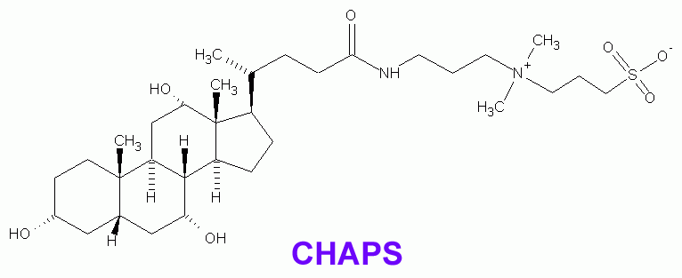
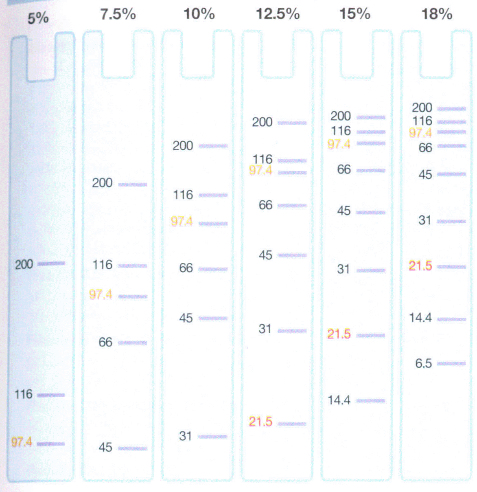

Currently there are two parts. Part 2 has material mostly on mass spectrometry-related proteomics.
Laboratory Setup: Establishing the Proteomics Laboratory
Liebler (Essential Elements of the Proteomics Laboratory,
Ch. 1 in Proteomics in Cancer Research, D. C. Liebler, ed., Wiley,
2005) has provided a guide regarding the role and functions of the
proteomics laboratory, described as essential capabilities.
- protein and peptide separations
- protein digestion
- simple protein identification
- identification of protein components of complex mixtures and multiprotein complexes
- mapping protein modifications
- quantitative analysis
- proteome profiling
He then breaks down the methods and techniques in common use by which these goals are achieved. His descriptions will not be discussed here, but only those list of techniques and methods which are justified as essential to the laboratory:
- 2-D gel electrophoresis (separates intact proteins by two chemistries)
- gel imaging and spot excision
- 1-D (SDS) PAGE
- solution phase IEF (available through kit-based apparatus)
- Purification/Protein Chromatography:
- preparative gel filtration
- preparative ion-exchange
- immunoaffinity chromatography
- 2-D or multidimensional LC-MS/MS
- Enzymatic Digestion in solution and in gel: trypsin, V8 protease, nonspecific proteases (pepsin, proteinase K)
- proteome profiling by MS of intact proteins (MALDI for proteins)
Mass Spectrometry Capabilities
Ion trap MS systems are the most affordable ($175-300K) and typically used in ESI-LC-MS, some having MALDI options too. They can be used in protein IDs as well as modification analysis. Quantitation is achieved by comparing light and heavy isotope-tagged forms. 3-D ion traps can do one MS/MS spectrum per second, and new linear ion traps do up to five spectra per second, with unit resolution (error is ±0.5 m/z units). Higher order (MS/MS/MS or MS3) configurations are found as well.
MALDI-ToF can analyze up to m/z 250,000 in linear modes. Sensitivity decreases with increasing m/z. Reflectron or delayed extraction capabilities improves resolution and mass accuracy. Systems range in cost from $200-500K. Tandem MS configurations improve the ability for MALDI-ionized sambples to be sequenced. Proteomic profiling of serum or tissue of intact proteins has caused a resurgence in MALDI-ToF analysis. SELDI-ToF is part of the proteomic profiling popularity but while its small linear ToF has high sensitivity, it has limited resolution and mass accuracy.
QqToF MS systems have a dc/rf quadruple (Q), followed by an rf-only quadrupole (q) and reflectron ToF. This provides high sensitivity, resolution, and mass accuracy for precursor and product ions. Resolution in 0.01 m/z unit is possible (necessary for accurate charge state determinations). Cost is between $300-600K.
Triple quads were used in MS/MS of peptides. Ion traps are better at fragmentation however and used in that case.
MALDI-ToF-ToF can be used to select precursors (first ToF) whose product ion masses are determined in the second ToF. CID spectra in TOF-TOF are better than in ion trap or QqTOF. Resolution and mass accuracy are comparable to QqTOF.
FTICR makes use of a trap in a 7-12 T magnetic field generated by superconducting
magnet. Ionization sources can be MALDI or ESI. Analysis is top-down
in that whole proteins are excited and fragmented, generating MS/MS of
constituent peptides (as opposed to bottom-up
in which
peptides must be generated outside the MS by digestion).
Additional MS designs continue, usually hybrids of known mass analyzer configurations. Qq-trap is quadrupole ion trap. trap-FT is a linear ion trap with FTICR. The linear trap technology brings higher sensitivity and rapid scanning. Qq-trap exceeds 3Q performance for quantitation by selected reaction monitoring (SRM). By switching from positive to negative ion modes alternately, Qq-trap detects posttranslational modifications, and precursor scanning will detect phosphopeptide precursors. The utility of trap-FT will be in analyzing complex protein or peptide mixtures (without prior purification by HPLC or gels!).
Data Management and Processing
Stored spectra take a great deal of data size for raw and cooked data. The infrastructure of a laboratory should include the ability to track samples, store files, and archive data. An LIMS may be necessary for this purpose depending on work volume.
General Laboratory Practice
This section has been placed in another document because it applies to a wide variety of laboratory practices outside of proteomics, especially general and organic chemistry, and laboratories doing biochemistry and molecular and cellular biology.
This document also contains a link to a separate document for how to set up quantitative calculations in chemistry and all specialites of chemistry (biochemistry, molecular and cellular biology, the omics disciplines).
The document is found (opens up a separate window).
Labware: Containers, Utensils
There are essentially two classes of containers and utensils in the proteomics laboratory or any other kind of laboratory: disposable and non-disposable.
Disposable containers and utensils certainly have their advantages, the primary (most significant) being that if the container is used to hold sample material (as opposed to reagents or stocks), then there is virtually no concern about sample carryover or cross-contamination. The other major advantage is that there is nothing to clean up afterward: the container or utensil is just tossed in the trash/waste. Which brings up the disadvantage of the disposable product: for the concerned environmentalist, the disposable product adds to the garbage heap or the landfill. And when that product is not recyclable or rapidly degradable (or otherwise environmentally friendly), it might cause real stress for the green scientist. Maximizing the use of particularly disposable plastics used in liquid handling/transfer in sterile cell culture is discussed elsewhere.
The advantages and disadvantages of nondisposable containers and utensils are a direct contrast to those of disposable. They do not clutter up the environment, but must be cleaned.
Clean Glassware and The Cleaning of Glassware
Clean glassware is a must, and thus proper cleaning must be done. Even on new glassware. One might erroneously believe that glassware or containers directly out of the box is as clean as one can get, but the scientist never knows how it has been handled.
A first principle for any scientist is never to trust the beaker or flask pulled out from the cabinet. Most glassware has been sitting too long in the shelf of a cabinet and has gathered dust anyway, so a rinse with distilled or deionized water is a must, followed by a drip or air dry.
If the distilled or deionized water does not leave a fine film along the glassware when poured out, but it instead beads up into drops, the glassware is dirty and maybe has a fine oily film on it. A detergent wash is needed.
If a service is used for glassware cleaning, make sure they are using the correct detergents. Even when the glassware or utensile come back, give them a thorough dist. or deion. water rinse and allow to dry, in case detergent residues remain.
Not just any detergents and cleaning products can be used. In particular, where mass spectrometry is done, use of household dishwashing detergents or hand soaps is strictly forbidden. These contain chemicals that often show up as background contaminants impossible to eliminate.
The most general purpose laboratory cleaner is something like Alconox. Prepared as a 1% solution, glassware or other materials can soak in it, or a brush can be dipped into it and used to scour materials. Another popular brand is Decon 90 (Decon Labs).
When using detergents, rinse several times with warm to hot tap water to get rid of the detergent, then several times with distilled or deionized water. Let drip or air dry.
Glass pipets or burets might also be cleaned with special chromic acid formulations: these are nearly satd solutions of Na2Cr2O7 • 2 H2O (soluble to 70 g/l; or the potassium dichromate, soluble to 5 g/l) in conc. H2SO4, letting it sit for several hours (overnight). After a distilled water rinse, it is drained dry. Other acid treatments include mixtures of sulfuric acid and fuming nitric acid.
Strong alkaline treatments include 100 g KOH in 50 ml water, followed by making it up to 1 L with industrial methylated spirit (MeOH).
Container Materials & Construction
In proteomics laboratories, there is not much need for a wide array of containers as for analytical or organic chemistry laboratories. Glassware is typically the Corning Pyrex or Kimax brand and is suitable, which is borosilicate glass. Tempered glass is more heat-resistant. Never apply a burner flame directly on glass, but use a wire gauze to distribute the heat evenly.
Porcelain vessels and dishes can withstand high temperatures and are used in making crucibles for igniting or heating solids. They are useful for evaporations, and resist attack by alkaline solutions better than glass.
Fused silica comes in a translucent and transparent grade. The translucent is more cost-effective. It shows a greater resistance to heat shock and is more durable with acids at high temperature, but is less resistant to alkaline conditions compared to porcelain. Corning Vycor (96% silica glass) is a transparent form.
Metal containers include platinum, which is extremely resistant to chemical and heat; platinum containers are hardened with alloyed metals (rhodium, iridium, or gold in trace amounts). A better grade is Zirconia Grain Stabilized (ZGS) made using zirconium (IV) oxide. Crucibles of platinum should be heated with Pt or silica triangles; others are unsuitable since they can damage platinum. A lumnious flame may cause formation of carbides of platinum, disintegrating the metal surface or causing it to become brittle.
Silanizing/Siliconizing Plasticware/Glassware
Many working in proteomics laboratories caution against silanizing plasticware, but instead they recommend buying containers that are reputed to be low-adsorbing for peptides. The experience is related that the silane compound can not be thoroughly washed from the container such that it does not affect mass spectrometric analysis, and silanes or their derivative compounds can especially cause fouling of electrospray ionization sources.
However, if there is an absolute need to silanize a product, the procedure is given below.
(taken from Sambrook, Fritsch, Maniatis, Molecular Cloning: A Laboratory Manual, 1989)
Method used by B. Seed:
- Put items to be silanized/siliconized in a dessicator. Place in fume hood.
- In the fume hood, to a small beaker, add 1 ml of dichlorodimethylsilane [ (CH3)2SiCl2 ]. Place in the dessicator.
- Through a trap to a vacuum pump or line, apply suction until dichlorodimethylsilane starts to boil.
- Immediately seal off the vacuum by turning the dessicator top (if it works that way), or clamping the hose line to the vacuum trap. It is essential that the vacuum be maintained. Caution: damage to vacuum pump seals can occur if silane compound gets to pump, so be prepared to act immediately.
- After 1-2 hours, vent the dessicator to the fume hood.
- For glassware: bake for 2 hr at 180°. For plasticware: rinse extensively in water of the appropriate quality and then be allowed to dry, perhaps in an oven at 40-50° if in a hurry.
Another method is to soak or rinse plasticware in a 5% dichlorodimethylsilane in chloroform or heptane. As solvent evaporates, a coat is deposited on the material. Glassware should be rinsed in water or baked at 180° for 2 h.
Shimadzu Electronic Weighing Balances
A special document has been prepared as a quick reference on the use, care, and maintenance of the Shimadzu electronic weighing balances available in the Proteomics Unit laboratory.
Reagents, Solvents, Chemicals, Compounds Used In Proteomics
Water
For 99% of all methods and processes in proteomics, especially where the water makes contact with the substances of interest (peptides and proteins), the water needs to be of Type I quality.
This is water that is fully deionized (to ≥18 MΩ cm) and filtered for volatile and involatile organics (through activated carbon) for which the metal content is at trace levels. It might also be filtered for particles (through a high-flow 0.22 or 0.45 µm filter). This is water typically obtained through an on-demand water purification system (such as Millipore Elix/MilliQ gradient, or Barnsted system).
The British Standard 3978 (ISO 3696-1987) specifies three different grades of water (see table below). Grade 3 is prepared by single distillation of tap water or deionization or reverse osmosis, and suitable for general analytical purposes. Grade 2 is suitable for AAS and determination of substances in trace quantities; prepared by re-distillation of Grade 3 or RO-treated or deionized water. Grade 1 is usable for HPLC and ultratrace amount determinations, and is obtained by RO treatment or deionization of Grade 2 water (if either not done), followed by filtration through 0.2 µm filter.
| Grade | Conductance (mS m−1) at 25° | Oxidizable Matter (mg oxygen L−1) | OD254 1 cm cell | Residue After Evaporation (mg kg−1) | SiO2 (mg L−1) | pH at 25° |
|---|---|---|---|---|---|---|
| 1 | 0.01 | † | 0.001 | † | 0.01 | * |
| 2 | 0.1 | 0.08 | 0.01 | 1 | 0.02 | * |
| 3 | 0.5 | 0.4 | ‡ | 2 | ‡ | 5.0-7.5 |
† Not applicable ‡ Not specified * pH results difficult in highly purified water; results of doubtful significance | ||||||
Water in Mass Spectrometry
The highest quality water is necessary for all mass spectrometry operations, both MALDI-MS and ESI-MS.
But it is especially critical for ESI-MS since water is usually the principal solvent and present at least in at least a 50% proportion by volume. In positive mode ESI-MS, a significant count of background ions can be seen in water of all kinds in the m/z100-800 region, one important to individuals generating CID MS/MS spectra, since a high background can make spectra have a low confidence in interpretation. These background ions are typically plasticizers leaching out into water or the concentrated acids if they are stored in plastic containers.
Denaturing & Chaotropic Reagents
Urea and thiourea are commonly used in extraction for proteome analysis by 2DGE. They sequester water and specifically breakdown protein secondary structure (alpha helices and beta sheets), which virtually form the structure of all globular and fibrous type proteins. The Walker textbook mentions that thiourea will increase the number of proteins extracted, but that these proteins are generally cytoplasmic or water-soluble, and not membrane proteins.
Use of urea and thiourea is limited to a strict temperature range. Below 15°, they fall out of solution, so ice-cold solutions are not possible when at high concentrations. They should not be kept above 30° for any length of time as well, since the amide can be hydrolyzed to form cyanates which are themselves reactive with protein. This can lead to unpredictable peptide analysis during MS.
Reducing Agents
[some of the information given in this section was obtained from sales literature published by Pierce Biotechnology, Inc.]
Reducing agents serve two particular and typically separate purposes in proteomics.
Elimination of Oxidizing Compounds. Dissolved oxygen molecules have the potential to make trouble. They can react in particular with dissolved transition metals, particular iron (Fe2+) which is found everywhere and especially in tissues, to form all sorts of oxygen-based free radicals (the reactive superoxide anion and the even more reactive hydroxyl free radical anion). There are also other compounds and metabolites that are freed from isolated subcellular compartments during extraction processes, and they can react with substances that are normally not mixed.
The substances that are particularly affected by these oxidizing compounds are biologically active proteins (the concern here is for enzymes in particular). If purification and characterization of biologically active proteins is the goal of the process, then the elimination or at least inhibition of oxidizing agents dissolved in solution is essential to prevent any de-activating modification resulting in loss of function.
Reduction of Cystine Disulfide Bonds. Reducing agents are used to break disulfide bonds
2-Mercaptoethanol (β-Mercaptoethanol)
β-ME (FW 78.13, CAS# 60-24-2, density: 1.11 g/ml) is typically used as a reducing agent when large amounts of buffer/reagent/solution are employed in a massive purification process (and used in a pinch when no other reagent is available). It less effective than DTT or the triphosphines and thus used to maintain reducing environments. It should be used between 1-5 mM for this purpose. It can also be used to reduce disulfide bonds too, but more time and a higher concentration should be given to the process.
Dithiothreitol (DTT)
DTT (FW 154.25, CAS# 3483-12-3) is used both for maintaining reducing environments and for reducing disulfide bonds. Used in concentrations of 10 mM or greater it is effective at reducing disulfide bonds. Use at less than 0.5 mM if reducing environments are wanted without disulfide bond reduction.
DTT has a slight acidity at a high pH (pH > 8). In IEF gels, it thus ionizes and migrates toward the anode (toward lower pH end). This can result in loss of the thiol form of the proteins.
Trisubstituted phosphines
Triphosphines are very reactive reducing agents used by synthetic organic chemists. They recently have been been reported to be useful in reducing cystines (disulfide-linked bonds). The triphosphines should not be used as reducing agents to scavenge oxidizing agents in buffers or reagents: they are generally very unstable in aqueous solutions and rapidly degraded.
The reaction mechanism is illustrated below.
Tributylphosphine (TBP)
Herbert et al. (Electrophoresis 19: 845-851) reported that replacing DTT with tributylphosphine [(CH3CH2CH2CH2)3P, CAS #998-40-3] in the first dimension of 2D gel electrophoresis resulted in better protein solubility, and thus shorter run times and increased resolution. Less horizontal streaking is seen in the final gel. This reducing agent is added to the sample and also during the IPG strip equilibration procedure.
TBP is prepared in reagent form as a 100 × stock. Dissolve TBP in 1-methyl-2-pyrrolidinone (also called N-methylpyrrolidinone, NMP) to 200 mM and seal under nitrogen gas. Store at −80°. The final concentration in use will be 2 mM.
In handling TBP, one should always wear gloves and lab coat. It is also best to pipet material from reagent bottles to reaction tubes within a fume hood, as it not only smells bad, but it can be toxic if one is pipetting tens of samples over a long period.
Tris(2-carboxyethyl)phosphine (TCEP)
This reagent has the same reaction mechanism as TBP but is odorless. This reagent (CAS #51805-45-9) has a MW of 250.15; the hydrochloride salt has a MW 286.65. Like TBP it is more effective than DTT and β-mercaptoethanol in reducing disulfides. This material is stable at room temperature.
The reaction is as follows:
P(CH2CH2COOH)3 + R-S-S-R + H2O → P=O(CH2CH2COOH)3 + 2 R-S-H
A range of concentration from 5-50 mM is usually sufficient, and reaction is achieved within a few minutes are room temperature. Ideally TCEP should be used in a neutral pH since there is a minimization of the possibility of amide bond cleavage during reduction.
SDS-PAGE. In reducing proteins for SDS-PAGE, Pierce sells TCEP dissolved in a neutral pH solution (Prod #77720, Bond-Breaker® 500 mM TCEP solution, neutral pH, 5 ml). Dissolve this is a 2× Tris-glycine-SDS electrode buffer solution in a 1:10 dilution, then mix a 1:1 volume with sample. Heat at 95° for 5 min, cool then load.
Alternatively the solid can be bought and effective reduction can be done at room temperature at pH 5 in about 5 min. This material is resistant to oxidation in air, it is nonvolatile and does not react with other functional groups.
Use of Denaturants and EDTA. While a denaturant is not really required, guanidine HCl can help in exposing internal disulfides. Urea is not recommended since cyanates formed within react with sulfhydryls. EDTA probably should be included (Pierce recommends 5-20 mM) since this removes divalent metals which promote re-oxidation and reduce TCEP activity.
Pierce Bond-Breaker™ TCEP Solution
This reagent (Cat #77720) is 0.5 M TCEP in a 5 ml neutral pH solution stored at room temperature. It can replace 2-mercaptoethanol or DTT used in SDS-PAGE sample buffers. Solution neutralization helps to avoid the effects of protein by strong acid presence.
For SDS-PAGE sample buffer, the final effective working concentration is 25 mM (50 mM, a 1:10 dilution, in 2× sample buffer). A typical 2× sample buffer will contain 25 mM TrisHCl pH 6.8, 20% glycerol, 4% SDS, 0.005% bromophenol blue, and 50 mM TCEP. Mix 1 vol sample with 1 vol buffer and heat 95° for 5 min.
Protease Inhibition
Serine Protease Inhibitors
The serine proteases are a broad class of proteases that include trypsin, chymotrypsin, thrombin.
PMSF
Phenylmethylsulfonylfluoride (PMSF) (MW 174.20, CAS# 329-98-6) has been used for many years to inhibit serine proteases of all kinds usually present particularly in mammalian tissue extracts. It is usually used between 0.1 and 1 mM, or 20-100 µg/ml. Stock solutions of 10 mg/ml are made in isopropanol. It is effective against trypsin, chymotrypsin, kallikrein, subtilisin, and thrombin. It will also inhibit papain, a cysteine protease. It is soluble only in methanol and ethanol.
Stock Solution Preparation. PMSF is usually prepared fresh from the solid form when making up extraction buffers. It hydrolyzes somewhat rapidly in aqueous solutions, even stored in the refrigerator. However, small stock solutions in ethanol can be made, if used within a few weeks. PMSF is soluble in simple alcohols, and is usually prepared in ethanol. To prepare a 10 ml solution of 100 mM PMSF:
- Weigh out 0.174 g of PMSF into a glass screw cap container.
- Add 10 ml ethanol and dissolve.
- Store at −20°
AEBSF
4-(2-aminoethyl)benzenesulfonyl fluoride (AEBSF) (MW 239.70, CAS# 30827-99-7) is a less toxic variant of the serine protease class irreversible inhibitor, PMSF. It is used at concentrations <1 mM, and is effective against trypsin, chymotrypsin, kallikrein, plasmin, and thrombin. It is soluble in water and ethanol.
Aprotinin
Aprotinin (CAS# 9087-70-1) is a competitive reversible inhibitor of serine proteases (chymotrypsin, trypsin, kallikrein and plasmin). The effective concentration of this water-soluble material is 0.1-0.3 µM, or 0.1-2.0 µg/ml. Stock solutions of 10 mg/ml are made in PBS.
Leupeptin
Leupeptin (MW 475.6, CAS# 103476-89-7, Sigma #L-2884) is acetyl-Leu-Leu-Arg-al, where the COOH terminus is an aldehyde instead of a carboxylic acid. It often is presented as the hemisulftate salt (MW 493.61) and is soluble in water at least up to 50 mg/ml (stocks of 10 mg/ml in water should be made), and should be stored at <0°.
It is largely targeted to serine and cysteine proteases with positive charge residues (basic) specificity. Among the enzymes it inhibits, it includes:
- trypsin
- papain
- plasmin
- thrombokinase
- kallikrein
- cathepsin B
The half-maximal inhibitory concentration ranges from 0.5 to 75 µg/ml, depending on enzyme and substrate. The working concentration is usually 10-100 µM, or 0.5-2 µg/ml.
Leupeptin does not inhibit:
- chymotrypsin
- elastase
- renin
- pepsin
Chymostatin
Chymostatin (MW 605.04, CAS# 9076-44-2) is a reversible serine protease inhibitor of α-, β-, γ-, and δ-chymotrypsin, but will also inhibit cysteine proteases (papain, etc.). It is soluble in DMSO and acetic acid, and its effective range is 10-100 µM.
Benzamidine
Benzamidine hydrochloride (MW 156.65, CAS# 1670-14-0) is a water- and ethanol- soluble agent used between 0.5-4 mM against arginine-specific proteases (trypsin, kallikrein, thrombin).
Soybean Trypsin Inhibitor
Soybean trypsin inhibitor (STI, CAS# 9035-81-8) is a water-soluble substance which inhibits trypsin and trypsin-like serine proteases.
Cysteine Protease Inhibitors
See Leupeptin for an inhibitor that targets Cys proteases with specificity for basic side chains. Also many other inhibitors of serine proteases also inhbit cysteine proteases (see the serine protease section).
Antipain
Antipain dihydrochloride (MW 677.6, CAS# 37691-11-5) is a reversible inhibitor of cysteine and serine proteases (trypsin, papain, and cathepsin A and B). It is soluble in water and methanol and works between 1-100 µM.
Aminopeptidase Inhibitors
Aminopeptidases are exoproteolytic enzymes that hydrolyze the peptide bond that joins the amino (N-)terminal amino acid to the second amino acid in the chain. This is the same type of hydrolytic function as the exoproteases that are the carboxypeptidases, except that those enzymes do it from the other (C-terminal) end.
Many aminopeptidases are have broad specificity—that is, they can hydrolyze the peptide bond of whatever amino acid is on the N-terminus, although there are limitations as always.
Inhibitors of aminopeptidases tend to be substrate-type
,
that is they mimic the substrate of the enzyme, and then reversibly
or irreversibly inactivate it.
Bestatin
Bestatin (MW 308.4, CAS 65391-42-6) is (−)-N-3R-amino-2S-hydroxy-4--phenylbutyryl]-L-leucine HCl. It was found in Streptomyces olivoreticuli to be a competitive inhibitor of many aminopeptidases, including
- aminopeptidase B
- leucine aminopeptidase
- tripeptide aminopeptidase
The methyl ester form has a slightly stronger inhibition of neutral aminopeptidases than bestatin, but a weaker activity against basic aminopeptidases. Bestatin is usually provided in methanolic solutions at 1-5 mg/ml. The recommended working concentration is about 40 µg/ml (~130 µM). Wheat germ extracts appear to contain 100-300 times the levels of aminopeptidases relative to reticulocyte lysates.
Pepstatin A
Pepstatin A (MW 695.9, CAS# 26305-03-3) is an aspartic acid protease inhibitor effective against pepsin, renin, and cathepsin D; it also inhibits HIV protease . It is soluble in methanol or DMSO and is used at 1 µM or 1 µg/ml. Stock solutions of 1 mg/ml should be prepared in MeOH.
E-64
E-64 is trans-epoxysuccinyl-L-leucylamido(4-guanidino)butane (MW 357.4, CAS# 66701-25-5) which irreversibly inhibits cysteine proteases like papain, calpain, and cathepsin B, H, L, and S. It is soluble in DMSO and its working range is 1-10 µM.
Metalloproteinase (Metal-Dependent Protease) Inhibitors
The metal-chelating inhibitors work because the action of the protease requires usually a transition metal ion near or in its active site, or perhaps essential to substrate binding.
EDTA
N,N′-Ethylenediaminetetraacetic acid (EDTA disodium dihydrate, FW 372.24, CAS# 6381-92-6; EDTA tetrasodium, FW 380.17, CAS# 13235-36-4) is an excellent chelator of many divalent metal ions in both the alkaline earth (Mg2+, Ca2+) and transition metal (Cu2+, Zn2+, Mn2+) classes. It thus inhibits metal-dependent enzymes of all types: proteases, protein kinases and phosphatases, and a great many other enzymes including oxidoreductases, dehydrogenases, non-protein hydrolases, etc. The effective concentration is 0.5-2 mM.
Stock Solution Preparation. To prepare 100 ml of a 0.5 M sodium EDTA solution:
- In a beaker between 100 and 125 ml size, weigh out 18.61 g disodium EDTA (EDTA•Na2) containing 75-80 ml water and a stir bar, placed on a magnetic stirrer.
- Begin stirring (it will not likely dissolve), and add dropwise 6 M sodium hydroxide. Wait for several seconds and even longer after each drop (each drop is somewhere between 30 and 100 µl).
- As more of the salt begins to dissolve, wait longer between addition of drops. Be patient! Do not overadd the sodium hydroxide. Although not essentially required, monitor the pH of the dissolution. It should all be dissolved by the time pH 8.0 is reached, which is the effective stopping point. As you get closer to pH 8.0, and assuming the volume is not close to 100 ml, a switch can be made to 0.5 or 1 M sodium hydroxide, which gives finer control of the addition of strong base.
This concentrated solution of EDTA is usually the most convenient for preparing solutions of all kind containing EDTA.
EGTA
Ethylene glycol bis(2-aminoethyl ether)-N,N,N′′tetraacetic acid (EGTA, MW 380.25, CAS# 67-42-5) is a more limited chelator, acting against calcium-activated proteases. It is soluble in alkaline solution (slight amount of sodium or ammonium hydroxide) and its effective range is 1-10 mM.
1,10-Phenanthroline
1,10-Phenanthroline (MW 198.2, CAS# 5144-89-8) is a better chelator of divalent transition metal ions such as Fe2+, Cu2+, Zn2+, Co2+, which are the metals for many classes of metalloproteases. It is soluble in alcohol.
Phosphoramidon
Phosphoramidon (MW 543.5, CAS# 119942-99-3) is an inhibitor that targets thermolysin and other metalloproteases; it also inhibits collagenase. It is soluble in DMSO or methanol, and is used between 5-500 µM.
Commercial Products for Protease Inhibition
| Protein Source | Components | |||||||||||||||
|---|---|---|---|---|---|---|---|---|---|---|---|---|---|---|---|---|
| AEBSF | Aprotinin | Bestatin | Bromo- tetramisol | Canthardin | EDTA | E-64 | Imidazole | Leupeptin | Microcystin LR | Pepstatin A | Phosphoramidon | 1,10-Phenanthroline | Sodium Molybdate | Sodium Orthovanadate | Sodium Tartrate | |
| Tissue Culture Media (Sigma P1860) | X | X | X | X | X | |||||||||||
| Made as solution in DMSO 1 ml of cocktail will inhibit dilution of > 1:200 in tissue culture media to prevent proteolytic degradation of secreted proteins | ||||||||||||||||
| Bacterial Cells (Sigma P8465) | X | X | X | X | X | |||||||||||
| Cocktail form: Lyophilized powder +
vial of DMSO 1 ml of cocktail will inhibit 20 ml of cell lysate from 4 g (wet weight) of E. coli cells | ||||||||||||||||
| Mammalian Tissue (Sigma P8340) | X | X | X | X | X | X | ||||||||||
| Form of cocktail: Solution in
DMSO 1 ml of cocktail will inhibit 100 ml of cell lysate from 20 g (wet weight) of bovine liver or 10 ml of cell lysate obtained from CHO cells at a density of 107 cells per ml | ||||||||||||||||
| Fungal/Yeast Cells (Sigma P8215) | X | X | X | X | ||||||||||||
| Form of cocktail: Solution in
DMSO 1 ml of cocktail will inhibit 100 ml of cell lysate from 20 g (wet weight) of S. cerevisiae cells | ||||||||||||||||
| Plant Cells (Sigma P9599) | X | X | X | X | X | X | ||||||||||
| Form of cocktail: Solution in
DMSO 1 ml of cocktail will inhibit 100 ml of cell lysate from 30 g (wet weight) of plant tissue | ||||||||||||||||
| His-Tagged Proteins (Sigma P8849) | X | X | X | X | X | |||||||||||
| Form of cocktail: Solution in
DMSO 1 ml of cocktail will inhibit 100 ml of cell lysate from 20 g (wet weight) of E. coli cells or 10 g (wet weight) of baculovirus infected cells | ||||||||||||||||
| General Use (Sigma P2714) | X | X | X | X | X | X | ||||||||||
| Form of cocktail: Lyophilized
powder (water soluble) 1 ml of cocktail will inhibit 1 mg of pancreatin | ||||||||||||||||
| Tyr Protein Phosphatases & Alkaline Phosphatases (Sigma P5726) | X | X | X | X | ||||||||||||
| Form of cocktail: Solution in
water 1 ml of cocktail will inhibit 100,000 × g supernatant from human placenta, bovine liver, rabbit muscle, A431, or Jurkat cell extracts at a protein concentration of approx. 5 mg/ml | ||||||||||||||||
| Ser/Thr Protein Phosphatases & L-isozymes of Alk. Phosphatases (Sigma P2850) | X | X | X | |||||||||||||
| Form of cocktail: Solution in DMSO | ||||||||||||||||
complete inhibition of proteases during extractions from animal and plant tissues or cells, yeast and bacteria.This product (Cat #1 697 498 for 20 tablets, Cat #1 836 145 for 3 × 20 tab) inhibits a broad spectrum of serine, cysteine, and metalloproteases as well as calpains. Roche also sells more limited protease inhibitors such as Pefabloc.
Tablets are prepared in 2 ml of distilled water or in 0.1 M phosphate pH 7.0, and become a 25× stock. Thus they will inhibit a total of 50 ml extract solution. Stored at 2-8°, stock solution is stable for 1-2 weeks, and at least 12 weeks when stored −15 to −25°.
Animal tissues typically contain serine, cysteine, and metalloproteases.
Serine and cysteine proteases dominate in plants. Bacterial generally
have serine and metalloproteases. Aspartate (acid
)
proteases occasionally occur in some animal tissues but their activities
are generally observed at low pH; pepstatin should be added as a precaution
if extractions are done unbuffered or at a low pH.
EDTA is present at 1 mM. Extracts containing divalent metals may overwhelm the presence of EDTA and activate the metalloproteases. Avoid using them in extractions. If proteins are recombinants (His-tagged) to be purified by metal-chelate affinity chromatography, it is necessary to remove EDTA (such as by dialysis) prior to chromatography.
Inhibition of Protein/Peptide-Modifying Processes
In the extraction of many cells and tissues of different types, particular chemicals and enzymes can modify proteins and peptides, and these modifications must be inhibited or prevented. This includes protein kinases and phosphatases, which respectively add or remove phosphate moieties to the side chains of many residues, and other sorts of enzymes (acetylation enzymes, glycosyltransferases, etc.).
Protein Kinases
Protein kinases depend on ATP bound to divalent metal ion cofactors (Mg2+, Mn2+). It is their dependence on the divalent metal ion cofactors that is exploited. One simply uses a metal chelator (EDTA, EGTA) to tie up the cofactor and thus slow or stop the kinases. EDTA concentration can range from 0.1 mM to 10 mM, although 0.5 mM seems usual. EGTA is more specific for Ca2+ than Mg2+.
Protein Phosphatases
Protein phosphatases are present in many eukaryotic tissues, where phosphorylated proteins have their state changed by dephosphorylation of the protein rather than by degradation of the protein by a protease (another way of removing phosphorylated proteins). Some of these enzymes are metal-dependent (Mg2+ and Ca2+) and will be inhibited by chelators. Protein phosphatases in eukaryotes have many forms: protein phosphatases 1, 2A, 2B, and 2C are well characterized (see P. Cohen, Meth. Enzymol. 201: 389, 1991).
Okadaic acid. Produced by halichondric marine sponges (porifera), this polyether fatty acid is a cause of diarrhetic poisoning and is also a tumor promoter. It is very potent at inhibting protein phosphatases 1 and 2A (PP1 and PP2A), weak at inhibiting PP2B, and has no effect on PP2C. The IC50 for PP1 and PP2A are 5-10 nM and ~50 pM, respectively.
Microcystin-LR.
Trifluoperazine. Inhibits PP2B.
Tyrosine protein phosphatases are sensitive to the presence of sodium orthovanadate, which probably mimics the phosphate group and competitively inhibits the phosphatase. Na3VO4 present up to 1 mM is usually sufficient to inhibit Tyr protein phosphatases.
Detergents
Detergents are surface-active agents that can mean the ability to solubilize membrane proteins or leaving them insoluble and impervious to analysis.
Zwitterionic Detergents
CHAPS is 3-[(3-cholamidopropyl)dimethyl-ammonio]-1-propanesulfate (CAS #75621-03-3, MW 614.89). It is used as a zwitterionic solubilizer of proteins for isoelectric focusing (IEF), used anywhere between 1-4% concentration. (Sigma sells this at about €50-60 for 1 gram in 2005.)

CHAPS promotes solubilization and stabilization by shielding hydrophobic zones from nonspecific aggregration and by stabilizing disordered loops.
CHAPSO is 3-[(3-cholamidopropyl)dimethyl-ammonio]-2-hydroxy-1-propanesulfate (CAS# 82473-24-3, MW 630.90), and is the 2-hydroxy form of CHAPS. (Sigma sells anywhere from €70-160 for 1 gram; the cost difference is usually due to the extent of analysis for purity, such as presence of heavy metals, etc.)
C7BzO is 3-(4-Heptyl)phenyl-3-hydroxypropyl)dimethylammoniopropanesulfonate (no CAS# yet, MW 399.59) is among a new class of proteins (such as ASB-14) that is a broadly useful solubilizing detergent that works with bacteria, mammalian, and plant cells (see structure).

Sigma-Aldrich claims this detergent is more effective than CHAPS at solubilizing a total extract at 1% (w/v) concentration. (Sigma sells 1 gram of this detergent at €100 in 2005.)
The Sulfobetaines
The sulfobetaines listed below are all effective at protein solubilization, particularly of membrane proteins.
ASB-14 is 3-[N,N-dimethyl(3-myristoylaminopropyl)ammonio]propanesulfonate with a formula CH3(CH2)12C(=O)NH2(CH2)3N+(CH3)2CH2CH2CH2SO3−; it also goes by the name Amidosulfobetaine-14 (CAS #216667-08-2, MW 434.68).
SB3-8 is 3-(octyldimethylammonio)propanesulfate inner salt with a formula of CH3(CH2)7N+(CH3)2CH2CH2CH2SO3−; it also known as Zwittergent 3-8, octyl sulfobetaine, and dimethyloctyl(3-sulfopropyl)ammonium hydroxide inner salt (CAS #15178-76-4, MW 279.44).
SB 3-10 is 3-(decyldimethylammonio)propanesulfate inner salt with a formula of CH3(CH2)9N+(CH3)2CH2CH2CH2SO3−; it also known as Zwittergent 3-10 and caprylyl sulfobetaine and sulfobetaine 10 (CAS #15163-36-7, MW 307.49).
SB 3-12 is 3-(dodecyldimethylammonio)propanesulfate inner salt with a formula of CH3(CH2)11N+(CH3)2CH2CH2CH2SO3−; it also known as Zwittergent 3-12 and lauryl sulfobetaine and sulfobetaine 12 (CAS #14933-08-5, MW 335.55).
Anionic Detergents
Sodium dodecyl sulfate (SDS, also called sodium lauryl sulfate, MW 288.38, CAS# 151-21-3) is about the best known of this class of detergents. It is a strong denaturant of protein, and binds to protein at a constant 1.4 grams per gram protein. This imparts a constant negative charge-to-mass ratio, and because the charge-to-mass ratio is constant, this means that electrophoretic mobility toward the anode is based on relative mass differences alone, and so thus mobility is a measure of differences in mass. This is the basis of SDS-PAGE.
Cationic Detergents
Cetyltrimethylammonium bromide (CTAB, MW 364.09, CAS# 57-09-0) is about the best known in this class. Like all ionic detergents with along nonpolar chain, it is efficient at denaturating proteins. Cetyldimethylethylammonium bromide (CE2MAB, MW 378.5, CAS# 124-03-8) differs from CTAB by only an ethyl instead of a methyl group on the ammonium group.
Nonionic Detergents
Brij®-35 is polyoxyethylene lauryl ether, with a structure (CH2CH2O)nC12H26O (CAS# 9002-92-0).
Brij 30 and Brij 96 are good solubilizers when no denaturing conditions are present (urea and thiourea are not used).
Octylphenoxypolyethoxyethanol goes by the name Nonidet P-40 (NP-40) and is an effective nonionic detergent.
t-Octylphenoxypolyethoxyethanol is a trimeric form of NP-40 that is called Triton X-100 (MW avg. 647, CAS# 9002-93-1).
Triton X-114 is (CH2CH2O)7-8C14H22O
Octyl-β-D-glucose (MW 292.38, CAS# 29836-26-8) is excellent at solubilize membrane proteins without denaturation. It is the detergent used in the Beckman PF-2D chromatofocusing buffer.
Octyl-β-D-thioglucose (MW 308.4, CAS# 85618-21-9).
Tween® 20 is polyoxyethylene-20-sorbitan monolaurate (CAS# 9005-64-5) is often used in immunochemistry and in situ hybridization.
Tween® 80 is polyoxyethylene-20-sorbitan monooleate (CAS# 9005-65-6).
The Pierce Protein Extraction Reagents
Pierce Chemical developed a set of reagents for what it calls is the mild extraction of all kinds of the cell types below. Generally the detergent extracts the proteins without complete solubilization of membranes that complicate the extraction (such as extracting the DNA). Although the formulation is proprietary, the components were revealed in an ESI-MS study
- B-PER. The Bacterial Protein Extraction Reagent contains n-octyl-β-D-thioglucopyranoside as the major detergent, with a 20 mM TrisHCl pH 7.5 buffer.
- Y-PER. The Yeast Protein Extraction Reagent contains as the major detergent N-tetradecyl-N,N-dimethyl-3-ammonio-1-propanesulfonate in a 0.1 M phosphate pH 7.4 buffer.
- M-PER. The Mammalian Protein Extraction Reagent contains the zwitterionic detergent CHAPS in a 25 mM bicine pH 7.6 buffer.
Organic Solvents
Methanol
Typically used in gel staining, but also in HPLC of peptides and proteins as well. It has many uses. The lowest grade generally used is ACS Reagent grade, but when used in HPLC, a chromatography grade (higher) should be used.
MeOH might be used in combination with chloroform (CHCl3) to dissolve membranes in tissue extractions prior to the use of zwitterionic or nonionic detergents in membrane protein extraction.
Chloroform
Might be used in combination with MeOH to extract membrane proteins by first dissolving membranes.
Cell & Tissue Extraction/Homogenization
The thorough extraction of cells and tissues usually involves a combination of chemically and mechanically techniques.
Mechanical Extraction Modes
Potter-Elvehjem
This is a mortar-pestle homogenizer with the mortar being like a round-bottom glass test tube and the upper expanded mouth. Homogenization is achieved both by grinding on the rounded tip of the pestle and the pressing of the tissue through the cylindrical body of the pestle. Ground glass tips can also be found and are effective on connective tissue. Teflon (PTFE) pestles are used for softer tissues.
DUALL
Provides a conical shape on the lower part of the pestle to provide a greater grinding surface area compared to the Potter-Elvehjem. The ground glass pestle is better for muscle (including heart) and lung and for tissues which are typically connective. The PTFE pestles are most suited to brain and liver.
Dounce Homogenizer
A Dounce homogenizer is a specially constructed variation the mortar and pestle used to extract suspended cells not associated with tissues, although it can break up loosely held together tissues too. The Dounce homogenizer is ideal for making preparations of intact nuclei from extracted cells.
It is typically made of glass such that the extraction is visible to the user.
Pestles come in two types: A
and B
.
The A-type pestle is larger and might be used for the initial extraction. A switch to the B-type pestle has a smaller clearance and provides final homogenization. The A-type pestle usually has clearance of 70-150 µm in range, which disrupts cultured animal cells. The B-type pestle has a clearance ranging from 15-75 µm, which disrupts cells and nuclei.
To make preparations of intact nuclei, the extraction buffer usually contains sucrose (0.32 M) to maintain the integrity of the nucleus during extraction. Use the A-type pestle and only for at most 10 strokes. The extraction is then spun down to get a pellet rich in nuclei, which then are later extracted.
Ultrasonic Homogenization
Ultrasonic homogenization uses high frequency acoustic energy to shatter cell membranes of all kinds. It is best used for individuals cells suspended in solution rather than tissues, although it can be used to homogenized minced or diced solid tissues. It should be used to homogenize fibrous tissues of any kind.
Sonics Vibra Cell VC130
The Sonics Vibra Cell ultrasonic processor features a 130 watt probe.
Proper Use
Take note of these precautions before using the equipment:
- When clamping/mounting probe, NEVER clamp the probe itself, but the upper portion of the converter housing.
- The system should be properly electrically grounded.
- Never operate the power supply unless it is connected to the converter.
- Never touch a vibrating probe.
- Never allow a microtip or extender to vibrate in the air for more than 10 seconds.
- Never operate a probe with threaded end without a tip, extender, or microtip.
- The converter should be air-cooled when sample temperature exceeds 100° and when working at high intensity for more than 30 min.
- It is recommended that a sound-dampening enclosure or ear protection be used when operating the processor.
- When sonicating in low surface tension liquids (total or high proportion organic solvents), use a solid probe rather than a probe with a replaceable tip. Particulates can work their way into the threads between the tip and the solid portion of the probe, causing loss of resonance and power supply failure.
Operation
The power supply produces a high frequency signal of electrical energy transmitted to a piezoelectric transducer within the converter. The probe itself is constructed to intensify or amplify the vibrations creating pressure waves in a liquid. Cavitation (bubbling) of the liquid occurs creating shock waves with elevated pressures and temperatures. Larger probe tips allow larger volume processing but lower intensities. Selection of the proper probe tip for the volume to be processed is important.
| Probe tip diameter | Volume scale (ml) |
|---|---|
| 2 mm microtip | 0.15 - 5 |
| 3 mm microtip | 0.25 - 10 |
| 6 mm microtip | 10-25 |
| 13 mm probe | 50-150 |
The 3 and 6 mm microtips are standard with some models. The 13 mm probe is available with and without replaceable tip.
The ultrasonic processor has the following controls:
- Amplitude. This switch move up and down to toggle power on and off. It also rotates to set vibrational amplitude (frequency of vibrations).
- Pulsing (only with units NOT having thumb-activated pulser). This is located on the converter and, when pressed, activates the sonication for purposes of pulsing without timing.
- Pulse/Continuous (only with units having thumb-activated pulser). This switch puts the processor into either a pulsing or continuous mode.
- Timer (only with units NOT having thumb-activated pulser). Duration can be set from 1-10 min. Press it to activate the ultrasonic in continuous mode for the time set.
- Pulse (only with units NOT having thumb-activated pulser). This activates the processer in pulsed mode. The duration can be from 1 second off/1 second on, to 1 second off, 10 seconds on. The off cycle is always 1 second, whereas the on cycle varies from 1-10 sec. When in the off position, ultrasonication is continuous.
- Wattmeter. The power setting to the probe.
If the probe has a pulsing button, it will be connected to the 4-pin connector on the rear of the unit. If it does not have one, it will connect to the BNC connector. The processor also has a connector for an optional footswitch cable.
- Set the AMPLITUDE in OFF position.
- Plug in the power line.
- Mount probe assembly into lab stand when not in use.
- Immerse probe into sample. Immerse it deeply: foaming might occur and inhibit cavitation.
- To use pulse operation, set PULSE/CONTINUOUS switch to Pulse; for continuous, set switch to Continuous.
- Set Amplitude to 50% at first (30% with a microtip).
- Set PULSER mode for manual pulsing; set TIMER for timed pulsing, and depress TIMER knob.
- Adjust AMPLITUDE knob during operation as required to achieve disruption.
- It is better to use a lower power setting to prevent foaming than a higher one that causes it. Increase the time of processing if lowering the power setting.
Gram-negative bacteria require 10-15 min of processing, and gram-positives like staphylococcus need 20-30 min. Bacilli (rod-shaped bacteria) disrupt more easily while cocci (spherical bacteria) are more resistant. The Mycobacteria (tubercle bacilli) are very resistant to sonication. Animal cells disrupt more easily than plant cells, and red blood cells are disrupted more easily than muscle cells.
Addition of glass beads in the 0.05-0.5 mm size can promote cell disruption, and is essentially required when trying to extract spores and yeast. One volume beads to two volumes liquid is useful.
Freezing at 70° and rapid thawing in water just prior to disruption is often quite useful. Dicing tissues into small pieces also aids disruption. Generally, work with the smallest volume possible to confine sample movement, especially of solid tissues. Glass and stainless steel containers do better at providing disruption while plastic somewhat dampens the effects.
Bacterial/Prokaryotic Extraction
For mechanical extraction, a sonicator or French press can be used to break open cells. Sonicate on ice at a strong power setting, and long enough to break down DNA (if trying to isolate DNA, especially genomic DNA, do not use a sonicator by trying the alkaline-SDS lysis method).
Cytoplasmic Proteins
Once bacteria are extracted, cytoplasmic soluble proteins can be obtained after a spinning (at 4°) in a microcentrifuge (14,000 g) for at least 30-45 minutes. Extraction of the membrane pellet continues with an alkaline solution (pH 10.4) of 7 M urea, 2 M thiourea, and a detergent such as 1% C7BzO; after centrifugation, the supernatant is combined with the initial supernatant.
Membrane Proteins
Gram-negative bacteria (like E. coli) have membranes composed of lipid along with complex protein-sugar molecules (peptidoglycan). Lysozyme specifically attacks peptidoglycans in the bacterial cell wall, and can be used to release proteins trapped in it.
Gram-positive bacteria (the staphylococci and streptococci being good examples) have a thick peptidoglycan wall lacking lipopolysaccharide structure found in gram-negative bacteria. Lysozyme should be very effective.
Use of lipid solvents might help breakdown the lipid portion of membranes.
Recombinant Proteins
[Notes taken from A McGettrick & DM Worrall Extraction of
Recombinant Protein From Bacteria
in Cutler]
When recombinant proteins are expressed at high levels in typical bacterial hosts, a special purification procedure is called for. First determine the rare case that the bacteria are actually secreting the protein of interest, which will make purification immensely easier. The recombinant might make up 40% of total cell protein in ideal cases.
If inactive protein is being made, inspect the bacteria under a microscope for inclusion bodies which are phase bright. Proteins with strong hydrophobic content or regions rich in ionic amino acids are likely to form inclusions, which are aggregates of unfolded polypeptide. Prevention of inclusion body and promotion of folding can be effected by reducing growth temperature slightly, or by reducing the inducing agent concentration, or by increasing aeration. Construction of the protein to a fusion which promotes protein solubility and folding should be considered; fusion proteins like GST (glutathione S-transferase), thioredoxin, and maltose-binding protein are useful, especially MBP. Promotion of folding is helped by using co-recombinants of GroEL/ES and DnaK-DnaJ-GrpE, or protein disulfide isomerase folding catalyst. Some protein folding chaperones are helped by a heat shock induction step. In rare cases, inclusion bodies are actually desirable because they can reduce the effects of a toxic characteristic of a recombinant harmful to the host. Solubilization of inclusion bodies typically requires denaturants (urea or guanidine HCl), or extremes of pH and temperature in some cases.
If the extraction is on a small scale, use of lysozyme to break down the cell wall and disruption of the inner cell membrane with detergents, osmotic lysis, or mechanical extraction should be considered.
- Preweigh the centrifuge tubes, and then spin out the cells at 1000 g for 15 min at 4°, then weigh the wet pellet.
- Add 3 ml of lysis buffer per gram wet cell pellet and resuspend the cells. A buffer of 50 mM Tris HCl pH 8, 1 mM EDTA, 50 mM NaCl, 1 mM PMSF can be used in most cases, but it will depend on the particular situation. Add lysozyme from a 10 mg/ml chicken lysozyme (Sigma) stock to 0.3 mg/ml. Keep stirring the suspension for 30 min at 4°.
- Add Triton X-100 to 1% (v/v). Ultrasonicate in three 30-s bursts with intermediate cooling.
- Leave at room temperature. Add DNase I from a 1 mg/ml stock to 10 µg/ml and also add MgCl2 to 10 mM. Stir for 15 min to ensure viscosity is reduced.
- Spin 10,000 g for 15 min at 4°. Resuspend pellet in lysis buffer in a volume equal to the supernatant. At this point it might be useful to analyze the supernatant and resuspended pellet using SDS-PAGE. If most of the protein is in the pellet, expect the recombinant to be formed as inclusion bodies.
If it discovered that the recombinant forms inclusion bodies which come out in the pellet, it is wise to wash the pellet prior to solubilizing the inclusion bodies. The wash procedure is first determined on a small scale by resuspending 200 µl aliquots of resuspended cell pellet in small conicals and spinning 12,000 g for 10 min 4°; the resuspension buffer is actually a series of different test solutions: lysis buffer with 1, 2, 3, and 4 M urea and 0.5% Triton X-100 is suggested. Mix 10 min at room temperature, spin, and then resuspend in 200 µl water. Equal volumes of supernatant and resuspended pellet are added to SDS-PAGE buffer. The best washing buffer contains the most proteins that does not include the protein of interest. The procedure is scaled up and inclusion bodies washed twice with the chosen wash buffer.
The protein is then solubilized in something like 50 mM Tris HCl pH 8, with 8 M urea and 1 M DTT. Stir 60 min at room temperature. Spin at 100,000 g for 10 min at 4° to remove insoluble material. Verify the insoluble material is not the protein. If so, increase incubation time or try different reagents to solubilize. To refold the protein one method is to add the denatured protein dropwise to a stirring solution of renaturation buffer (50 mM Tris HCl pH 8, 1 mM EDTA, 100 mM NaCl, 0.5 mM oxidized glutathione, 5 mM reduced glutathione, 0.2 M arginine), with denaturant diluted 25- to 50-fold and final protein concentration not exceeding 50 µg/ml. Stir for 2 h at 4° and dialyze. Remove aggregates with 0.2 µm filter.
Yeast Extraction
Yeast and other unicellular (free-living
) fungi have rather
tough cell walls and require rigorous mechanical force to break
them open. Those who work with yeast and unicellular fungi typically
use a mill containing glass beads of appropriate size.
Monitoring Extraction with Microscope
As with bacterial extraction, the best way to understand the effectiveness of the extraction technique (the combination of chemical solubilizers and mechanical force) is to have a microscope available. It does not need to be powerful or expensive. A 40-100 × magnification of the microscope is sufficient; this is a scope with 10 × oculars and a 4× or 10× objective. If the objective is not phase-contrast, then it might help to add something to darken the background, such as a dye like India ink or bromophenol blue, but not something that would penetrate or damage cells (a vital dye like trypan blue would work). Also use an appropriate dilution when setting up field: 100-200 cells in the field is appropriate as a sampling of cells. Before starting the extraction, prepare on a slide or hemocytometer the intact cells, since it will be important to use these as a reference; otherwise there might be confusion as to whether non-cell debris is really the remnants of extracted cells.
Mini-Bead Beater
The Mini-Bead Beater-1 (BioSpec Products, Inc., Cat #3110BXEUR for the 230 V unit) is used for small or micro scale extractions of yeast/fungi and for tough fibrous tissues. Extractions volume can be from 100 µl to 1 ml. Differnet models of the instrument can also extract 8 and 96 samples at a time.
Beads
Beads come in glass or the more dense zirconia-silica and even more dense chrome-steel.
The following are size recommendations when choosing beads:
- Bacteria. 0.1 mm diameter
- Yeast/Fungi. 0.5 mm dia.
- Most Tissues. 1.0 mm dia.
- Skin or Soft Plant Material. Use 2.5 mm zirconia/silica beads.
- Spores. Replace the glass with the same size in zirconia-silica beads.
- Extremely Tough and/or Fibrous Tissue. Try chrome-steel beads such 2.5 and 3.2 mm size. Liquid nitrogen is used to freeze leaves directly in vial, then immediately pulverized.
Bead Material
| Material | Density (g/cm3) | Use/Application |
|---|---|---|
| Glass | 2.5 | general, soft tissues |
| Zirconia/Silica | 3.7 | spores, most tissues |
| Silicon Carbide | 3.2 | sharp particle as opposed to bead (more rapid extraction) |
| Zirconia | 5.5 | tough tissue extraction |
| Chrome-Steel, stainless or not | 7.9 | grinding leaves |
| Tungsten Carbide | 14.9 | no recommended for biological samples |
| info adapted from BioSpec | ||
Bead Re-Use/Recycling
Laboratory detergent solutions are good enough for washing glass beads.
Do not acid-wash beads.
- Soak the dirty/used beads overnight in a laboratory detergent (1% Alconox?).
- Use several rinses with tap water.
- Then rinse a few times with RO or distilled water.
- Put beads in stainless steel or glass tray and put in 40-70° oven.
The dry beads should roll freely. If they are caked together, they are either not cleaned or rinsed well enough. Repeat the procedure.
Beads used for nucleic acid isolation can be soaked in 10% bleach for 5 minutes.
Beads generally can be re-used up to 10 times before they get too small to use.
Sterilize beads, if needed, by autoclaving clean beads.
Containers/Vials
The Mini-Bead Beater-1 uses 2.0 ml O-ringed screw-cap microcentrifuge polypropylene vial. The vial can be preloaded with beads, and is available sterile or nonsterile.
- Cat #10831: sterile 2 ml vial & cap, 100 ct in foam rack
- Cat #10832: 2 ml vial & cap, 500 ct bulk
- Cat #522S: sterile 2 ml vial & cap, 500 ct bulk
Loading Beads Into Vials
Loading beads is difficult and tedious. A special loader can be constructed that works well:
- Obtain a 1 ml plastic syringe and remove and discard the plunger.
- Cut the barrel with scalpel so that the length is at the volume mark which is to contain the beads.
- Find small stainless steel mesh and push the mesh into the barrel using a nail, drill bit, or thick wire.
- Attach tubing to the needle port of the syringe, and connect the other end to vacuum line.
- Dip the modified syringe barrel into the container of beads.
- Transfer to the vial/microtube, then break the vacuum to release the beads. An alternative is to cut a hole in the vacuum line tubing, cover it with the finger to create the vacuum, then open to release the vacuum.
Preparation & Operation
- The 2 ml screw cap vial should be filled between half and three-quarters full with beads.
- Fill the balance of the tube with buffer and/or extractable material. It is important to fill to the top as much as possible to eliminate air. Maximum tissue/cells is 400 mg per milliter buffer.
- Screw on the cap. Invert the vial several times, both to wet the beads and get trapped air out.
- Let the beads and material settle, remove the screw cap, and add more buffer or material to fill close to top, if needed.
- Put vial in MiniBead Beater-1 arm assembly. Close black safety cover.
- Operate for a maximum of three minutes (180 seconds, 18 on the display), and at a suitable speed setting (4800 rpm, 48 on display). Consider cooling the material.
- Recover most of the extract easily by letting the beads settle and pipetting out, or pulse spinning the beads down at a low speed in a microcentrifuge.
- To recover all the extract, recover the supernatant as in the previous step, then add buffer to about 25-50% of the volume of the beads, to wash their surface. Spin down or let settle, and recover the buffer wash on top.
The MiniBead Beater disrupts about 90% of cells in 2-5 min.
Cooling
The beating/milling process generates much heat. Generally it is best to start with material pre-chilled/cooled. A 1-minute-ON-1-minute-OFF procedure will work well, with placement of vials in ice water bath in the OFF cycle.
Mammalian Tissue Extraction
[Some notes in this section are taken from JM Skehel Preparation
of Extracts from Animal Tissues
in Cutler]
Tissues are basically structures holding cells together by a combination of easily disrupted structures. The specific tissue should be dissected as carefully as possible to remove other tissues whose extraction contributes to a wrong idea of the proteome. Indeed it is better to cut out and sacrifice more of the desired tissue in order to remove contaminating tissue. Heart and liver tissues in the tens to hundreds of grams can be put into a blender which is then pulsed several times to puree the tissue. When using the blender it is important to avoid a sustained vortex which can dissolve air into the extraction, and possibly oxidize proteins. Bone is a particular case of tissue which cannot be blended by usual means. Bone might be demineralized using chemicals that dissolve or absorb the mineral element.
Always think several steps in advance. In particular colder temperatures are used in these tissue extractions. Pre-chill centrifuges and rotors as well as blender containers (stainless steel containers are preferred to glass for this reason).
Buffer is added typically in volumes of 2-2.5 ml per gram tissue. The container should be approximately the same volume as the tissue and buffer to minimize mixing air into the extract. In using any sort of blending/mincing system (Polytron, blender), keep extractions limited to 15-30 s with a couple of minutes in between to minimize heating and foaming.
Centrifugation. If large-scale homogenization is being done, try to spin 600-3000 g for 30 min on the initial spin, and if up to 3 L homogenate is done, use a 6 × 250 ml angled rotor at 5000 g. Collect supernatants through muslin or cheesecloth, which removes floating fatty tissue; passing through glass wool-plugged funnels is an alternative. Re-extraction of the pellet is an option, especially if yields are the higher priority.
Native/Active Protein Extraction
An isotonic buffer of 0.25 M sucrose with 1 mM EDTA and buffered in neutral (pH 7.0-7.6) Tris, MOPS, HEPES, or Tricine is typical in these extractions. Use of protease inhibitors is especially recommended for liver and any tissues known to contain them. 0.1-0.5 mM 2-mercaptoethanol or DTT will prevent oxidation.fs
Intact Nuclei. For extraction of cells to prepare intact nuclei, do not include EDTA but add KCl and MgCl2 or other divalent cation (Ca2+ can activate proteases!).
Mitochondria. Make sure a nonelectrolyte isotonic component like sucrose is present, except for mitochondria from skeletal muscle, where 100-150 mM KCl should be substituted for sucrose, since sucrose with myofibrils is too viscous.
Total
Solubilization
If the cell or tissue proteome is to be extracted in one go rather than
make use of fractionation procedures, the Walker protocol book describes the
following General Solubilization Cocktail
for lysis/extraction/rehydration
of cells and tissues as having these components:
- 5 M urea
- 2 M thiourea
- 0.25% (v/v) CHAPS (Sigma)
- 0.25% (v/v) Tween-20 (Bio-Rad)
- 0.25% (v/v) sulfobetaine 3-10 (Sigma)
- 0.25% (w/v) carrier ampholytes: this is a 1:1:1:1 mix of Bio-Rad BioLyte 3-10, Serva Servalyte 3-10, Amersham Biosciences Ampholine 3.5-9.5, and BDH Resolyte 4-8
- 2 mM TBP
- 10% isopropanol
- 12.5% (v/v) water-saturated isobutanol
- 5% (v/v) glycerol (BioRad)
- 1 mM sodium vanadate (Sigma)
- 1 × complete protease inhibitor cocktail (Boehringer-Mannheim)
When tightly sealed and stored at −80°, it can be kept for several weeks. Alternate components include Triton X-100 (0.25-0.5%) for Tween-20, 100 mM DTT or 5% 2-mercaptoethanol for TBP. Ampholytes should be increased when the sample amounts are high (but not more than 1.5%), and detergents are best kept in the 0.75-2% range.
Cytoplasmic Proteins
Selective extraction of cytosolic proteins of mammalian cells can be achieved with low salt buffers containing high amounts of sucrose to maintain the integrity of organelles such as nuclei and mitochondria to prevent their proteins from becoming part of the mixture. Combined with gentle mechanical cell breakage using a Dounce homogenizer with Pestle type A will disrupt the cells without disrupting nuclei (avoid use of Pestle type B in the Dounce for this reason). The extraction buffer should control pH (Tris or phosphate will do), include a thiol to prevent oxidation (1-10 mM 2-mercaptoethanol or DTT or DTE), a chelator such at EDTA in case cytosolic components are bound to nuclear or organellar membranes via divalent metal interaction (Ca2+ or Mg2+), and inhbitors of proteases for the specific types being extracted. It also might be useful to include protein kinase and phosphatase inhibitors of modifications such as phosphorylations or dephosphorylations are to be avoided.
Membrane Proteins
Canelle et al. (Electrophoresis 27: 1609-1616, 2006) reported that they found a number of efficiently extracted proteins from MCF-7 breast cancer cells that could not be found in the whole cell extract. Cells are extracted in 25 mM Tris, 10 mM EDTA, 7 M urea, 2 M thiorue, 5% glycerol 0.33% CHAPS, 0.35% TX-100, 0.35% SB 3-10, 10% isopropanol, 12.5% isobutanol, 100 mM DTT, 1 mM orthovanadate, and protease inhibitor cocktail. After spinning, the pellet is suspended in 10 mM HEPES, 1.5 mM MgCl2, 10 mM KCl, 0.5 mM DTT, 1 mM orthoovandate, protease inhbitors. Lysate is first spun at 600 × g 10 min to remove nuclei, then 100,000 g for 25 min. The cell pellet is then resuspsended in 2:1 (v/v) trifluoroethanol:chlorform. Spinning is 10 min at 10000 g and there are three phases: the most upper is the TFE phase should contain the transmembrane proteins of interstes,
Plant Tissue Extraction
Different tissues of various plants are among the toughest tissues to extract. Animals support their structure usually on a bony skeleton, which itself is difficult to extract as a tissue. But plants have no endoskeleton and they support their tissues by synthesis of polymers which form into crosslinking fibers which are quite chemically and mechanically resistant to disintegration. These products include different kinds of celluloses and polyphenolic products (lignins). Modifications to the polymers provide toughness, or a resistance to dehydration or loss of stature.
Typically leaves and roots are the most interest with respect to metabolically, biochemically, or physiologically active tissue. The fruit/flower of plants is also of interest. Stems may be of interest from time to time, but the usually develop a thick cambial/phloem layer that makes extraction of the tissues a lower consideration.
Generally mechanical methods are more effective in homogenization of multicellular tissues. While in the animal tissues, brief pulses in a Waring blender are sufficient, more sustained blending may be necessary for plant tissues. Many plant scientists are using grinding of plant tissues frozen rapidly by liquid nitrogen. The rapid freezing causes ice crystal formation intracellularly, which helps to pierce membranes such as the cell/plasma membrane, or that of the tonoplast. The rock-like plant tissue is then ground with a durable ceramic mortar and pestle until a relatively very dry powder is formed. The dry powder is then placed in extraction buffer to complete the process; additional mechanical processing might even be done (blending, ultrasonication).
For large-scale extractions, liquid nitrogen grinding is impractical, and so a blender must be used. If liquid nitrogen is not available for small-scale fractions, use of acid-washed sand in mortar and pestle is an alternative.
Plant proteins have been characterized by Osborne into four classes or groups:
- albumins: proteins extracted into water
- globulins: proteins extracted into dilute salt solutions
- prolamins: proteins extracted into alcohol-water mixtures
- glutelins: proteins extracted into dilute acid or alkali
Osborne sequentially extracted plants in this fashion.
Grinding of Plant Tissues Frozen By Liquid Nitrogen
This is effective for grinding small amounts (no more than 50 grams) of tissue, and not for large-scale extraction processes (consider other means).
For most extractions, it is typical to use 100-200 ml of liquid nitrogen. It can vary greatly with the size of the mortar used, the type of tissue used (and its water content), the lab room temperature, and many other factors.
- Wear gloves. Powder-free nitriles are recommended. They protect your sample from contamination by your own proteins, and will protect your hands from contact with liquid nitrogen.
- Obtain your plant tissue to be extracted. Remove, cut, trim away all tissue that is not be extracted. Wash your tissue is tap water to remove all dirt and/or soil. It may even help to soak the tissue in a large container of water with changes of water until no more soil is observed to make the water dirty or settle out. Be very patient and give plenty of time to this process. The more unwanted tissue removed before extraction by grinding in liquid nitrogen, the more pure the material will be.
- Obtain a ceramic mortar and pestle of the correct size. The mortar should be fairly thick and not one of those thin bowls, which might crack with the sudden temperature changes up and down in liquid nitrogen. Mortars and pestles can be cleaned with liberal amounts of tap water, then rinsed possibly with the extraction buffer to be used (although not really required) or rinsed with distilled water. They should be allowed to dry before doing the procedure. To assist drying, they can be placed in an oven of low heat (up to 80°) then allowed to cool to room temperature. NEVER pour liquid nitrogen or place plant material in a mortar that is above room temperature! Sudden temperature shifts could crack the mortar, or biomolecules in the plant can be denatured by hot mortars.
- Cut or dice your plant material into small pieces if possible. Large chunks of tissue are impossible to grind when frozen. Cubes of tissue no more than 5 mm cubic are best. The smaller tissue is, the faster and more complete the grinding process. Large flat broad leaves might be shredded or cut with scissors. Roots can be cut with scissors or razor blades or scalpel blades. The amount of material placed in the mortar should not be more than 25-33% of its capacity; repeated extractions might be necessary if more tissue is to be processed. Weigh the fresh, pre-ground material if it is desirable. However, note that not all the ground material is recovered or used in extraction.
- Carefully and slowly pour the liquid nitrogen over the top of the tissue. If the pouring is too fast, a lot spills over the mortar and is wasted. The amount of liquid nitrogen used should cover and be at least twice the volume of the material in the mortar. Do not fill the mortar; that is rarely necessary and prolongs the time when grinding can begin.
- Allow the tissue to freeze to a rock-solid condition. This is at least 30-60 seconds.
- Hold the pestle firmly, and begin to press down on to the tissue, gyrating the pestle as it is pressed down. Do NOT HAMMER the tissue with the pestle! It does not effectively grind the tissue, and there is a big risk of breaking/cracking the mortar. The way of using a pestle in the mortar is press down and gyrate the pestle. The rocks break into smaller pieces, and eventually the smaller pieces turn into a powder. In fact, the process will be complete when all tissue has effectively been turned into a powder that is easily blown up as a dust (but do not that!).
- In the course of grinding, all the liquid nitrogen is likely to evaporate, and quickly. This is actually desirable, since one does not want to be grinding in the presence of liquid nitrogen. If in the course of grinding you notice that the tissue has become wet and is not grinding but forming a paste, stop immediately, and pour in another small amount of liquid nitrogen. You must be even more careful in pouring this extra amount of liquid nitrogen, because the powder you have already formed may be spilled or pushed out by the poured liquid. You can minimize this by bringing the mouth of the Dewar closer to the mortar top, and also by pouring in an empty area of the mortar.
- When the dry powder has completely formed in amounts desired, use a spoon or spatula to scoop the powder into tared (pre-weighed) storage tubes or a tube to which extraction buffer may be added. The selection of the extraction buffer varies with the application (enzyme or protein purification? proteomic profiling or 2D-electrophoresis?). Do not fill an extraction tube with the powder since you have to allow room for pouring buffer. If the powder is not to be immediately processed, it can be safely stored at −20° for a long time (several weeks to a few months or even longer), sealed tightly (crytotubes, or containers whose tops are wrapped with parafilm). It might be better to use −80° or even 4°, depending on the product to be extracted and its known stability. It can be kept at 4° if it will be extracted within a few days. Weigh the tubes with the powder, and note the net weight. Always note the weight of powder actually extracted.
Extraction Buffer Components
Generally a reducing agent, 1 mM DTT or 10 mM 2-mercaptoethanol, should be present to avoid oxidation.
A 1 mM EDTA presence will chelate heavy metals that deactivate some proteins, and to slow protease inhibitors; use especially with phosphate buffers that tend to carry ferrous ions.
50 mM NaF inhibits phosphatases.
Polyvinylpolypyrrolidone (PVPP) is an insoluble form of polyvinylpyrrolidone (PVP) which added 25 g per kg fresh weight is useful in binding phenolics. It is removed in centrifugation.
PMSF at 0.1 mM will inhibit serine proteases.
Some enzymes have their activity stabilized by presence of glycerol (up to 30%) or ethylene glycol or mannitol.
Addition of casein or BSA stabilizes enzymes because these proteins serve as alternative substrates for proteases.
Sigma-Aldrich Plant Cell Lysis/Extraction Reagent
The CellLytic™ P product (C-2360) will provide extract of fresh or frozen leaves for many types of uses of the protein as it maintains biological activity. For each milliliter one can process 500-1000 mg of leaf tissue.
The procedure involves grinding fresh or frozen leaves in liquid nitrogen with a mortar and pestle and adding at least 2 ml of the CellLytic P reagent per gram and grinding again. As an alternative it is possible to grind leaves directly in the reagent with a blender or suitable homogenizer. The extract is then centrifuged (max speed in microcentrifuge for 10 min). The supernatant is then used immediately or frozen at −70 or −80°. Glycerol added to 10-25% final concentration can help as a stabilizing cryopreservative, if it does not interfere with the application.
Special Extraction Protocols
Notes here are taken from Fido et al Protein Extraction From Plant
Tissues
in Cutler.
Rubisco is an often important enzyme in plants and this CO2-fixing enzyme makes up 50% of chloroplast protein. The extraction buffer is important. Extraction in wheat leaves should be done with a buffer of 20 mM Tris HCl pH 8.0, 10 mM sodium bicarbonate, 10 mM MgCl2, 1 mM EDTA, 5 mM DTT, 0.002% (w/v) Hibitane (antimicrobial), and 1% PVPP. The extract should fastidiously be maintained in ice-water bath (2°). 3-week old leaves are cut into 1 cm lengths and homogenized 6:1 buffer:tissue. Filter through four layers muslin, then add solid ammonium sulfate to 35% satn. After the salt is equilibrated (20-30 min), spin 20 min at 20,000 g 15 min. Add ammonium sulfate to 55% satn to supernatant and spin. The pellet is resuspended in a pH 8 20 mM Tris buffer with 1 mM DTT, 1 mM MgCl2 and 0.002% Hibitane. The enzyme can then be purified using sucrose density centrifugation.
When the tissue is rich in lipids, use of cold acetone extraction or use of acetone powders should be considered.
For purification of nitrate reductase, another common plant protein, see Cutler chapter named above.
Cultured Eukaryotic Cells
Cultured eukaryotic cells will differ greatly from methods used to extract prokaryotic cells, which are also cultured in order to grow a large mass.
Cultured mammalian cells. Cultured mammalian cells have no cell wall which helps the cell to resist injury as well as extraction. Mere changes in extracellular osmolarity (ionic strength) such as adding water to dilute the medium will cause cell volume to increase rapidly with lysis of the cells. This is seen with hemolysis with addition of water to blood. Addition of isotonic medium (e.g. physiological saline) would maintain osmolarity and not cause lysis by dilution.
The better approach for extraction mammalian cells is a mechanical extraction using a Dounce homogenizer. This is a glass mortar-pestle-like apparatus in which the mortar has a long cylindrical round-bottom tube with a bowl-like upper part to contain extract during processing, and the pestle-like part with a rounded knob end which is a precise fit to the cylindrical tubular part of the mortar.
Dounce homogenizer use. In general, the material to be extracted is filled into the volume of the cylindrical tubular part. Do not fill into the bowl-like portion; if the volume to be extracted is greater than the amount the homogenizer can take, extract the total in aliquots. Between 12-15 up-and-down strokes is often considered sufficient to process most types of cultured cells. However, the ultimate determination of how many strokes are necessary to complete the extraction process is to sample the extract at each stroke and look at a wet mount under a microscope. If cells are to be completely lysed, the apparent count of cells in several optical fields should decrease in a cursory survey. Where cell lysis with maintainence of intact nuclei is desired, a more careful examination under the microscope is necessary: dyes which provide positive or negative staining to distinguish cytoplasmic rims from nuclear spheres under a brightfield/phase microscope might be helpful in giving determinations of the extent of extraction. The Dounce mortar should be assiduously kept immersed in an ice-water bath where extractions are to be done at 0-4°.
When extractions are done, centrifuging should be done appropriately. Where extractions were to retain intact nuclei, spin only at an RCF and time necessary to spin down the nuclei and not cytoplasmic membranes. While this may need to be empirically determined,
Cytoplasmic Proteins
Membrane Proteins
Total Protein Extraction
University of Missouri - Columbia Proteomics Center
These were obtained from a web site published by U. Missouri under
a page titled Protein extraction from whole tissues for
isoelectric focusing.
The text is virtually reproduced below.
SDS extraction followed by acetone precipitation
This is a recommended starting protocol for whole tissue extractions.
- Grind 1 g of fresh tissue to a powder with liquid nitrogen in a mortar and pestle.
- Add 5 mL of extraction media (0.175 M Tris-HCl, pH 8.8, 5% SDS, 15% glycerol, 0.3 M DTT) directly to mortar and continue grinding for an additional 30 sec.
- Filter the homogenate through two layers of miracloth into a 50 mL Falcon tube at room temperature.
- Immediately add 4 volumes of ice-cold 100% acetone to the filtered homogenate, and mix by vortexing and place at −20° for at least one hour to precipitate proteins.
- Centrifuge at 5000 g for 15 min to collect precipitated protein, and discard the supernatant.
- Gently blot residual acetone from container with Kimwipe and then wash pellet in 15-20 mL of cold 80% acetone. Be sure to thoroughly break up pellet by pipetting, vortexing or sonication.
- Repeat the last two steps to wash again.
- Collect the final protein precipitate by centrifugation at 5000 g for 15 min.
- Dry pellet by inverting on Kimwipe for 15 min at 37 C.
- Resuspend the final pellet in 0.5-1 mL of IEF extraction solution (8 M urea, 2 M thiourea, 2% CHAPS, 2% Triton X-100, 50 mM DTT, 0.5% pH 3-10 ampholytes) by pipetting and vortexing at 25-30°. Incubate sample for 1 h at room temperature with agitation. Do not heat sample under any circumstances as this will lead to carbamylation of proteins.
- Centrifuge for 10 min at 12000 g and use supernatant to rehydrate IPG strips.
- If protein quantitation is necessary, precipitate protein sample with TCA or acetone prior to performing Bradford or Lowry assay as detergents and reducing agents interfere with these assays.
Phenol extraction followed by methanolic ammonium acetate precipitation
This is an effective protocol for sample preparation from protein-poor, recalcitrant tissues such as plants (see Hurkman and Tanaka, 1986, Plant Physiol 81:802-806).
- Grind 1 g of fresh tissue to a powder with liquid nitrogen in a mortar and pestle.
- Add 2.5 mL of Tris pH8.8-buffered phenol and 2.5 mL of extraction media (0.1 M Tris-HCl pH 8.8, 10 mM EDTA, 0.4% 2-mercaptoethanol, 0.9 M sucrose) and continue grinding for an additional 30 sec in a fume hood. Alternatively, transfer to a 15 or 50 mL Falcon tube and homogenize in polytron homogenizer for one minute.
- Transfer to Falcon tube and agitate for 30 min at 4°.
- Centrifuge 10 min at 5000 g, 4°.
- Remove phenol phase (should be top phase) and back-extract top aqueous phase with 2.5 mL + 2.5 mL of extraction media and phenol by vortexing. Centrifuge and combine with first extraction.
- Precipitate phenol-extracted proteins by adding 5 volumes of 0.1 M ammonium acetate in 100% methanol (stored at −20°) to phenol phase.
- Vortex and incubate at −20° for at least 1 h or overnight.
- Collect the precipitate by centrifugation (20 min, 20,000 g, 4°).
- For the following wash series, completely resuspend the
pellet each time with vortexing and if necessary, sonication
(this usually takes longer the first time).
Place the resuspended sample at -20 C for at least 15 min between
each wash. You can store the last suspended pellet in 80% acetone
at -20 C until ready for IEF, or dry the last pellet under
nitrogen (or at 37 C for 15 min) and store at -20 C. The wash series is:
- Wash the pellet twice with 0.1 M ammonium acetate in methanol.
- Wash pellet twice with ice-cold 80% acetone.
- Wash pellet once with cold 70% ethanol.
- Resuspend final pellet in 0.5-1 mL of IEF extraction solution (8 M urea, 2 M thiourea, 2% CHAPS, 2% Triton X-100, 50 mM DTT, 0.5% pH 3-10 ampholytes) by pipetting and vortexing at 25-30 C. Incubate sample for 1 h at room temperature with agitation. Do not heat sample under any circumstances as this will lead to carbamylation of proteins.
- If protein quantitation is necessary, precipitate protein sample with TCA or acetone prior to performing Bradford or Lowry assay as detergents and reducing agents interfere with these assays.
Serum/Plasma Handling
Serum and plasma are very common starting points for proteome analysis, especially the human proteome. This is largely because they can be obtained from living individuals without harm to the life of the individual. Biomarker analysis is the typical purpose of analyzing the proteome: it is usually hoped that detection of proteins or peptides or changes in the proteome are sensitive and specific indicators of disease or disorder.
When the purpose is to look particularly for low abundance proteins, it is necessary to deplete the serum or plasma of its high abundance proteins, or else they can overwhelm and distort separations. Trying to detect low abundance proteins requires loading of these proteins in amounts that would overload the high abundance proteins, and possibly damage the system as a result. Hence the use of products to deplete these high abundance proteins specifically.
Sigma sells a Blue Albumin kit to deplete albumin specifically. It also reduces the gamma globulin fraction.
Beckman-Coulter is the licensed seller of GenWay Biotech’s Seppro microbead-conjugated avian IgY which can specifically deplete albumin, fibrinogen (the major component of plasma that distinguishes it from serum), transferrin, and immunoglobulin types G, A, and M. It has broad specificity to all mammalian sera or plasma.
Commercial Products for Extraction
Bio-Rad
ReadyPrep Total Protein Extraction Kit
Cat #163-2086 provides enough reagents for 20 preps.
This is a one-step extraction system which contains the following:
- 7 M urea
- 2 M thiourea
- 1% ASB-14
- 40 mM Tris base
- 2 mM tributylphosphine (TBP) [added from a 100× stock dissolved in 1-methyl-2-pyrrolidine sealed under N2 gase]
- 0.001% bromophenol blue
ASB-14 is strongly chaotropic. Typically cells or tissues should be 50-100 mg. Extraction is complete in 45 min. 2 ml centrifuge tubes, microcentrifuges that spin at 12-16,000 × g with controlled temp of 18-20°, a sonicator, and protease inhibitors (optional), 3-10 carrier ampholytes, and a protein assay compatible for detergents and reductants should be used (Bio-Rad RC DC). For plant extractions, round bottom tubes (see VWR #60818-725) and ReadyPrep 2-D cleanup should be used; phenolics from plants can cause severe horizontal streaks.
The kit is stored at room temperature. The Rehydration/Sample buffer can be aliquoted in 1-2 ml volumes and stored at −80°. Add 5.6 ml proteomics-grade water to the buffer bottle and swirl until dissolved (never heat this to above 30°, and then only for a short time).
Each extraction uses 1.0 ml of the Rehydration/Sample buffer. Add 10 µl of TBP and the appropriate ampholyte to a 0.2% w/v concentration. Add protease inhibitors too at this time. The final extraction solution is added to 50-100 mg animal tissue or 50 µl of wet cell pellet (cultured cells, yeast, bacteria). For plant tissues add 2-3 ml buffer per gram and in a 14 ml round-bottom tube; the tissue should have been ground to a powder in liquid nitrogen.
Put the sample on ice and sonicate sufficiently to fragment the genomic DNA thoroughly. This is usually done in 30 second bursts, 3-4 times, or until lysis is complete. Keep chilled in ice to prevent heating of the sample. But take care that it becomes too cold, urea and thiourea can come out of solution. Bacteria will require more sonication than animal tissues, and yeast are very resistant to sonication.
The extract is spun at maximum speed in microcentrifuge (~16,000 × g) for 20-30 min at 18-20°. Transfer the supernatant to new tube. A cleanup of the supernatant might be necessary to avoid streaking of the IEF gel. A Lowry type assay is recommended for protein quantitation (try the Bio-Rad RC DC assay).
The following table is a guide to protein and volume loadings on to IPG strips for this material:
| IPG Strip Length (cm) | Rehydration Volume (µl) | Protein Load (µg) | |
|---|---|---|---|
| Silver Stain | Coomassie G-250 | ||
| 7 | 125 | 5-20 | 50-100 |
| 11 | 185 | 20-50 | 100-200 |
| 17 | 300 | 50-80 | 200-400 |
| 18 | 315 | 50-80 | 200-400 |
| 24 | 410 | 80-150 | 400-800 |
ReadyPrep Sequential Extraction Kit
Cat #163-2100, enough for 15 preps. This kit makes use of the differential solubility in the detergent SB 3-10 based on work of Molloy et al. and Herbert et al. There are three reagents:
- Reagent 1 extracts only the most soluble, typically cytosolic proteins. This is 50 ml of 40 mM Tris base. Should use no more than 3.3 ml per prep if each gives 15 preps.
- Reagent 2 extracts those of intermediate solubility, and is three vials with each vial 10 ml of 8 M urea, 4% CHAPS, 40 mM Tris, and 0.2% (w/v) Bio-Lyte 3/10 ampholytes. Should use no more than 2 ml per prep if 15 preps are done.
- Reagent 3 extracts the least soluble, and is two vials with each vial 10 mL of 5 M urea, 2 M thiourea, 2% CHAPS, 2% (w/v) SB 3-10, 40 mM Tris, and 0.2% (w/v) Bio-Lyte 3/10. Should use no more than 1.3 ml per prep if 15 preps are to be done.
A ampule contain 0.6 ml of 200 mM tributyl phosphine (TBP) in 1-methyl-2-pyrrolidinone (NMP) is provided sealed in nitrogen gas. A storage vial is provided for it as well.
SB 3-10 is N-decyl-N,N-dimethyl-3-ammonio-1-propanesulfonate, or caprylyl sulfobetaine, a zwitterionic detergent.
The kit is used by reconstituting all vials with deionized water. 50 ml for Reagent 1, 6 ml for each vial of Reagent 2, and 6.3 ml for each vial of Reagent 3. For storage, aliquots of 10-20% (about 1 ml) of the total volume should be made to distribute the product, and the frozen at −20° or less.
TBP should be handled in a fume hood. Use wet towels to wipe spills. Transfer the contents to screw cap vial and store at −20° or lower. Add 10 µl to each 1 ml of Reagent 2 and/or Reagent 3 but not to Reagent 1. Use only polypropylene tips (not polystyrene tips! these dissolve in NMP).
Take the following steps in doing this serial extraction:
- Extraction. Extraction is done usually by physical means. As an
example, if bacteria are the sample, these are harvested from growth medium and
first washed in Reagent 1. While suspended in Reagent 1 they are lysed by
sonication or shearing in a French press. Animal tissues are homogenized or
sonicated in Reagent 1 without a real need to wash. Plant tissues are usually
grounded and pulverized after first freezing them in liquid nitrogen, and the
powder made by grinding is then resuspended in Reagent 1. Cultured cells are
washed free of growth medium in isotonic solution (PBS or HBSS), and then the
pellet is resuspended in Reagent 1 (which should cause lysis) and then in order
to complete or ensure the lysis, the suspension is sonicated or pushed through a
homogenizer (Dounce).
Nucleases might be included in the preps. DNase I at 20-100 µg/ml and RNase A at 5-25 µg/ml. There are also nonspecific endonucleases at 150 U/ml that can be used.
After the physical extraction, the protein solution should be about 50 mg/ml. If 0.5 g of E coli, with an approximate dry weight mass of 100 mg, was suspended in 2 ml of Reagent 1, this would yield about 50 mg/ml protein. As far as cell/tissue lysis or homogenization, ExPASy or Biobase can be consulted on sample prep.
- After lysis, spin the extract. For bacterial lysates, 15 min at top speed
in a microcentrifuge is sufficient. For other samples, 10-15 min will be
enough.
How do you know how much time and speed to spin an extract?
- Separate the
supernatant into one tube (a suggested labeling is
E1
forExtraction 1
), and take a small aliquot (2-5 µl) into another small (500 µl conical) tube for preparing a protein assay. If the supernatant will not be going to IEF separation immediately and will be stored long-term, it is recommended that the supernantant be stored in a cryotube (such as an O-ring screw cap conical tube designed for long-term freezing) and placed at −70 to −80°. Otherwise, store in tightly capped tube at −20°. - The pellet (
E1 pellet
) The supernatant is then evaluated for protein using Bradford. The pellet is washed twice in Reagent 1 (determine their protein content before discarding them!). Store frozen until use. Dilute the supernatant with Reagent 2 (containing TBP) so that protein is about 1 µg/µl protein (the typical load for 2D-PAGE). When doing IEF on this extract, start at a low voltage at first: 250 V for the first hour, 500 V for the next hour, then ramp up to the final voltage. The paper wick electrodes will help to absorb impurities.For next extraction with Reagent 2, add 10 µl TBP for each 1 ml of Reagent 2 used (final 2 mM TBP). Half the volume used for Reagent 1 should be used for Reagent 2, although the optimal volume will be empirically determined. Vortex the pellet from the extraction in Reagent 2 for 5 min. It might be necessary to sonicate or to pass the pellet through a fine-gauge needle to break it up. Spin to give a firm pellet and clear supernatant. Recover the supernatant, determine its protein by assay, and freeze the supernatant. Wash the pellet twice in Reagent 2, and discard if the protein concentrations of the washes is insignificant. Prior to 2D-PAGE, dilute to 1 µg/µl. Start out doing IEF in the same way as for the first extraction.
For the 3rd extraction, add TBP to Reagent 3 as done for Reagent 2. Use about the same volume of Reagent 3 as used for Reagent 2 in solubilizing and extracting the pellet. Vortex and spin as above in extraction #2. Assay and freeze supernatant, and dilute to 1 µg/µl for IEF.
A final extraction of the pellet in SDS might recover more material. See Molloy et al. for more information.
IEF may need to be performed separately on extracts 1, 2, and 3, since their conductivities could vary.
Note that the Bio-Rad protein assay may need to be modified slightly to help in the assay of the sequential extracts, because of the presence of detergents. Instead of a 1:5 dilution, prepare a 1:4 dilution of dye reagent and filter throught Whatman 1 or equivalent; this assay assumes the use of 3.5 ml dye reagent per tube. Dilute concentrated HCl to 1/100 (about 0.12 N HCl); 80 µl will be used per tube. A standard curve in the range 2-280 µg is prepared with gamma globulin: dilute in extraction solution from 14 to 0.1 mg/ml (although TBP can be omitted). Add 80 µl of the 0.12 N HCl. Mix 3.5 ml of dye and vortex gently. Measure 595 nm absorbance after 5 min. The standard curve will be nonlinear. Measure the samples, and dilute within the assay range if too concentrated.
ReadyPrep Soluble/Insoluble Extraction Kit
Cat #163-2085 is a kit that divides the extraction basically into a soluble hydrophilic protein fraction and that of an insoluble hydrophobic proteins. Samples of all kinds (animal and plant cells and tissues, yeast, bacteria) are appropriate for the kit. Sample is ultrasonicated in the lysis buffer and centrifuged to obtain the soluble protein supernatant and the insoluble protein pellet, and a 2nd extraction is done on the pellet to solubilize additional soluble proteins. Finally the insoluble proteins are solubilized.
The following steps are taken to prepare and use the kit:
- Add high quality water (5.6 ml) to the reagent bottle marked ReadyPrep 2-D Rehydration/Sample Buffer 1 which is composed of the same ingredients as the total extraction buffer kit (urea, thiourea, ASB-14, Tris base). Warm it with the hand only; heat above 30° will cause cyanate formation.
- Break open the ampule containing TBP reagent and transfer it to the screw cap vial. When storing, screw tightly and store at −20°. Keep on ice when using at side.
- Put the contents of a pouch marked Lysis Buffer into a 50 ml tube, then add 50 ml of high quality water. Chill lysis buffer on ice about 10-15 min before extraction.
- With a 2.0 ml conical tube containing 100-200 mg tissue or wet cell pellet on ice (cell culture, yest, bacteria, animal cells or tissues, etc), add 1.0 ml of Lysis Buffer. If working with plants, first grind the tissue in liquid nitrogen into a powder, then put the powder into a disposable 14 ml round bottom tube and add 2-3 ml Lysis Buffer. Adjust the buffer-to-sample volume ratio that works best. Too little buffer can result in poor or incomplete solubilization.
- Sonicate with ultrasonic probe. Usually 30 second periods with 3 or 4 periods, cooling on ice in between, will be enough. Alternatively for yeast, use of a BioSpec BeadBeater with glass beads may be better. If a sample is viscous, continue sonication to break up the genomic DNA. Alternatively to break up the DNA, one can add 150 U benzonase and 2 µl/ml of 1 M MgCl2, and leave 20 min at 4-8° after extraction.
- Spin in the microcentrifuge at maximum speed for 20-30 min at 4°.
- Transfer supernatant to clean tube and put on ice.
- Add to the pellet an equivalent volume of the Lysis Buffer and sonicate briefly to break up the pellet. Repeat the centrifugation.
- Combine the supernatant with the first supernatant. This fraction
is the
Soluble
fraction. - Prepare the next solution (2-D Rehydration/Sample Buffer 1). Make sure that TBP is added. It might also be useful to add ampholytes in the range in which IEF is to be done (up to 0.2% w/v). Protease inhibitors might be useful to add also.
- Add 0.5 to 1.0 ml of the prepared 2-D Rehydration/Sample Buffer 1, and vortex and/or sonicate to suspend the pellet and solubilze. Keep in mind when sonicating the sample might become heated and this might hydrolyze the urea; cool it after short bursts, but only briefly since urea/thiourea have lower solubility in cold solutions.
- Spin maximum speed in microcentrifuge for 10-20 min at room temperature (18-20°). Collect the supernatant and discard the pellet.
- Protein Assay. Best to use Bio-Rad's RC DC (Lowry type) kit, which can work with detergents and reducing agents.
ReadyPrep 2-D Cleanup Kit
Cat #163-2130 does a number of things to prepare samples for 2-D gel electrophoresis. It is essentially a TCA precipitation kit which purifies 50 samples of 100 µl volume and having up to 500 µg protein (5 mg/ml in a 100 µl volume). The kit contains:
- Precipitation Agent 1 (TCA) [15 ml]
- Precipitation Agent 2 [15 ml]
- Wash Reagent 1 [2 ml]
- Wash Reagent 2 [50 ml] (likely acetone)
- Wash Additive 2 [0.25 ml]
Wash Reagent 2 must be cooled to −20° for 1 h before use. Basically the sample up to 100 µl is placed in 1.5 ml conical tube. Up to 500 µg can be placed. Fill the rest of the volume with water up to 100 µl final volume. 300 µl of Precipitating Agent 1 is added, and sample is vortexed and incubated on ice for 15 min. Then 300 µl of Precipitating Agent 2 is added and vortexed. The material is then spun at maximum speed for 5 min to form a pellet. Remove the supernatant and discard. Spin again to get out more supernatant. 40 µl of Wash Reagent 1 is added; the tube is spun for 5 min max speed, and supernatant discarded. Now added 25 µl water, vortex 10-20 seconds. Add 1 ml of chilled Wash Reagent 2 and 5 µl of wash 2 additive, vortex 1 min. Incubate −20° for 30 min, and vortex for 30 seconds every 10 minutes. Spin again for 5 minutes at top speed and remove supernatant.
Sigma-Aldrich
ProteoPrep® Total Protein Extraction Kit. This kit (product PROT-TOT) does a sequential extraction. The kit reagents have the following compositions:
- Extraction Reagent Type 1: urea, CHAPS (product C-0481)
- Extraction Reagent Type 2: 7 M urea, 2 M thiourea, CHAPS, SB3-10 (product C-0606)
- Extraction Reagent Type 3: ? (product C-0731)
- Extraction Reagent Type 4: 7 M urea, 2 M thiourea, 1% C7BzO, 40 mM Tris base (product C-0356) to a final pH 10.4
The reagents are used in order in a process that involves their separation by (micro)centrifugation and separation of pellets and supernatants. This kit can process at least ten 2 ml samples with all four reagents. For the 2 ml samples use between 50-100 mg of a wet cell paste for any species or about 250 mg tissue.
ProteoPrep® Universal Extraction Kit. Sigma sells a product (PROT-TWO) used for simple soluble and membrane protein separation. Cells are sonicated or extracted using an appropriate method. After spinning the supernatant is dried and resuspended in chaotropic buffer, and the membranes in the pellet washed once. Both fractions are reduced and alkylated and the salt low enough for IEF. The kit is contains powder to make 5 mM Trizma (solulbe cytoplasmic extraction reagent, product S-2688); a powder for making 7 M urea, 2 M thiourea,1% C7BzO detergent (resuspends the dried soluble proteins) (product S-3688); Protein Extraction Reagent Type 4 (product C-4356) tributylphosphine in 5 × 0.5 ml ampules containing N-methyl-2-pyrrolidone (the reducing agent, product T-7567); iodoacetamide (the alkylator, product A-3221). Required equipment and materials include high purity water, a 37° water bath, a lyophilizer or SpeedVac, sonicator, centrifuge and tubes. Cells are extracted using ultrasonic homogenization in the soluble cytoplasmic reagent and then centrifuged. The pellet is re-extracted in the reagent and the supernatant pooled with the first. The supernatant is dried down by centrifugal evaporation and the dried pellet dissolved in Soluble Protein Resuspension Reagent (S-3688) and kept on ice. The pellet is treated with Extraction Reagent Type 4 by sonication and centrifuged. After centfrifuging the pellet is discarded and the supernatants from the soluble and membrane extractions treated with TBP (final 5 mM concentration) and then iodoacetamide (final 15 mM concentration). Residual iodoacetamide is removed by adding excess TBP (to 5 mM) and protein then assayed by Bradford (better results than BCA or Lowry-types). The kit can process ten or more 2 ml samples.
ProteoPrep® Membrane Extraction Kit. This kit (product PROT-MEM) helps to solubilize membrane proteins. The procedure involves use of a reagent (resuspended from powder product S-2813) for soluble cytoplasmic and loosely-bound membrane proteins into which cells are suspended and then extracted by an ultrasonic homogenizer (sonicated on ice for 1-2 minutes, which breaks cells and DNA). More solution is added and allowed to be stirred on ice for an hour. This is then ultracentrifuged. The pellet is recovered and washed twice first with water. Finally the pellet is treated with Protein Extraction Reagent Type 4 and sonicated on ice for four 15-sec periods. Cell debris is removed by centrifugation (microcentrifuge at max speed for 45 min at 15°). The supernatant is treated with 2 mM TBP for an hour and then in 15 mM iodoacetamide from 90 min. Insoluble material is removed by centrifugation. Protein needs to be measured and the material possibly diluted with Type 4 reagent to load the right amount for IEF separation. The kit processes six 2 ml samples.
ProteoPrep™ Blue Albumin Depletion Kit. This kit (product PROT-BA) that depletes the albumin and gamma globulin fraction from serum. A proprietary blue matrix (not Cibrachron Blue) is used to remove albumin while Protein G agarose is used to deplete gamma globulin. The kit can process up to 25 samples of serum of 25-100 µl volume.
Pierce
Mem-PER Membrane Protein Extraction Kit. This product focuses on extraction of integral membrane proteins of cultured mammalian and yeast cells and from mammalian tissues. Cells are lysed in one detergent, and then a second detergent for solubilizing the membrane proteins. At 37° a phase separation is achieved between the detergents to separate hydrophobic and hydrophilic proteins. For membrane proteins with transmembrane crossings number up to 4, extraction efficiency is up to 90%. Cytosolic protein contamination is < 10%. Protocols for four different starting materials (cultured mammalian cells, yeast cells, soft tissue, hard tissue) are detailed. Cells/tissue are lysed in Reagent A, and then a 2:1 Reagent C:Reagent B mix is added in the cold. This supernatant is then subjected to 37° incubration to achieve a phase separation, in which the bottom phase contains the integral membrane proteins. The difference in the protocols are mainly in the first steps where the mechanical homogenization differs. The user may also perform a second extraction of pellets to gain additional material (usually unnecessary).
Sample Considerations
Nucleic Acid
DNA and RNA complicate proteomic analysis in several ways. They cause high viscosity when pipetting and they can cause horizontal streaking in 2-D gels by acting as ion-exchangers during IEF [Walker]. Their precipitation might also cause loss of any associated protein as well. In the case of precipitated DNA, it might be useful to extract the precipitate with detergent (see Giavalalisco et al. Electrophoresis 24: 207-216, 2003). Use of DNase and/or RNase can be done. Shearing in a narrow gauge needle (21-gauge) might be useful. QIAShredder (QIAgen) is a product purports to reduce this problem
Phenolics, Lignins
Plant tissues can form polyphenolic substances in the course of their extraction which can cause streaking in 2-D gels. Insoluble polyvinylpyrrilodone (PVPP) will inhibit formation and promote removal.
Protein Quantitation (Protein Assay)
In planning the setup of protein assays, consider the scale of the assay: how much volume is necessary for measurement in the spectrophotometer? For example, for the NanoDrop ND-1000, one only needs 2 µl. Thus at the most one can plan a final assay of 10-20 µl if it can be done practically. Consider also the number of samples: if several tens of samples are to be done, it is probably best to set up a microtiter plate-type assay, which can be done for many of the assays here.
In general, the first assay of choice is the Bradford assay. It is rapid and convenient, with minimal setup, and can be scaled easily. However, take note that the Bradford and each other assay has its interferences. If the protein solution being assayed is known or determined to have interfering substances, an alternative assay may have to be used.
Protein Standard/Reference
Bovine serum albumin (BSA) has traditionally been used, and there is no reason to use another protein. Try to purchase BSA that is recommended as a protein assay standard.
Preparation
There are two approaches to preparing the standard for the assay. One is to prepare a single high concentration and then pipet different progressively linear volumes to generate the standard curve, and the other is to prepare several different, progressively linear concentrations and then pipet constant volumes. We recommend the latter approach, as it is less subject to error.
For consistency, a single lot that lasts at least 6 months and possibly a year should be prepared. To avoid changes caused by repeated freeze-thaw cycles, materials should be aliquoted in volumes that allow at most four freeze-thaw cycles. For the Bradford assay (the first choice), two scales of standard concentrations (low and high) are done. A 4-point standard curve of evenly distributed concentrations is considered sufficient for generating a reliable curve and also keeping reagent use to a minimum.
Bradford (Acidified Coomassie Brilliant Blue G-250) Assay
This was described by Bradford (Anal. Biochem. 72: 246, 1976).
It is best to purchase prepared Coomassie dye rather than prepare it. Bio-Rad (Cat #500-0006) and Sigma (Cat #B-6916) sell quality reagent in half-liter size that lasts for months.
Checklist
Here is a checklist of consumables and equipment to have ready:
- lab coat, gloves, and any long hair tied up
- 0.5 ml to 1.5 ml conical tubes and a rack to hold them. At least five tubes will be used for the standard curve and blank, and one, two or three for each unknown if examined in singlicate, duplicate, or triplicate, respectively. Suppose 3 unknowns are examined in duplicate: this means 11 total tubes will be used for the assay
- Pipettors:
- P-10 or P-20 to pipet 10 µl volumes + yellow tips
- P-200 for pipetting between 20-200 µl volumes + yellow tips
- P-1000 for pipetting between 200-1000 µl volumes + blue tips
- highest quality (preferably Type I) water, at least 100-200 ml
- Bradford reagent (concentrated stock)
- Bovine serum albumin (e.g., Sigma A7030) or bovine plasma gamma globulin
- Properly warmed (stabilized) spectrophotometer set at 595 nm
- disposable plastic (polystyrene) cuvette fitting spectrophotometer
- computer installed with Excel or curve-fitting program
Stock BSA
- Prepare 1.5 ml of 1000 µg/ml of BSA in water in a 1.5 ml conical tube. Do not let it foam.
- To a 1.5 ml conical tube labeled "750 µg/ml BSA" containing 150 µl water, add 450 µl of the 1000 µg/ml BSA tube.
- To a 1.5 ml conical tube labeled "500 µg/ml BSA" containing 300 µl water, add 300 µl of the 1000 µg/ml BSA tube.
- To a 1.5 ml conical tube labeled "250 µg/ml BSA" containing 450 µl water, add 150 µl of the 1000 µg/ml BSA tube. In each of the four tubes there will be a 600 µl volume.
- To limit the number of freeze/thaw cycles (each time we use 10 µl for a standard curve), for each standard, label four 0.5 ml conical tubes each "250", "500", "750", and "1000 µg/ml BSA", and place 100 µl into the tubes. Store/keep all standards at −20°.
The Assay
The tubes are arrayed in two parts or sections. One is for the standard curve and the other for unknowns. The standard curve is a 5-point calibration, including the zero/water blank; no replicates are done, but if extreme accuracy is desired, do it in duplicates. Unknowns should be done in duplicates, even if multiple dilutions of a single sample are done. Dilutions should only be done to bring the sample absorbance value within interpolatable range. Do not process data not interpolatable (do not extrapolate!); the Bradford assay is not truly linear, and standard curve fitting should be polynomial or splined.
- Thaw samples if necessary. If they are cloudy or show coagulates, spin them down maximum speed in microfuge and transfer supernatant to clean tube. Never assay a solution that is cloudy or has coagulates.
- To avoid re-assays, try to estimate the protein concentration of the sample. Use the table below for preparing dilutions so that sample absorbances can be within the range of the assay. Since each assay uses 10 µl volumes and unknowns are done in duplicate, a minimum 20 µl is used. The dilution preparation makes 30 µl to be on safe side.
- Prepare the dilutions of unknowns, if necessary, as follows:
- Compute 30 µl ÷ dilution value = unknown stock to pipet
If dilution is 1:5, then 30 µl ÷ 5 = 6 µl. If dilution is 1:20, then 30 µl ÷ by 20 = 1.5 µl. If the volume is less than a volume that can be pipetted accurately with the pipettors available, an intermediate dilution (1:10) is required. Suppose 1.5 µl is too small to pipet, and a 1:10 dilution is made. The adjusted formula is now 30 µl × intermediate dilution ÷ prev calculated dilution value. Thus 30 µl × 10 ÷ 20 = 15 µl - Add the computed volume (should be ≤ 30 µl) of the unknown or its dilution to a 0.2-0.5 ml conical tube.
- Bring it up to 30 µl with water: compute 30 µl − solution added to the tubes in previous step, and add that amount of water. Each tube should have 30 µl total now
- Compute 30 µl ÷ dilution value = unknown stock to pipet
- Place five conical tubes (as low as 0.5 to 1.5 ml can be used) in the rack. Label them "0", "250", "500", "750", "1000".
- Thaw the standard tubes. Place exactly 10 µl in each standard tube.
- Label unknownn tubes however you wish. Best is just to number then 1, 2, 3, .... and write on paper what is added to the tubes. For each unknown and for each dilution of the unknown, add 10 µl each to two tubes.
- Compute the volume of Bradford working reagent to prepare (working reagent is a 1:5 dilution of concentrated stock). It is the number of tubes prepared in the previous three steps × 490 µl × 1.15 / 1000 µl/ml. Round up to the nearest ml. Suppose there are 21 tubes in the assay (includes the 5 standard curve tubes). This is 21 × 490 µl ×. 1.15 / 1000 = 15.435 ml. Rounding up, the value = 16 ml.
- Obtain a container which can contain the computed volume (for > 15 ml a 50 ml conical tube is likely; for < 15 ml, a 15 ml polypropylene tube is perfect). Add 0.8 × computed value of distilled water (or better quality). If computed volume is 16 ml, then add 12.8 ml water.
- Get the Bradford concentrate: add 0.2 × computed volume to the container with the water. If computed volume is 16 ml, add 3.2 ml of the Bradford acidic Coomassie Brilliant Blue G-250 concentrate. Mix well. The 1:5 working reagent is prepared.
- To each tube, starting with the standard curve, add 490 µl of the 1:5 working reagent.
- Allow the color to develop for at least 15 min. Check the spectrophotometer and make sure it is ready.
- A single cuvette can be used for the entire assay. Begin with the blank, a zero the spectrophotometer with it. Remove solution back to its tube—don't discard it! it might necessary to re-read!—and add the next solution with known increasing absorbance (read the standard curve in order). Always read the lower absorbance (greater dilution) before the next assay with higher absorbance. When switching to new samples, rinse the cuvette liberally with much water, and make sure no water droplets are in it before adding another sample. Shake out excess water with snapping wrist movements, or use a drying cuvette washer.
- If desired, use the spectrophotometer's assay calculator to compute standard curve and report the unknowns.
- Verify the spectrophotometer's report (if there is one) using Excel. In Excel, set up the standard curve with a polynomial fit, and obtain the polynomial parameters (if not possibly, use least-squares line fitting by using SLOPE and INTERCEPT functions, and then use these values to compute unknowns). Compute unknowns using Excel's polynomial fit.
| Estimated Protein Concentration (mg/ml) | Dilution* |
|---|---|
| up to 1 mg/ml | 1:1 (undiluted) |
| 1-3 mg/ml | 1:3 (1:6) |
| 3-5 mg/ml | 1:5 (1:10) |
| 5-10 mg/ml | 1:10 (1:20) |
| 10-20 mg/ml | 1:20 (1:10, 1:40) |
| 20-50 mg/ml | 1:30 (1:20, 1:50) |
| * Dilutions indicated in parentheses are optional but if sample availability is not a problem, it is highly recommended they be done | |
Sutherland Assay
This is a pre-Lowry assay, probably a source from which Lowry et al. developed their assay. See Sutherland, E. W., Cori, C. F., Haynes, R., Olsen, N.S. (1949) J. Biol. Chem. 180, 825.
The following stocks are required:
- Solution A: 30 g anhydrous sodium carbonate (Na2CO3) and 4 g sodium hydroxide (NaOH) dissolved in water to 1 liter. This can be stored for several months at room temperature.
- 4% sodium potassium tartrate (Rochelle's salt). Store in the refrigerator.
- 2% copper sulfate (CuSO4 • 5 H2O. Can be stored at room temperature.
- 10% sodium desoxycholate in 0.01 N NaOH.
- Folin-Ciocalteau (phosphomolybdate solution). Usually purchased prepared as a 2 Normal solution. Store in a brown bottle away from light. Typically stored in the refrigerator.
- Reagent B. This solution must be prepared on the day of the assay. Multiply the total number of samples (standards, controls, unknowns) by 2.5 ml, and add 15% to the total. Adjust this number to the nearest 5 ml multiple. This is the volume of Reagent B to prepare. To 100 parts of Solution A, add 1 part of the 4% NaK tartrate, then add 1 part of the 2% copper sulfate. Suppose 25 ml is calculated as the volume to prepare: then take 25 ml of Solution A, and add 0.25 ml of the NaK tartrate, then add 0.25 ml of the copper sulfate. Always add the tartrate first and mix well, or a cloudiness may occur.
- Folin Reagent. Multiply the number of tubes by 0.25 ml and add 15% for pipetting error. Take 1 part of 2 N Folin concentrate, and add 1 part of ultrapure water to it. For example, suppose 3.0 ml dilute Folin is wanted: add 1.5 ml of Folin concentrate to 1.5 ml water.
- Obtain tubes that hold at least a 4 ml total volume. Add 0.4 ml of the standard/control/unknown to each tube. The standard curve reads in the range 10-100 µg.
- Add 0.1 ml of 10% desoxycholate in NaOH.
- Add 2.5 ml Reagent B. Vortex, and let the tube sit for 10 min.
- Add 0.25 ml Folin reagent, and let sit 30 min after mixing.
- Read at 750 nm.
This assay probably scales down to a microtiter plate level. To get to a 500 µl total volume, divide all volumes by 7, or to the 1.0 ml level, divide by 3 or 3.5.
The Pierce Bicinchoninic Acid (BCA) Assay
Developed by researchers at Pierce Chemical Co. in 1985 (Smith et al, Anal. Biochem. 150: 76-85, 1985), this is a variation on the biuret method (alkaline Cu2+ reaction with amides), upon which the assay by Lowry et al is based. Cupric (Cu2+) ion is reduced in the presence of the amide of the peptide backbond to cuprous (Cu+) ion, and the resulting ion chelates with bicinchoninic acid to produce a purple-colored complex with fewer color (negative or positive) interferences than the use of the Folin-Ciocalteau (phosphomolybdic-tungstic) reagent as used in the Lowry reaction. The F-C reagent is also sensitive to the presence of Trp and Tyr residues, and not just the peptide backbone. An advantage of the BCA assay to use of acidic Coomassie Brilliant Blue G-250 (Bradford) assay is that it interacts with proteins that do not dissolve well in the Bradford reagent.
BCA itself is produced acetoin (CH3C(=O)CHOHCH3) and isatin (1H-indole-2,3-dione) using NaOH instead of KOH to produce quinoline-4-carboxylic acid and this is recrystallized three times in minimum amt of 75° water. It is dried at 60° to produce amorphous cream-colored powder. A 1% salt solution in 2% sodium carbonate, 0.16% sodium tartrate, and 0.4% NaOH is prepared as stock. The working reagent is a mixture of 1 part by weight of 4% copper sulfate pentahydrate with 100 parts of BCA reagent, and the absorbance of the blank at 562 nm should be < 0.065 or the BCA should be further re-crystallized. 0.1% SDS might be included to enhance protein solubility.
Assay method. 2 ml of working reagent is mixed with 100 µl of sample which can range from 0-2000 µg total protein. The reaction is accelerated in a 60° water bath for 30 min, then allowed to cool so that samples can be read at 562 nm.
The Bio-Rad RC DC™ Assay
This is basically the method of Lowry et al which contains additives to
compensate for interferences from reducing agents and detergents. RC
means reducing agent-compatible
and DC
means
detergent-compatible.
It is important that the protein standards used to
produce the calibration curve are not made up in water but rather in the buffer
used to contain and dilute the protein sample when certain reagents which can
produce interference in this assay exceed certain limits as to presence:
100 mM DTT, 2 mM tributylphosphine, 5% β-mercaptoethanol, full-strength
Laemmli buffer (incl. 2-ME), 2% CHAPS, 2% Tween 20, 2% Triton X-100, 100 mM EDTA,
500 mM imidazole, 500 mM Tris pH 8.4, 2.5 M NaOH.
The RC DC assay is prepared as a kit with the two reagents and one of two standards: either a bovine γ-globulin (Cat #500-0121) or BSA (Cat #500-0122) standard. Cat #500-0119 is a kit with only the two reagents (no protein standards), and Cat #500-0120 contains the RC reagents and reagents for detergent compatiblity.
Assay method. Bio-Rad offers two scales: the standard
assay protocol
has a 5 ml tube (500 in number), and the microfuge tube
assay protocol is
in a 1.5 ml tube (2000 in number). Basically, all volumes used in the microfuge
tube assay are divided by 4.
Before showing the steps, some notes about working Reagent A. The working Reagent A is a mixture of 1 volume of DC Reagent S to 50 volumes of DC Reagent A. The mixture is stable for 1 week. Each tube in the standard assay gets 510 µl Reagent A. If Reagent A contains precipitate from storage, warm it and vortex to dissolve the precipitate completely.
The steps of the standard method are:
- Bio-Rad Protein Standards. Bio-Rad sells and likely provides in the protein assay kits either a BSA or bovine γ-globulin protein, which when reconstituted according to Bio-Rad, provides 20 ml of 1.4 mg protein/ml. Do not re-constitute it according to Bio-Rad, since it does not leave room for diluting the standard with a different diluent other than water for the standard curve. Instead, add 5.0 ml deionized water to give a four-fold higher stock concentration (around 5-6 mg/ml). Aliquot this out and freeze it at −20° and note the concentration.
- Reagent A. Count the number of tubes to be assayed. Multiply this
by 0.51 ml and then add 10% (for pipetting error); this is computed by
multiplying by 1.1 and then trying to round this number in some way. If the
value is less than 15 ml, use a 15 ml conical tube; if > 15 ml, get a 50 ml
conical tube. Divide the value by 51 then multiply this value by 1000; this is
the base value in microliters. Add this volume in µl of
DC Reagent S to the conical tube. Multiply the base value by 50
and add this volume in microliters (or divide by 1000 to get the volume in
milliliters) of DC Reagent A to the conical tube. [Note that the
stock DC Reagent A is not the same as working Reagent A, but
working Reagent A is named so because most of its volume comes from
DC Reagent A.] Vortex the mixture and label the conical tube
Reagent A,
as its remainder may be stored.Consider a 10-tube assay. The final volume of Reagent A should be 10 × 0.51 ml × 1.1 = 5.61 ml. Better to round this off to 6.0 ml. Since this is less than the volume of a 15 ml conical, obtain a 15 ml conical tube. The base value is 6.0 ml/51 × 1000 = 118 µl. Therefore add 118 µl of DC Reagent S to the 15 ml tube. Add 118 µl × 50 = 5.9 ml of DC Reagent A to the 15 ml tube, and vortex.Consider a 30-tube assay. This should compute to a 16.8 ml volume. Dividing by 51 and multiplying by 1000, this gives a base value of 329 µl (change it to 330 µl). Thus add 330 µl DC Reagent S to a 50 ml tube (since 16.8 ml is more than a 15 ml conical), and then add 330 µl × 50 = 16.5 ml of DC Reagant A, and mix.
- Standard curve. The protein standards should vary from 200 to 1500 µg/ml. Dilutions can be prepared in water, but this is not recommended. It is better to use a diluent that is the solvent for the protein sample. Prepare a 4-point curve (0.25, 0.50, 0.75, 1.0 µg/µl) or 5-point (4-point + 1.25 µg/µl) in singlicate using either water or the buffer containing protein as a diluent. Label four 5 ml (12 × 75 mm tubes) conical tubes 2, 3, 4, and 5 (if a 4-point curve) or five 1.5 ml tubes 2 through 6 (if a 5-point curve). Now add (Z×100)/Y µl of the standard (at concentration Y µg/µl to tubes 2 through 5 or 6 for Z = 2.5, 5.0, 7.5, and 10.0 (for 4-point curve), and an extra Z = 12.5 (for a 5-point curve). If Y = 5.5 µg/µl, then tube 2 gets (2.5 × 100)/5.5 = 4.5 µl. Tube 3 should get double (9.0 µl), tube 4 gets triple (13.5 µl), and so on. The final volume will be 100 µl, so tube 2 will be (100 − 4.5 = ) 95.5 µl of water or diluent. Tubes 3 through 5 or 6 will also be adjusted with water or diluent to final 100 µl. Tube 1 will be the blank, and should get the full 100 µl volume of the diluent (water or buffer).
- Samples. Add 100 µl of samples to 5 ml (12 × 75 mm) tubes. Prepare either dilutions or use undiluted. Unless it is known the protein concentration is < 1 mg/ml, it is best to prepare one or more dilutions, and in duplicate in order to be have one of the dilutions to be within the range of interpolation on the standard curve. For most extracts of cells (where a 3 volumes of extract buffer was added to 1 vol of solid tissue mass or cell pack), perhaps a 1/5 and 1/50 dilution set in duplicate is advisable (10-fold difference).
- To each tube (standards and samples), add 500 µl RC Reagent I. Vortex, and let the tubes sit for 1 minute.
- Add 500 µl RC Reagent II to each tube, and vortex. The tubes now need to be centrifuged at 15,000 g for 3-5 minutes.
- The supernatant is discarded completely. The best way to do that is to pour gently into a waste container (beaker) and touch the lip of the tube to container wall or rim, to decant completely. Then carefully touch the lip to an absorbent towel to draw out the final amounts of fluid completely by capillary action. Be careful not to dislodge any pellet, which may or may not be visible.
- Add 510 µl of Reagent A to each tube and vortex. Incubate the tube for 5 minutes (keep at room temperature), or until the precipitate has completely dissolved. Vortex before going to next step.
- Now add 4.0 ml of DC Reagent B and vortex immediately. Leave at room temperature for 15 min.
- The solution can be read at 750 nm, and the absorbance will be stable for up to 1 hour.
Microscale Economy
Method. This is basically just my method to
reduce the scale by half from Bio-Rad's microfuge tube assay, or by 8-fold from
the standard assay. It is still done in a 1.5 ml tube as for the microfuge tube
assay, and can be read in a semi-micro plastic cuvet, but it increases the
number of assays available to the kit to 4000. The typical assay will use about
10 assays if the standard curve in singlicate and one sample of a protein
extract at two dilutions (in duplicate) are assayed. Thus at least 400 assays
of this configuration are afforded.
- Reagent A. Count all the number of tubes to be assayed, including blanks and standards, and then compute: volume required = (# of tubes) × (64 µl) × 1.1. Round to integer value. Compute: base value = volume required ÷ 51 (to nearest tenth of microliter). To a suitable tube (1.5 ml conical if volume < 1500 µl), add base value in microliters of DC Reagent S. Now add 50 × base value in microliters of DC Reagent A. Vortex well.
- Standards. Prepare working stocks of standards at 250, 500, 750, and
1000 µg/ml, if a 4-point curve is done, if protein is BSA. If bovine
γ-globulin, a 5-point assay including 1250 µg/ml might be desired.
If the Bio-Rad protein standards were used, and diluted to 5 ml instead of 20
ml, their concentration should be 5.6 mg/ml, or 5600 µg/ml. Into four or
five 0.5 ml tubes labeled
250 µg/ml BSA,
500 µg/ml BSA,
and so on (if BSA is the protein), pipet 6.7, 13.4, 20.1, and 26.8 µl of the 5600 µg/ml stock into the tubes marked 250, 500, 750, and 1000, respectively. If a 1250 µg/ml standard will be used, then 33.5 µl of the 5600 µg/ml stock to its tube. Compute the difference between 150 µl and the amount added, then fill the tubes up to 150 µl with water or better, a buffer that often serves as an extraction buffer. To 1.5 ml conical tubes numbered 2 through 5 (for 4 point assay) or 2 through 6 (for 5-point assay), add 12.5 µl from the 250 to 1000 or 1250 µg/ml stock, respectively. To tube 1, add 12.5 µl of water or the diluent for the standards. - Samples. Either add undiluted unknown protein samples or dilutions of it to 1.5 ml conical tubes numbered beyond 5 or 6 (depending on standard curve) as the unknowns. The maximum volume is 12.5 µl. When the pipetting of standards, blank, and unknowns is complete, the volume should be 12.5 µl. All unknowns should be assayed in duplicate or even triplicate to be certain. Multiple dilutions should be done (orders of 10-fold) to ensure an absorbance value that interpolates within the standard curve (do not extrapolate!!)
- Pipet exactly 62.5 µl of RC Reagent I to each tube, vortex, and leave for 1 minute at room temperature.
- Pipet exactly 62.5 µl of RC Reagent II to each tube, vortex, and spin in microcentrifuge at maximum speed for 3-5 minutes.
- Pour out (decant) supernatant into beaker to collect this waste, and touch rim of tube to absorbent paper to remove as much fluid as possible.
- Add 64 µl Reagent A to each tube and vortex. Leave 5 minutes at room temp, or until the precipitate completely dissolves. Vortex again before going to next step.
- Add 500 µl DC Reagent B to each tube and vortex immediately. Incubate for 15 min.
- After the 15 min development period, read absorbance at 750 nm. Color is stable for about 1 hour.
Computing & Processing Total Protein Assay Data
This can apply to the computation of any assay data.
Spectrophotometers
Using Cuvettes
A single disposable (polystyrene) semi-micro cuvet can be used with many spectrophotometers when doing the Bradford assay. One can use a plastic (polyethylene or polypropylene) transfer pipet, which works nicely and avoids scratching the cuvet inner surface, or one can use a standard glass Pasteur pipet to place in and remove samples. The use of plastic transfer pipet is absolutely required if the cuvet is glass or quartz so as to prevent any possibility of scratching the surface of these non-disposable expensive cuvets.
It should be possible to use cuvets without removing them from the spectrophotometer.
When adding sample to the cuvet, place the solution in from the top slowly. If the tip is placed at the bottom of the cuvet, bubbles might be introduced that distort the measurement of absorbance.
When removing sample from the cuvet, place the tip of the pipet on one side in a corner of the cuvet and suck it up. Then place the pipet tip on the other side and suck it up, if anything comes out. There is now a general assurance that everything has been removed. One can add the next sample without generally worrying about sample carryover if the next sample is contains the higher absorbing concentration. If the next sample contains a lower absorbing concentration, then do a full cuvet wash.
To do a full cuvet wash, use the blank solution or ultrapure water and fill the cuvet nearly completely with it using the transfer pipet. Now suck out the wash completely with the pipet, making sure to use the solution removal technique used for removing sample. The cleaning of the cuvet might be done occasionally after several samples, just to make sure it is clean.
When the assay is done, do not neglect to clean the cuvet with several washes before putting away. Even disposable cuvets can be re-used if their surfaces are not scratched or altered by adhering stain.
Bio-Rad SmartSpec 3000
This is function-oriented spectrophotometer measuring from 200-700 nm (from UV to visible). One is guided in a stepwise manner through the assay by inserting blanks, then standards or controls, and then unknown samples.
A printout on thermal paper is then done to get the data. There are defects in this system however. One is that the standard curve raw data is not printed out nor can it be stored in memory. It is much better to connect the instrument to a computer and recover data in this way, assuming there is software for it.
NanoDrop ND-1000
The ND-1000 can read 1 µl samples, although it is customary to pipet 2 µl on to the drop receptacle. Software is set up to make all sorts of protein assays easy.
It is better to avoid the use of the NanoDrop however. It shows very low reproducibility of readings of even the same sample, giving as much or more than a 2-fold difference in final concentration with repetitive absorbance readings.
Gel Electrophoresis
Electrophoretic separations of proteins has evolved considerably in 100 years of experimental biochemistry. Proteins, whether intact native multimeric forms as multiple polypeptides, or as single functional polypeptides, and their fragments as peptides, whether generated chemically or naturally (by enzymatic proteolysis) have been separated in electric fields, from high to ultrahigh voltages using 10,000-30,000 volts in capillary electrophoresis systems, to much lower voltages from maybe 50-100 to 500 volts in liquid, semi-solid/semi-liquid/gel media for the purpose of analysis or semi-preparative purification for a later analytical step. As for gels, proteins and peptides have been separated in starch, gelatin, cellulose in pure and derivatized forms, and in synthetic gels of the acrylamide monomer (polyacrylamide). Single phase and multiphasic buffer systems have been used as the conductive medium. The theoretical concepts and experimental observations of electrophoresis, particularly multiphasic buffer systems, have been explained in excellent detail by Jovin and others preceding and following.
One-Dimensional Gel Electrophoresis
One-dimensional (polyacrylamide) gel electrophoresis (1D PAGE) is actually a reference to the use of sodium dodecyl sulfate (SDS)-based separation of (denatured) proteins by polyacrylamide gel electrophoresis. It is the second dimension of the two-dimensional separation described in the following section.
Although there are many forms and variations of using detergent-based (SDS) separation of proteins, the classical technique was that reported by U. K. Laemmli who used it to separated viral proteins. He employed a polyacryamide gel system with a stacking and resolving gel (these worked out by Ornstein and Davis a few years earlier) using a Tris-glycine buffer system. The stacking gel is polymerized with a comb to form lanes at a low concentration (4%) of polyacrylamide. The resolving/separating and stacking gels are prepared with a buffer system shown in the lists given below; in addition an electrode buffer or running buffer is also used for the system. Protein sample is prepared in a sample buffer with components whose final concentrations are also given below.
- Resolving Gel Composition
- 375 mM TrisHCl pH 8.8
made from 4× stock of 1.5 M TrisHCl pH 8.8 - 0.1% SDS
made from a 100× stock of 10% SDS or with solid SDS with casts of large volumes (> 500 ml) - 7-18% acrylamide/bis (final concentration affects MW separation range)
prepared from a stock of a 37.5 g acrylamide + 1.0 g bisacryamide mix with a total acrylamide+bis total of 30% or 40% solution usually (Acrylamide is considered a neurotoxin that can accumulate in tissues over time!!) - 0.05% ammonium persulfate
prepared as the minimal volume of 10% ammonium persulfate on the day of casting - 0.05% TEMED
- 375 mM TrisHCl pH 8.8
- Stacking Gel Composition
- 125 mM TrisHCl pH 6.8
made from 4× stock of 0.5 M TrisHCl pH 6.8 (note the pH difference) - 0.1% SDS
made from a 100× stock of 10% SDS of large volumes (> 500 ml) - 4% acrylamide/bis
prepared from the 30 or 40$ (T) acrylamide/bis stock as above - 0.05% ammonium persulfate
prepared as the minimal volume of 10% ammonium persulfate on the day of casting (use same stock used for making resolving gel) - 0.1% TEMED
- 125 mM TrisHCl pH 6.8
- Electrode (
Running
) Buffer Composition. For every 1.0 L of solution, measure out and dissolve the following (there is no need to check pH):- 3.0 g Tris base
- 14.4 g glycine
- 1.0 g SDS
- (Protein) Sample Buffer
- 62.5 mM Tris HCl, pH 6.8
This is stacking gel TrisHCl diluted 1/8-fold instead of 1/4-fold for stacking gel - 0.5 to 1.0% SDS (prefer 1.0%)
- 10% glycerol
- Reducing conditions. 2-mercaptoethanol works well and is used at a 1% (v/v) concentration (this is approximately 0.14 M). If the odor cannot be tolerated, use dithiothreitol (DTT) or dithioerythritol (DTE) at 50 mM.
- protein: final concentration should be at least 0.1 mg/ml, but best results are at 1 mg/ml; usually depends on purity. For extracts, 1-5 mg/ml are best, with 10-50 µg per lane in a mini-gel (also depends on staining to be done).
- It is best to prepare a 4× Sample Buffer solution composed as follows:
- 250 mM Tris HCl pH 6.8
1:2 dilution of stacking gel 0.5 M stock - 4% SDS
- 40% glycerol
- 250 mM Tris HCl pH 6.8
- 62.5 mM Tris HCl, pH 6.8
For preparing protein sample, suppose the protein is 10 mg/ml and to be analyzed under reducing conditions. If 20 µl is sufficient, then 2 µl of 10 mg/ml protein, 5 µl 4× sample buffer, 2 µl of 10% 2-mercaptoethanol, and the balance (11 µl) with water. The sample is then placed in a water bath just freshly boiled (95-100°) for at least 5 minutes. Load on to the stacking gel.
All reagents must be electrophoresis grade or ACS certified or better.
The resolving or separating polyacrylamide gel, upon which the stacking gel is poured, is made either as a single concentration gel which will separate different ranges of molecular weights of the proteins, or sometimes cast as gradient which allows a broader range of separation, although individual band resolution is a function of both the amount of total protein loaded and the actual physical dimensions (namely height) of the gel. Its buffer system is 375 mM TrisHCl at pH 8.8 containing 0.1% SDS.
Two-Dimensional Gel Electrophoresis (2DGE)
2DGE is isoelectric focusing (IEF) in the first dimension, and SDS-PAGE in the second dimension.
Isoelectric Focusing (IEF)
A variety of methods and systems (instruments, materials) are used achieving isoelectric focusing of proteins. Many pour their own tube gels. This laboratory utilizes strips of dehydrated polyacrylamide gels which have been prefocused with a pH gradient whose ampholytes are immobilized to the gel.
DTT. DTT is used as a reductant that is typically include in IEF reagents. Proteins with all cysteines in thiol form show better focusing. A problem with DTT is that it is slightly acidic in the alkaline pH range and will ionize, migrating to the anode and falling in concentration in the alkaline range. To compensate, some include DTT in the wick on the cathode end. Other approaches are to reduce the proteins in TBP and then focus with dithiodiethanol (DTDE), which has a higher pKa.
Focusing. Focusing parameters are generally 50,000-75,000 volt-hours. Narrower range strips require longer focusing times.
IEF Equipment & Consumable Checklist
- IEF strip(s) of desired length and pH range
- Tray/container used to rehydrate IEF strips of proper length
- Focusing container/tray for IEF strips
- Samples properly clarified (no cloudiness, coagulates, precipitatible material) in 0.5-1.5 ml conical tube
- Microfuge (if clarifyying reagents or samples)
- Strip rehydration buffer/reagent thawed and clarified with no component degradation
- Pipettors from 2-1000 µl (Gilson P-20, P-200, P-1000) and clean tips
- Electrode filter paper wicks
- Mineral oil
- IEF electrophoretic cell: working? programmed?
- Highest quality water (in 15 or 50 ml conical tube or other)
Isoelectric Focusing with Bio-Rad Protean IEF
This method is specific to the use of Bio-Rad products, but a few general principles regarding isoelectric focusing may be found.
Bio-Rad has developed several sizes and pH ranges of dehydrated polyacrylamide gels containing immobilized (covalently bonded) ampholines (ampholytes). Ampholines are essentially alkyl polymers containing different numbers of carboxylic acid and amino functional groups on each polymer. During the manufacture, the ratio of carboxylic acid amino functional groups can be controlled. Each polymer thus has a characteristic isoelectric point (neutral or zero charge at a certain pH). When a mixture of these polymers is made and placed between high voltage positive electrode resting on an paper strip dipped in acid (dilute phosphoric acid) and a negative electrode resting on a stripped dipped in base (dilute sodium hydroxide). If the ampholines were not present, a pH gradient would develop between the electrodes with a pH of about 0 at anode (positive end) and a pH of 14 at the , the ampholines move to certain points along the distance of the gel and stop, because the pH matches the pI of the ampholines.
Bio-Rad Protean® IEF Cell
Before processing sample and rehydrating any IPG strips, the user should make sure the Bio-Rad Protean IEF Cell (Cat #165-4000) is available and working and is familiar with the content of the instrument's instruction manual from Bio-Rad (available as PDF online, possibly here). Verify that the instrument initializes and can be programmed. It may be useful to collect a monitoring of the voltage and current values during the run into a computer via a serial cable setup.
Rehydration of Bio-Rad ReadyStrip Immobilized pH Gradient (IPG) Strips
This information is taken from Instruction Manual (Cat #163-2099).
- use of the Rehydration/Equilibration tray for combined buffer/protein loading (also called passive rehydration)
- use of the Protean IEF Focusing Tray directly for rehydration while a current is applied (active rehydration); used for permeating high MW proteins when this is a goal
- the Cup Loading method, somewhat inconvenient but probably ideal when the strip is in the alkaline range (pH 7-10) and streaking has been a problem
Getting Sample Ready for Strip Rehydration
Protein concentrations will need to be determined for the samples before the strips can be rehydrated.
Rehydration Buffer Composition. Bio-Rad says that IEF strip rehydration buffers are not uniform, meaning that no single rehydration buffer can be used for all samples. The buffer used should be optimized for each type of sample. For instance, some samples are not complex: they may be partially or significantly purified, and so a rehydration buffer might be different than for a sample with a whole cell extract. For samples of high complexity (i.e., lots of proteins from a cell or tissue extract), the following rehydration buffer should be suitable in most cases:
- 7 M urea [7-9.8 M]
- 2 M thioruea [0-2 M]
- 4% CHAPS [1-4%]
- 50 mM DTT [10-100 mM]
- 0.5% (w/v) 3-10 ampholytes [0.1-0.5%]
The value in brackets shows the concentration range that should be used in trying to optimize the composition of strip rehydration buffer. For samples of lower complexity (more purified), lower concentrations of detergents and denaturants might be acceptable, including omission of thiourea. For samples that contain polynucleotides (DNA, RNA), use a higher concentration of ampholytes (do not use ampholytes in the 3-10 range for narrow range strips!! or if you do, use very low concentrations such as 0.05-0.1%; special ampholytes should be used for 1 pH unit-wide strips and for the 7-10 strip). DTT should generally be kept very high especially for 3-10 and 7-10 strips because it ionizes in the alkaline range and allows protein streaking due to reformation of disulfide bonds. It might be best to treat proteins with DTT/iodoacetamide before IEF to prevent streaking.
Note that if the sulfobetaine detergents (SB3-10, ASB-14) are used, such as a 2% CHAPS/2% SB detergent, keep urea below 5 M since the detergent is not soluble in higher urea concentrations. Nonionic detergents might also be used (Triton X-100, Brij, NP-40, Tween).
- Put on gloves before doing anything else
- Sample should be prepared in a suitable rehydration buffer that
usually includes:
- urea (to > 6-7 M)
- a nonionic or zwitterionic (CHAPS) detergent
- carrier ampholytes
- reducing agents (tributylphosphine or DTT, rarely 2-mercaptoethanol)
- Obtain a R/E tray which is either new or cleaned, and air-dried.
- The final volume of sample/IEF buffer to be used in strip rehydration
is as follows:
Strip length (cm) 7 11 17 18 24 Rehydration Volume (µl) 125 200 300 315 450 Recommended Protein Load for Silver Stain (µg) 5-20 20-50 50-80 50-80 80-150 Recommended Protein Load for Coomassie G-250 (µg) 50-100 100-200 200-400 200-400 400-800 Maximum Protein Load 500 µg 1 mg 3 mg 3 mg 4 mg - Pipet the volume as a line along the edge of a channel to which the strip will be placed. It should extend along the whole length except for about 1 cm from each end. Avoid introducing bubbles, which can affect an even distribution.
- When loading is complete, peel a cover sheet off a strip.
- Place the strip upside-down carefully.
- Overlay 2-3 ml of mineral oil on the strips: add slowly by first dripping on top of plastic backing and move the pipet along the length of the strip at the same time. An alternative is to wait for 60 min before applying the oil.
- Cover the R/E tray with plastic lid and leave overnight on a level bench (11-16 h) for the rehydration to complete.
Electrical Separation
- In the next day (morning), obtain a clean and dry PROTEAN IEF focusing tray and place it on the lab bench.
- Use clean forceps to place a paper wick over each of the ends of the channels over the wire electrodes.
- Pipet 10 µl of ultrapure water on the wick to wet them, and re-position if necessary.
- Use forceps to recover the strips. Hold vertically for 7-8 seconds and touch the tip of the strip to a piece of filter paper to allow the oil to drain and to remove excess oil.
- Optional: it has been suggested that strips be dipped in
distilled water for only 1 second (to wash away excess sample volume
outside the strip) and then blotted between moist filter paper as this
removes urea which might crystallize outside and prolong focusing and
cause
empty
lanes in 2nd dimension development. - Place the strip, gel side down, within the channel of the focusing tray, taking care to note the polarity. Make sure the gel is in contact with the electrode wicks.
- When positioned, then re-cover the strip with mineral oil again.
- Place the focusing tray with strip in the cell and close its cover.
- Program electrical operation for a default 20° cell temperature, maximum 50 µA current per strip. Press START when ready.
- At the end of the run, remove the strip and wash the focusing tray.
- Place the strip, gel side up, into a rehydration/equilibration tray. Be sure to remove all excess oil. Remember not to lose the order of the strips. Alternatively, the strip can be stored wrapped in plastic wrap, at −70° until further development.
Focusing conditions for IEF IPG strips:
| IPG Strip Length (cm) | End Voltage | Volt-Hours | Ramp | Temp |
|---|---|---|---|---|
| 7 | 4000 | 8000-10,000 | Rapid | 20° |
| 11 | 8000 | 20,000-35,000 | Rapid | 20° |
| 17 and 18 | 10,000 | 40,000-60,000 | Rapid | 20° |
| 24 | 10,000 | 60,000-80,000 | Rapid | 20° |
It is possible to collect the run voltage data from the Protean IEF cell by connecting it to a computer through a serial data cable using a 9-pin D-type connector to the cell. To show the instructions, click the button to reveal the section:
IEF Commercial Products
Sigma-Aldrich sells ProteoGel IPG strip in many pH ranges and strip sizes:
| pH range | Sizes | ||
|---|---|---|---|
| 7 cm | 11 cm | 18 cm | |
| pH 3-10 | I2531 | I3406 | I4030 |
| pH 4-7 | I2906 | I3531 | I4156 |
| pH 3-5 | I3031 | I3656 | I4281 |
| pH 5-8 | I3156 | I3781 | I4406 |
| pH 6-11 | I7406 | I7531 | I7656 |
| pH 8-12 | I3281 | I3906 | I4531 |
Amersham-Biosciences (subsidiary of GE Healthcare) sells the Immobiline™ DryStrips in different pH ranges and strip lengths. These can be run on an Ettan™ IPGphor™ II IEF system, with Ettan IPGphor manifold. They also have a Multiphor™ II IEF system.
The Second Dimension: Sodium Dodecyl Sulfate-Polyacrylamide Gel Electrophoresis (SDS-PAGE)
First dimension gel preparation. The first dimension gel is made ready for the second dimension by soaking it at room temperature for 3 minutes in something like the following:
- 62.5 mM Tris HCl, pH 6.8
- 2.3% SDS
- 5% 2-mercaptoethanol or 0.1 M DTT (sometimes 2% DTT used)
- trace of bromophenol blue for tracking
Gels can be reductively alkylated too. Soak first for 6 min at room temperature with the following:
- 5 M urea
- 50 mM Tris HCl, pH 6.8
- 2.3% SDS
- 20-50 mM DTT
- 5% glycerol
- trace of bromophenol blue for tracking
Then place in a solution as above except that DTT is substituted with 40-100 mM iodoacetamide. Soak for 12 min in the dark.
Gel strips can then be embedded on top of the 2nd dimension gel in 1% agarose containing 5 M urea, 50 mM Tris pH 6.8, 2.3% SDS, 20-50 mM DTT, 5% glycerol, and trace of bromophenol blue.
2nd SDS-PAGE with Bio-Rad Protean System
Before equilibrating the IPG strips, prepare pre-cast gels or cast the gels you will use for placing the strip. Polymerization should be complete and the gels all ready.
Preparing IEF IPG Strips for 2nd Dimension SDS-PAGE
The strip must be equilibrated in a two-step buffer. The first step is in SDS-PAGE Equilibration Buffer I, which contains the following:
- 6 M urea: maintains protein in random coil (denatured) state
- 375 mM Tris-HCl, pH 8.8, the buffer (type and concentration) used in the separating gel
- 2% SDS: anionic detergent that denatures proteins and binds to provide the constant mass-to-charge ratio necessary for molecular size-based separations (20 times the concentration of that normally present at 0.1% SDS within the gel itself)
- 20% glycerol: increases solution density to keep proteins in solution in a stable zone resting on the gel
- 2% (w/v) DTT: a reducing agent to break disulfide bonds (with urea it helps to destroy the secondary and tertiary structure of a protein to expose its polypeptide length and make SDS binding consistent)
The second step is with SDS-PAGE Equilibration Buffer II which contains everything that Buffer I contains except for DTT, and it also contains iodoacetamide, which alkylates the sulfhydryls of cysteine that were formed by DTT action during disulfide bond-breaking; the alkylation prevents reformation of the disulfide bridges.
- Take out from the freezer and thaw the required volumes of SDS-PAGE Equilibration Buffers I and II, and make sure they are thawed or close to being thawed before you thaw out the IPG strips in the next step. Avoid too many freeze-thaw cycles with these products, or leaving especially SDS-PAGE Equilibration Buffer II unfrozen for too long, as iodoacetamide is sensitive to hydrolysis. See the instructions for preparing these reagents.
- If IPG strips were stored at −70°, take them out and let them come to room temperature for about 15-20 min, but do not leave them out longer, since diffusion of protein bands may start and result in reduced sharpness of the spots. The strips should have had excess mineral oil removed from them before they were frozen. The strips can be thawed out in each lane/channel of the equilibration/rehydration tray you will use to soak the strips in SDS-PAGE equilibration buffers, but do not add the buffers. Place the strip with the gel side UP in the tray channel. The correct tray for the strip length must be used. Do NOT use a 7 cm in an 11 or 17 cm tray, or an 11 cm strip in a 17 cm tray.
- If the strip is not in the tray channel, put it in gel side UP.
Add Equilibration Buffer I to the strips. The buffer and the strip
should be at room temperature. Use the table below for the volume
of Equilibration Buffer I to be added to channel of the tray containing
the strip:
Strip length (cm) Equilibration Buffer volume (ml) 7 2.5 11 4 17 6 18 6 24 8 - The strip must be incubated at least 10 min on a shaker or rocker. Adjust the shaker so that it has enough rotation without the solution spilling out from the tray channel. Some do it for 15 min. If the equilibration buffer was not at room temperature, then extend the time.
- Pour out the solution into the sink. Add SDS-PAGE Equilibration Buffer II in the same volume to the strip in the tray channel and incubate it for the same time doing rocking or shaking in the same way.
Preparing Bio-Rad SDS-PAGE Equilibration Buffers I and II
To prepare 100 ml of the reagent which Bio-Rad calls SDS Equilibration Buffer I (Cat #163-2107), do the following:
- Get a clean 100 ml beaker.
- Weigh out 2.0 g of dithiothreitol (DTT) into the beaker (or add it to the beaker).
- Weigh out 2.0 g of sodium dodecyl sulfate (SDS) into the beaker (or add it to the beaker).
- Weigh out 36.0 g of urea into the beaker (or add it to the beaker).
- Measure out 20.0 ml of glycerol into the beaker. If you use a graduate cylinder (use a small one) to do it, you can wash the glycerol that does not come out of the cylinder with the reagent used in the next step. (You can alternatively pipet out 5.0 ml of glycerol four times with a P5000 pipet.)
- Measure out 25.0 ml of 1.5 M Tris HCl pH 8.8 (this is resolving gel buffer for SDS gels). Add it to the beaker.
- Put in a clean teflon (PTFE)-coated stir bar of the correct size and try to begin stirring.
- It might help to add water (ultrapure, Type I, or the highest grade available) to the beaker so that it is at least 80-90% of the final volume (i.e., 80-90 ml). Continue stirring. Urea has a negative enthalpy of mixing and so the solution will become very cold during the dissolution of urea-containing solutions. Do not heat the solution. Let it sit 15-20 minutes and eventually the urea will dissolve along with everything else. A clear solution should be seen.
- Get a 100 ml graduated cylinder and transfer the solution to it. Do not allow the stir bar to be transferred; this can be avoided by pouring the beaker near the edge of the cylinder so that the stir bar is blocked from falling in, and when it is all pour out, the stir bar can be poured out from the beaker into another container without even touching it.
- Add a little water to the beaker and swirl it to wash in the material that did not transfer. Add it to the graduated cylinder, but it should not be more than the final volume. The more times you wash in water to the beaker and add it to the cylinder, the more you successfully transfer the solution mixture to the cylinder.
- Add highest grade water to the 100.0 ml mark.
- Transfer the solution to a storage container. One of the old Bio-Rad container vials that it uses to sell this buffer is convenient.
- Now pour this back into the cylinder. Pouring the solution from the cylinder to the container and back again allows you to mix the solution adequately without using a stir bar.
The equilibration buffer should be divided (aliquotted) into different containers if the entire volume of it is likely to be subjected to several freeze-thaw cycles. At most the solution should undergo only 3 freeze-thaw cycles, and it is best that it does not do that. It is often better to divide it into aliquots (e.g., five 20 ml aliquots) and then just thaw more of the aliquots when bigger volumes are required in certain experiments.
Freeze at −20° (or even −80°) for not more than six months.
To prepare 100 ml of the reagent which Bio-Rad calls SDS Equilibration Buffer II (Cat #163-2108), follow all the steps used to prepare SDS Equilibration Buffer I except for the third step where you weigh out 2.0 g of DTT, do not use DTT, but weigh out 2.5 g of iodoacetamide instead and add it to the beaker.
It is especially vital to avoid freeze-thaw cycles with SDS-PAGE Equilibration Buffer II (the one that contains iodoacetamide) or to store it too long, even though it is in the freezer (−20° or lower).
Mounting the IPG Strips On To The 2nd Dimension Gel
The gel should have a stack on top. The stacking gel polyacrylamide concentration is 4% T, and should have an effective stacking height of 5% of the resolving gel height, but at least a minimum of 3 millimeters (for mini-gels). When pouring the stacking gel, use combs that give at least 2 mm each side play on each side of the strip to be mounted, i.e., the comb edge length should be 4 mm longer than the strip length covered by the attached IPG gel. The comb should also include a well for loading markers. (Some manufacturers inexplicably do not produce combs with one tooth for MW markers, and the thinking around here is, why would someone want to run a 2-D gel without any markers??)
The Ettan DALTtwelve System
[from the user manual by Amersham Biosciences (now GE HealthCare Life Sciences]
Components of the system are:
- 12-slot vertical slab separation unit
- 200 W, 600 V, 1 A power supply/control unit
- gel caster
holds up to fourteen 1.0 mm or thirteen 1.5 mm gel cassettes, using separator sheets - gel casting cassettes
- gradient maker with peristaltic pump
- no-gel cassette inserts
Necessary consumables:
- separator sheets
Can hold up to 12 slab gels (27 × 22 cm size, producing gels of ~25.5 × ~20 cm size) for identical condition separation. The 1.0 ml gel requires ~52 ml volume, and the 1.5 mm gel has ~78 ml volume. Just as done in other systems, the IPG strip is placed on top of gel, sealed with agarose and then run. A live circuit is not allowed when the lid is off and the pump valve is not in the circulate position. The glass gel cassettes are constructed and used in exactly the same way as Bio-Rad glass gel cassettes.
The buffer volume required for the tank is 10 L.
Bio-Rad's 2D Starter Kit
Bio-Rad makes kit called the ReadyPrep™ 2-D Starter Kit (Cat #163-2105) that can be used for starting out using Bio-Rad equipment or for controlling or validating a system. This kit supplies a protein sample and enough reagents to do six 17 cm, ten 11 cm, or sixteen 7 cm 2-D gels. Not included are the IPG strips, gels, or stains.
The kit contains the following components, which can also be ordered separately (catalog nums given)
- E. coli extract, lyophilized, 2.7 mg (#163-2110)
- IPG strip rehydration/sample buffer: 8 M urea, 2% CHAPS, 50 mM DTT 0.2% Bio-Lyte 3/10 ampholyte, 0.001% bromophenol blue (makes 10 ml) (#163-2106)
- Equilibration Buffer I (DTT): 0.375 M TrisHCl, pH 8.8, 6 M urea, 2% SDS, 2% DTT (makes 20 ml) (#163-2107)
Troubleshooting 2D Gels
Manufacturers of 2-D gel systems and products generally offer at their web sites information for dealing with problems and offering solutions regarding 2-D gels.
Electrical (Physical) Properties of The Focusing Strip or Tube Gel.
The electric fields for
focusing on strips or tube gels is somewhere between 400-700 V/cm.
This is a final focusing voltage. The field allowed in a focusing
system is limited by the current (measured in µA or microamperes).
The reason is the power that is allowed across a strip or tube gel.
Recall from physics that V = I × R (known as
Ohm's Law), where V is the voltage or electromotive force
across a system, I is the current or moving charge, and
R is the resistance in the system (which can be a load
on the system as well). This applies to systems in which there is
direct current (DC), which applies to focusing systems.
There is a certain amount of power
generated too, which shows
itself and dissipates as heat, which is why the system is
cooled. If the heat is not drawn away, it raises the temperature of
the system, and the raised temperature can cause problems, including
evaporation of the water and volatile elements in the system (yes, it
can get that hot). The power in an electrical circuit is
P = V × I, and when V is substituted using
Ohm’s Law, P = I 2R. Note that the units
of P (power) is measured as a magnitude of watts, I (current)
is measured as a magnitude of amperes, and R (resistance) is
measured as a magnitude of ohms. To limit the power, and thus the
heat generated during focusing, limits are placed on the current I,
since resistance R is a property of the gel and its constituents,
and the user has more direct control over the current I than
over the constituents of the gel. Manufacturers determine a constant
maximum P value for their strips, and then
use the P = V × I equation to adjust V and
measure I so that the product does not exceed the maximum P.
If the maximum power P were to be exceeded, it could cause
regional increases in the temperature of a gel, causing water vaporization
and local drying. In fact when there is regional drying of the strips,
the resistance R in that part of the gel as well as the resistance
in the strip overall increases, which also increases P according
to the equation, leading to even more heat generation. The cycle of
heating and drying increases until the gel even burns, showing up as
browning or blackening of the gel.
Failure to Reach Expected Voltages. In many cases the focusing voltage should reach the 400-700 V/cm range. For its 7 cm strips, Bio-Rad has set a 4000 V final voltage, about 600 V/cm; for its 17 cm strips, the final voltage is 10,000 V, also close to 600 V/cm. Bio-Rad notes that for all strips at all pH ranges, it is possible that the final target voltage is not reached during the ramp-up to voltage step. However, during most of the focusing step (after the ramp-up step), the voltage should be at least greater than half (50%) of the final voltage. So for 7 cm strips, it should be > 2000 V during focusing, and for 17 cm strips, it should be > 6000 V. Bio-Rad states that the combination of volts and hours (the volt-hours) is sufficient to bring about the focusing of proteins.
When voltages do not even come close to that, indeed they are not more than 200 V during the run, this means that the sample has too much salt or conductive low MW ions in it. See the section on salts in the sample.
Electroendo-osmosis. Some samples tend to cause changes in the strip gel where swelling occurs in the gels that particularly make contact with the electrodes, and in the middle of the gel, the depth of the gel has narrowed practically down to the strip (as if the gel has dried). This is in fact what has happened. Substances migrate to different parts of the gel, and often these substances have a hydration sphere around them which varies as to the number of water molecules that surround them. High MW biomolecules like DNA, RNA and polysaccharides with a net charge (mucins, dextrans) carry lots of water molecules around them per molecule, and as they move to one electrode or the other, they carry these water molecules with them, virtually drying out the strip in the middle, and swelling it at the electrode ends.
If this is observed, then the sample preparation technique needs to be modified to remove high MW ionic components. If DNA and RNA are thought to be the problem, the sample should be treated with DNase to break down DNA and RNase to break down RNA (pH 9 and above buffers will also break down RNA, if that is an option). Alternatively, add 3-10 ampholytes (if an option) since that can precipitate polynucleotides. To remove charged polysaccharides, precipitation techniques and organic phase extractions often work.
Salts in the Sample
The most important thing to be done in preparing any sample for focusing is to remove the salts (to de-salt). In many electrophoretic methods, salts are intentionally added to carry currents or act in phasic ways to stack or resolve components. But with isoelectric focusing, the ideal is for proteins to carry the current and to see the current drop to an idea zero (which is never reached in practice). So adding salts defeats the purpose of focusing.
Desalting is achieved in standard ways, including dialysis, (centrifugal) ultrafiltration, acid or acetone precipitation techniques. See the section on sample preparation for more information.
If you have already loaded a sample heavy with salts into the gel, it is still possible to get good results (good focusing).
How do you know when salts are the problem?
Focusing is done in stages. With the Bio-Rad method, the first 15 minutes is spent at a low voltage trying to move salts out, for it is assumed that even the most salt-free of samples has enough low MW electrolytes to limit the current at the start-up.
Then there is the ramp-up to the final focusing voltage, which is thought to take 2-3 hours. It is at this stage you should see the voltage ascending, to at least greater than half the final set voltage.
Suppose the final voltage is 10,000 V. After 30 minutes into the ramp-up period (assuming an exponentially rapid ramp-up), you should expect to see the voltage between 2000-4000 V. After an hour, you might see it between 3000-8000 V, perhaps even close to the final. If you still see 50-200 V after 30-60 minutes, you most likely have significant amounts of salts.
- Stop the focusing program.
- Setup or run a "de-salting" program to run at 50-100 V (usually) for a long period (if possible, do not limit it with a time period). Note the current at the start of the de-salting program. It might read >10, 20, or even 50 µA per strip, which is certain proof of a high amount of salts. De-salting will usually require a period as long as overnight.
- At the end of the long period, note the current. It should be reading 0 µA or close to it. If not, set up another clean and dry focusing tray with fresh electrode paper wicks, lift the strips out of the tray they are in and let the excess oil and fluid drain from them (touch one end of the strip to a towel to allow capillary siphoning of the fluid), and then transfer them to the new tray. Re-start the de-salting.
- When the current drops to zero or near-zero, re-start the focusing program.
In more than half the cases, you can get decent focusing results.
Rehydration Buffer Quality. Recall that salts cannot be added to the focusing system solution (gel rehydration solution). That means that the components of the rehydration buffer are usually either nonionic or must have a net charge of zero if parts of them are ionized, as zwitterions are. CHAPS and other detergents added are zwitterions, and are molecularly stable over long periods. Urea (and the same is true of thiourea) is not entirely stable however. At temperatures not much higher than room temperature (above 30°), urea can actually hydrolyze into ionic constituents. The hydrolyzed products have lost their denaturing properties, and worse, they contribute to the unwanted presence of salts during focusing.
When two strips with different samples
To preserve rehydration buffer quality:
- If rehydration buffer is to be pre-made, always store it frozen at −20° and limit the time that stock is present thawed at room temperature. Use what you need, and quickly re-freeze the stock.
- Aliquot the rehydration buffer to limit the number of freeze-thaw cycles to 3-4 times at the most. For example, 7 cm strips take 125 µl of buffer per strip, so it makes sense to aliquot buffer to 1.5 ml tubes in amounts between 500-1000 µl. 17 cm strips take 300 µl per strip, and so 1.5 or 2 ml conical tubes can be filled with 1000-1500 µl per tube. If doing many strips at once, get several aliquots, combine them together, and use the pool, even if they were aliquotted from a single pool lot preparation.
- When incubating the protein sample with rehydration buffer, put it in a water bath set at 25-30° and leave it for no more than 10 minutes. This ensures denaturaton and that the temperature does not exceed one where incubation is for a long time above a point that could cause urea to hydrolyze. If working in warm weather where room temperature is above 30°, then keep the times for working with rehydration buffer to a minumum when denaturing sample and getting it on the strip. Find a cool room in which to do the overnight strip rehydration, or use the focusing tray which allows for active or passive rehydration and the setting of the temperature of the cooling plate.
Horizontal Streaking
Horizontal streaking is the usual in 2D gels, and a sign of a problem occurring during IEF.
When the streaking is seen in the alklaline (pH 8-10) side of broad range strips (pH 3-10) or in medium-range alkaline strips like pH 7-10, this is caused by DTT ionizing and failing to keep protein thiols from reforming disulfide bond with other polypeptides, resulting in aggregates that precipitate in the gel. During focusing, portions of aggregates go back into solution, resulting in a streaking affect as the re-dissolved portions attempt to migrate to their isoelectric point.
There are two ways to compensate for this effect.
Finding reducing agents (thiols) that keep working in the alkaline
range. A product on the market called Destreak
is
2-hydroxyethyl disulfide (HED). This product apparently becomes a thiol
that does not easily ionize in the
alkaline range and remains reactive to preventing polypeptides from
reforming disulfides that lead to aggregates.
This reducing agent should be used in rehydration solutions that contain
NO other sulfyhydrhyl reducing agents
should be present, according to
GE Life Sciences, the makers of DeStreak.
Modifying cysteines in polypeptides so they do not form intermolecular polypeptide aggregates. Cysteine thiols are typically modified after gel electrophoresis prior to MALDI MS work, so why not do it before gel electrophoresis if this is creating a problem. And so proteins to be separated by 2DGE are treated with a reducing agent (DTT, or the very effective phosphines like TBP or TCEP) and then alkylated, typically with iodoacetamide.
Reductive alkylation of polypeptides is not routinely done, although it probably should be. It is done only when horizontal streaking is seen to be a problem that is not controllable by other measures.
Protein Overloading. With minor overloading of the protein, streaking along both sides of the spot in the horizontal dimension is likely to be seen. This streaking could extend along the entire length of the gel, but more likely it will be confined to a small length of the gel on either side of the spot. This kind of streaking is unavoidable if the user intentionally overloads the strip in which there are high abundance proteins and the user wants to see low abundance proteins; in some cases the user can by kits or materials that deplete high abundance proteins.
Rehydration Buffer Quality. The issue of rehydration buffer quality is discussed elsewhere.
Vertical Streaking
Vertical streaking is not as common as horizontal streaking but is still seen. The issues related to it include a rigid adherence to the method for preparing the strips for the 2nd dimension as well as maintaining the quality of the solutions used to prepare focused proteins for the 2nd dimension as well as rehydration buffer quality.
It is not unusual for proteins to reach their isoelectric points and to want to precipitate. This may be due being forced into proximity to each other in the focusing field. Urea, thiourea, detergents, and the reducing agents are there to make sure they stay in solution; if they are not present in the expected amounts, then the likelihood of precipitation increases.
Even if precipitates form in the IEF strip, the solutions added to prepare strips for 2nd dimension can typically re-solubilize them, since one of them is SDS. Bio-Rad's method is to incubate strips in a solution with DTT and then in iodacetamide (although if it was already done prior to focusing, it really should not be necessary again). Bio-Rad specifies 10 minutes, but the minimum time for each step should be 15 min. It is important to get good shaking or rocking to ensure the strip diffuses in (this is a weakness seen here). Something that also might help is to soak the equilibration solutions (except any solutions containing iodoacetamide) in a warm water bath of as much as 50°. The higher temperature can help unfold and solubilize the proteins. Putting the tray (and the shaker) in at a 50 ° (or optimized temperature) oven during the DTT step may help significantly in preventing vertical streaking. It is possible that urea might hydrolyze even for the limited time, but urea has no importance for the 2nd dimension step, as SDS assumes the role of denaturing the protein now.
Freezing/Thawing Strips. In most, if not all, cases, IEF strips
are not immediately run on the 2nd dimension but frozen at −80°
until a later time when SDS-PAGE is done. If vertical streaking is
a persistent problem, consider altering the practice of freezing strips
(at least for this kind of sample) and either run the strips immediately
on the 2nd dimension when focusing is done or, if not practical,
maintaining the strips in the focusing equipment with a holding
voltage for at most 12 hours (or overnight) until the strips can be
put on the 2nd dimension. If you notice that the vertical streaking
problem disappears with all strips, then it could be related to freezing
of the strips.
Illuminating The Proteins in Gels: Gel Staining
This section deals with general or total (nonspecific classes) protein staining.
For the specific detection of phosphoproteins and glycoproteins, go to the Phosphoproteomics and Glycoproteomics sections, respectively.
Fixation
A variety of acids and alcohol mixtures have been used to fix the proteins into the gel.
For gels in which one wants to capture small proteins and peptides that leak out of the gel, it may be useful to use formaldehyde-alcohol fixation. Some cautions are warranted with this type of fixation. Silver diammine-based staining is not affected, but acidic silver nitrate staining is markedly affected by HCHO-alcohol fixations. Generally with small and basic polypeptides where HCHO-alcohol fixation is required, silver staining should be with a silver diammine based method.
Coomassie Staining and De-Staining
The Coomassie dyes were originally developed as dyes for wool, which is a protein, of course. It was this fact that was on the minds of scientists when they were looking for chemicals that might be useful in the assay/detection of proteins.
Colloidal Coomassie Brilliant Blue G-250
Bio-Rad BioSafe Coomassie G Stain
Bio-Rad sells a Bio-Safe
Coomassie G-250 stain
(Cat #161-0786 for 1 L, Cat #161-0787 for 5 L) that is the colloidal stain
derived from the Neuhoff stain.
This is a fairly rapid that supposedly can be developed within 1 h after
first washing the gels thoroughly with water to remove SDS.
For mini-gels Bio-Rad recommends washing with shaking each gel three times for 5 min each with 200 ml deionized distilled water. Thoroughly remove all water from the dish and add (about 50 ml) enough stain to cover the gel. Gently shake for 1 h, even though bands begin to appear within 20 min. The gel is then rinsed with 200 ml dd water for at least 30 min to reduce background, which should not be significant. Store gels in water. Increase the volume for larger gels.
Neuhoff
This is the original formulation from Neuhoff et al. (1988) Electrophoresis 9: 255-262, from which all other formulations are essentially derived. This group produced a micellar (colloidal) formulation prepared in sulfosalicylic acid and then later in phosphoric acid. The staining requires at least an overnight incubation.
Gels are incubated in 2% phosphoric acid, 10% ammonium sulfate, and 20% methanol for at least 1 hour. The Coomassie G-250 is added to a final 0.1%, and staining is allowed to continue overnight, and even a couple of days.
The following recipe is a slight modification of the Neuhoff stain.
- Put a very clean stir bar into a very clean beaker and add 768 ml distilled water. Begin stirring. Alternatively mixing can be done an orbital rotary shaker with gentle setting.
- Add 16 ml (ortho)phosphoric acid.
- Add 80 g ammonium sulfate and let it completely dissolve.
- Add 16 ml of a 5% solution of Coomassie Brilliant Blue G-250 (prepared in water).
- Just before use, add 200 ml methanol. The final concentrations of components in this solution are 0.08% CBB G-250, 1.6% phosphoric acid, 8% ammonium sulfate, 20% methanol.
Blue-Silver
This formulation is from Candiano et al. (2004) Electrophoresis 25, 1327-1333, and is yet another modified Neuhoff formulation. To a water solution representing 10% of the final volume, add phosphoric acid such that it is 10% at its final volume, then ammonium sulfate as a powder is added so that its final concentration will be 10%. After the ammonium sulfate has dissolved, Coomassie Brilliant Blue G-250 is finally added as a powder to 0.12%. When all solids are dissolved, water is brought to 80% of the final volume and then anhydrous methanol is added. The stock dye is kept in a brown bottle and stable for >6 months.
The following recipe is reiterated in absolute amounts (volumes and masses) to make 1 liter of the colloidal Coomassie G:
- Prepare a 1 L beaker by rinsing in copious amounts of tap water and then in a single beakerful of distilled water. Pour out all water, then pour in about 30-50 ml of absolute methanol and rinse the inside walls of the beaker thoroughly. Again rinse with distilled water, and empty the beaker.
- Place in a clean stir bar (at least one-third, better one-half of the diameter of the beaker).
- Add 100 ml of distilled deionized water, and begin stirring.
- Add 100 ml of concentrated phosphoric acid.
- Add 100 g of ammonium sulfate. Stir until it is completely dissolved.
- While the beaker is stirring strongly, add 1.2 g of Coomassie Brilliant Blue G-250 powder a bit at a time. Make sure all solids have dissolved before proceeding to the next step.
- At this point transfer the solution to a clean 1 L graduate cylinder. Wash in about 100 ml at a time deionized distilled water to the beaker to transfer all material to the graduate cylinder, but only to the 800 ml mark on the graduate cylinder.
- Pour this back into beaker and begin stirring strongly, but not too vigorously.
- While stirring add 200 ml of anhydrous methanol.
- You might want to wash part of the beaker contents into the cylinder to recover this material.
- Get a brown (or foil-covered) bottle and store the dye stock at room temperature. It should be good for at least 6 months.
ProteomIQ Blue
Other Recipes
These other formulations are notes basically found on the Internet or through other unpublished (not peer-reviewed) sources. Use them at your own risk.
Univ. of Missouri-Columbia Proteomics Center
The stock solution is prepared with 1.6% phosphoric acid and 8% ammonium sulfate with 0.08% Coomassie G-250. Add ethanol to 20%.
- Wash the gel three times for 10 min each with ultrapure water. Longer washes may be necessary for larger, and certainly thicker, gels.
- Add enough colloidal Coomassie G stain to cover the gel
- Shake for at least 6 hours
- Remove stain and wash with ultrapure twice for a minute or so each
- Continue de-staining with ultrapure water to eliminate background (a few hours)
OHSU Proteomics Core Lab
The stain can be prepared as follows:
- Add 170 g ammonium sulfate to 340 ml methanol.
- Add water until the volume is 965 ml.
- Mix everything until all solids dissolve.
- Add 35 ml phosphoric acid.
- Add 1 g Coomassie Brilliant Blue G-250 and mix.
Final concentrations are 17% ammonium sulfate, 3.5% phosphoric acid, 0.1% Coomassie G-250, and 34% MeOH.
The procedure for staining is:
- Fix the gel in 50% ethanol and 8% phosphoric acid for 3 h to overnight.
- Rinse the gel briefly in water.
- Stain the gel. The proteins become visible in several hours, but may require up to 48 h for sensitivity or quantization.
- Rinse the gel briefly in 1% acetic acid before imaging.
Max Planck Institute for Experimental Medicine Proteomics Group
From http://proteomics.em.mpg.de
The staining stock solution is prepared as follows:
- Dissolve 100 g ammonium sulfate in 20 g phosphoric acid and ~800 ml water.
- While stirring, add 1 g Coomassie Brilliant Blue G-250
- Let everything dissolve. Bring to 1 liter with water.
The final staining solution is prepared as an 80% staining stock and 20% methanol solution just before use. Add 1 part of methanol to 4 parts of the dye stock solution while stirring.
- Fix the gel in 40% ethanol + 10% acetic acid for about 60 min.
- Wash the gel in water twice in water for 10 min each.
- Stain the gel in the 80:20 working stain at least for overnight.
- Transfer the gel into a new plate in 1% acetic acid. Keep washing with acetic acid changes until background dye is removed.
Coomassie Brilliant Blue R-250
Do not use CBB-R250 on gels whose spots are to be excised for mass spectral analysis; the R-250 dye is not compatible with MS work-up (although apparently not everyone believes this).
Preparation
Prepare only enough to last about 6 months. This is because the dye is prepared in high concentrations of methanol and acetic acid, which esterifies over time. Sometimes adding methanol to aged dye can rejuvenate it.
The dye is prepared as a 0.1% (w/v) solution in 40% methanol and 10% acetic acid. To prepare 1 liter:
- Weigh out 1.0 g of the highest grade (a grade intended to stain protein) Coomassie Brilliant Blue R-250.
- Add it to 400 ml of reagent-grade (ACS-grade) methanol. Make sure that the dye is dissolved completely before proceeding to the next step.
- Add 100 ml of acetic acid. Mix well.
- Add 500 ml of double distilled (or ultrapure) water, and mix well.
- Filtration. The need to filter Coomassie dyes depends on the quality of the reagent. In the past the dye quality was probably not what it is today, and so filtration was necessary to deal with materials that did not dissolve. Filtration will be necessary if staining of the gel leaves a high background residue on the gel surface.
The solution is stored at room temperature. Do not store at refrigerated temperatures.
Staining
In both staining and de-staining, a shaker (rocker or orbital) should be used:
- It speeds up the process.
- It ensures even staining.
Separate the glass plates holding the gel. If the gel sticks to the upper glass plate compared to the lower one (relative to the opening process), then flip the plates over and let the gel rest on the plate to which it adheres most.
Prepare the fixative. The fixative is the staining solution solvents without the stain: 40% methanol + 10% acetic acid fixative.
Get a clean, clear glass dish that is not smaller than the gel, and should be as much as 25% larger (in width and height) than the gel ideally. One of those Pyrex baking dishes is best, and avoid the discolored dishes. It should be clean: first with water, and then maybe with a little bit of the fixative washed in (if one wants to be on the safe side). Be careful of dried stain on the glass dish from previous use, particularly if the stain is different than the one being used. A little bit of 100% methanol easily solubilizes all Coomassie stains, followed by liberal rinsing with water.
In pouring in the fixative to the glass dish, do not use a large volume (maybe 5-10 times the gel volume) since this will get pitched. The fixative does two things: it essentially fixes the proteins in the gel and it removes excess SDS from the gel, which can interfere with staining.
The time to fix the gel generally depends on the gel thickness. For a 1 mm thick gel, 15-20 (some say 30) minutes is enough, as long as the gel is being properly shaken (on rocker or orbital shaker). For a gel 1.5 mm thick, add 50% amount of the time since the gel is 50% thicker (say 30 min?).
Put the gel in fixative on the shaker and make sure it is covered with plastic wrap tightly to prevent the methanol evaporation. Do not use aluminum foil over acids in solutions unless it is to keep light out for photosensitive substances, and then only when there is plastic wrap first covering the dish (this is a general rule).
When the fixing is done, pour out the fix. The best way to do this without breaking the gel (caused when it folds on itself usually) is to hold the part of the gel is furthest away from the glass end from which the fix will be poured out. Also, follow your local regulations when pouring out organic solvents: it may be necessary to pour them into organic solvent waste and not down the sink.
Pour in the stain. It should cover the gel with a volume at least equal to its thickness (i.e., depth is twice gel thickness). This allows the gel to float freely during staining. Staining is accomplished in about the same amount of time as fixing (do it 30 min for 1 mm thick gels, to be on the safe side, longer if really worried about completeness). Be sure to cover the gel with plastic wrap tightly.
De-Staining
It should be noted that the stain can be recovered and re-used several times. Always recover stain in a sink. Put the bottle in which the stain will be recovered into the sink, put a funnel in it, and pour the stain from the dish into the bottle. A little might be spilled out, but at least most is recovered. Put the lid on the bottle with recovered stain and wash its outside and the funnel liberally with tap water.
The empty glass dish with the gel is then washed a few times with tap water. This removes excess stain before using the de-stain.
Add the de-stain (usually something like 10% methanol with 5-7% acetic acid) in the same volume as the stain and fix. Add something like small cell foam rubber or folded paper towel to the destain. The foam rubber or paper towel absorbs the dye very well and permits de-staining without having the change the de-stain (and consume expensive solvents).
Shake the gel. The amount of time necessary for de-staining depends largely on how fast it takes for that portion of the gel representing background (for which there is absolutely no protein) to become thoroughly transparent, without any shading of dye at all. Once the gel background has become thoroughly transparent, remove the de-stain (either pitch it out, or even recover it, since the dye has largely been absorbed by the foam or towel) and put the gel in water.
In photographing/imaging the gel, it is best to put the gel in an abundant amount of water anyway for 10-15 minutes, perhaps with a change of water. This reduces the possibility that acid is present in the gel which might corrode equipment involved with imaging (although that may not be a major consideration).
For long term storage of the gel, some people advise using 1% acetic acid rather than water. Put the gel in a cold room or refrigerator since micro-organisms can sometimes grow if stored several days. If protein from the bands or spots of the gel are to be recovered, try to do this in as short a time as possible, since the gel is not the best way to store this material.
Other Recipes
The OHSU proteomics core laboratory believes that Coomassie R-250 stain is compatible with MS work. The following recipe is offered:
- Fix the gel for 3 hours in 50% ethanol + 10% acetic acid. The fix can also be left overnight.
- The gel is placed for 30 minutes in 50% methanol + 10% acetic acid.
- Stain the gel in filtered 0.1% Coomassie Brilliant Blue R-250 in 50% methanol + 10% acetic acid. Leave the gel in the stain for at least 12 hours to get the greatest sensitivity in minor spots.
- De-stain in 50% methanol + 10% acetic acid. Stop when the background is clear.
- The gel should be stored in 3% acetic acid. Do imaging and spot cutting as quickly as possible.
Silver Staining and De-Staining
Silver staining of proteins is done either by the alkaline silver diammine or by the acid silver nitrate method. The silver diammine method is more sensitive because the background is lower, but the method requires glutaraldehyde fixation which cross links proteins and thus makes the method incompatible for MS analysis. The problem with the high background of the silver nitrate method is that the sensitizers are responsible for the background increases, and thus efforts are made to use different sensitizers. (These notes by M. Schuchard, R. Mehigh, and W. Kappel in the ProteoSilver™ technical application notes from Sigma-Aldrich.)
Silver staining occurs in five phases:
- Fixation. Typically achieves removal of SDS, Tris, chloride which have high affinity for silver and which can interfere with staining.
- Sensitization. The sensitivity to staining can be enhanced using several reagents: formaldehyde, glutaraldehyde, naphthalene disulfonic acid, sodium thiosulfate, potassium tetrathionate are used between fixation and silver impregnation.
- Silver impregnation. In the acidic approach, gel is soaked in silver nitrate. In the basic approach, the gel is soaked in ammonia silver diamine.
- Development. The gel is placed in a reductant, usually dilute formaldehyde, and the silver is reduced to metallic form which is insoluble and visible. Use of thiosulfate will enhance sensitivty by sequestering weakly bound silver ions and reducing background; thiosulfate can be put in the development bath or integrated into the gel.
- Stop. An acid (acetic or citric) is added to halt the process.
In general, the acidic silver nitrate methods should be used for MS-compatible staining [from Poland, Rabilloud, and Sinha in Walker protocols].
Rabilloud and co-workers over the years have done a significant amount of study on protein silver staining in gels. Chevallet et al. (Nat. Protoc. 1: 1852-1858, 2006) have created a list of things to consider in silver staining.
Acidic silver nitrate methods which require longer times to stain the gel should be preferred since they give superior results; the more rapid stains have issues. When spots have the hollow appearance, this may be due to any of the following possibilities
- use of low silver nitrate concentrations (recipes that use 0.1% should be doubled to 0.2%)
- decrease the time of what should be a brief rinse between the silvering and the use of developer
- add 10 mg/L (1 mg/100 ml) of thiosulfate to the developing solution
The ammoniated (diamine) silver should be done at a temperature above 20° (typically in the 20-25° range). The stain is better for basic as opposed to acidic proteins. Gels should be run with a glycine or taurine buffer system, and polymerized with a complex initator (0.7 µl TEMED + 5 µl 10% sodium thiosulfate pentahydrate and 7 µl 10% ammonium thiosulfate per ml gel, added sequentially!).
Method of Rabilloud et al.
[from Rabilloud, Carpentier, Tarroux (1988) Electrophoresis 9: 288-290]. All silver staining methods generally contain the following steps: fixation, rinsing, sensitization, rinsing (brief to extensive, depending on agent), silvering, (very) brief rinsing, development, stopping, and then rinsing. There are both acidic silver and silver diamine methods, the former are generally MS-compatible.
- Ensure that the stacking gel and focusing strip are removed. They may contain substances that can degrade the staining of the gel.
- Fix the gel in 40% EtOH / 10% acetic acid for 30 min. Repeat two more times: this helps to remove ampholytes which contribute to background.
- Rinse in 20% EtOH for 10 min
- Rinse in water for 10 min
- Incubate for only 60 seconds in 30 mg per 100 ml
sodium dithionite (Na2S2O4). If there is
none, sodium thiosulfate pentahydrate (
hypo
) will do. - Soak two times in water for 60 seconds each.
- Soak the gel for 20-60 min in 200 mg silver nitrate and 25 µl formaldehyde (37% HCHO) per 100 ml solution
- Before doing this step, prepare the developer in the next step fresh and have it ready. Remove the silver solution and add plenty of water. Rinse the gel in the water for only 10-20 seconds, and quickly remove the water. It is important not to over-rinse it in water.
- Developer: Per 100 ml, 3 g potassium carbonate (K2CO3), 25 µl formaldehyde, and 1 mg hypo. Before adding any developer, make sure that the Tris-acetic acid in the next step is ready. Add a small amount of developer: it may get yellow and cloudy while rocking it around the gel. Dump it. Now add all the developer and rock/shake the gel. Watch it constantly as it develops over the next several minutes. Watch for the MW standards and make sure they develop. Do not let it overdevelop unless you are looking for low abundance proteins. When development has gone to the point where you are satisfied, quickly dump the developer out of the dish and go immediately to the next step.
- Stop: Per 100 ml solution, 5 g Tris and 2 ml glacial acetic acid. Pour this solution into gel and leave it incubating at least 30 min.
- When development is fully stopped, put the gel in water for at least an hour. It is then ready to photograph/image.
Sigma-Aldrich ProteoSilver
The ProteoSilver™ Silver Stain Kit (product code PROT-SIL1) is intended for use in SDS-PAGE (1DGE) or two-dimensional PAGE (2DGE). It is an acidic silver nitrate-based method. The silver ion will bind to proteins under weakly acidic or neutral pH conditions, which is then reduced with alkaline formaldehyde is added as a developer. It can detect as little as 0.2 ng BSA on a 1D gel lane.
This kit will develop 25 mini gels, and consists of five different components:
- ProteoSilver silver nitrate solution (P-3739)
- ProteoSilver sensitizer (P-3614)
- ProteoSilver developer 1 (P-3864)
- ProteoSilver developer 2 (P-3989)
- ProteoSilver stop (P-4114)
Required but not provided are ethanol (product 27,074-1), acetic acid (product A-9967), ultrapure water, and a glass or plastic staining tray. The water quality can especially affect background (and thus sensitivity).
All steps of the following procedure are done at room temperature, and all volumes of each step are intended to be 100 ml:
- The gel is fixed in 50% ethanol and 10% acetic acid for at least 20 minutes, although it can be done overnight.
- Wash the gel in 30% ethanol for 10 minutes.
- Wash the gel in a large amount of ultrapure water for 10 min.
- Incubate the gel for 10 minutes in the sensitizer solution. The sensitizer product is a 100 × concentrate: add 1 ml to 99 ml ultrapure water. It should be used within 2 hours of dilution. If a precipitate forms, let it settle and take off the supernatant (the formation of precipitate does not affect performance).
- Wash the gel twice for 10 min each in double the volume of water (200 ml).
- Treat the gel for 10 min in the silver solution. The silver product is a 100 × concentrate: add 1 ml to 99 ml ultrapure water.
- The gel is now wash for only 60-90 seconds in twice the volume (200 ml) of water. If washed longer than 90 seconds, sensitivity will fall.
- Prepare the developer by adding 5 ml of the Developer 1 solution to 95 ml of ultrapure water, and then add 0.1 ml (100 µl) of Developer 2 to this solution. This solution should be prepared immediately (< 20 minutes) before use. Add to the gel. Development should occur within 3-7 minutes. Longer times (10-12 min) might be necessary if low abundance proteins (0.1 ng/mm2) are to be detected. Balance development of spots/bands against the background.
- When development is complete, add 5 ml of the stop solution directly to the developer and leave for 5 minutes.
- Wash the gel in ultrapure water and store it in this. Try to identify and cut out spots/bands of interest in as short a time as possible after gel documentation.
ProteoSilver Plus
The ProteoSilver Plus kit (product code PROT-SIL2) is intended for 2DGE gels whose spots must be compatible for MS analysis. It differs from the PROT-SIL1 kit in that it includes a destaining kit (ProteoSilver Destainer A, product P-4239; ProteoSilver Destainer B, product P-4364) which oxidizes the metallic silver to silver ferricyanide and then complexes with sodium thiosulfate to form a water-soluble extractable way of removing the silver.
The development of the stained protein is the same as for the ProteoSilver kit (PROT-SIL1). See instructions for doing the de-staining.
MS-Compatible Silver Staining
[Simpson]. Prepare the following reagents:
- Fix: 30% EtOH + 10% acetic acid
- Sensitizer: 0.3% potassium tetrathionate + 0.5 M potassium acetate in 30% EtOH
- Ag Soln: 0.2% silver nitrate
- Developer: 3% sodium carbonate, to which is added 30 µl formaldehyde and 12.5 µl of 10% sodium thiosulfate pentahydrate per 100 ml Developer. Make fresh.
- Stop: 4 g Tris base and 2 ml acetic acid per 100 ml.
- Place gel in the Fix solution in a plastic container; glass might cause a higher background. Fix at least 30 min. Repeat this twice with fresh fix solution. Do not re-use fix.
- Wash the gel in Sensitizer for 45 min. Discard Sensitizer.
- Wash the gel in water six times, each for 10 min to remove as much excess sensitizer as possible.
- Add the Ag Soln and shake for 1-2 h. When discarding silver solution use the appropriate waste container, possibly to re-claim the silver.
- Add water to the gel, but wash it only for 5-15 seconds to remove silver from the surface of the gel, which might precipitate and form a background.
- Add the Developer to the gel, and continuously shake it.
- Watch for the development of the bands. Once they have formed sufficiently without overdevelopment, remove the developer quickly.
- Add the Stop solution, and leave at least 30 min shaking.
- The gel can be stored for 6 months in water, or it can be dried.
Gilbert & Chavko Method
From Anal. Biochem 165: 33-37 (1987).
- Fixation
- Fix the gel for 30 min in 5:5:1:0.25 mixture of MeOH:water:acetic acid:glycerol. The final concentrations are 44% MeOH, 9% acetic acid, 2% glycerol. If using an agarose gel with DNA to be stained, add Triton X-100 to 0.25% (this would be 2.5 ml of 10% Triton X-100 for every 100 ml solution).
- If agarose gel, gel is dried on polyethylene foil covered by filter paper soaked in the fix and few layers of dry paper cloth under a 500 g weight load. Paper cloth is changed with dry one every 20 min, and load increased to 1 kg for 30 min. Gel is dried under stream of cold air for 30 min, washed twice in water with 0.5% Triton X-100 for 15 min and distilled water for 1 min.
- Staining Preparation
- Prepare 5% sodium carbonate (Solution A). 1 L can be used for about 40 mini gels. Good for about 3 months. Should be stored refrigerated, but bring to room temperature before use.
- Prepare 100 ml of 4% silver nitrate (AgNO3) and 4% ammonium nitrate (NH4NO3). The Bio-Rad method uses supposedly a 1:2 molar ratio.
- Prepare 100 ml of 20% tungstosilicic acid.
- Prepare 100 ml of 6% formalin.
- Staining
- Prepare 50 ml of Solution B: to 35 ml deionized water, add 5 ml of AgNO3/NH4NO3, 5 ml of tungstosilicic acid, and 5 ml of formalin reagents. Unused Solution B can be stored for about 2 weeks refrigerated.
- Put a volume equal to the Solution B to be used (50 ml) of room temperature Solution A in a beaker with stir bar and keep the solution stirring.
- Add solution B to solution A with constant stirring.
- Immediately pour the mix on the gels and shake gently. Development should take 10-20 minutes.
- The development is stopped by adding placing gels in fixing solution. (Bio-Rad uses 5% acetic acid.)
- For long term storage, gels can be placed in 1% acetic acid. If spots are to be collected
Bio-Rad Silver Stain Plus Kit
Bio-Rad's kit is a commercial product of the Gottlieb & Chavko method (Anal. Biochem. 165: 33-37, 1987). Certain biomolecules, including the sulfhydryl and carboxyl groups of proteins and bases of DNA will complex with silver ions (Ag+). These complexes react more quickly than silver in solution to be reduced and form metallic silver (Ag).
The Bio-Rad Silver Stain Plus kit (Cat #161-0449) includes the following:
- fixative enhancer concentrate
contains methanol and acetic acid as standard fixative components, but also contains glycerol to prevent gel shrinkage - silver complex solution
contains silver nitrate (AgNO3) and ammonium nitrate (NH4NO3) in about a 1:2 molar ratio - reduction moderator solution
composed of dodecatungstosilicic acid, a heteropoly acid (H4O40SiW12) - image development reagent
contains formaldehyde (HCHO) - development accelerator reagent
contains sodium carbonate (Na2CO3)
Ultrapure water rinses should be used with silver staining protocols since impurities such as acrylamide, glycerol, urea, glycine, Triton X-100, and agarose can cause a high background. The tungstosilicic acid is like an ion-exchange bead which complex Ag+ ion so that it is not free in solution. Under alkaline conditions, formaldehyde is a good reducing agent; however, it does not reduce Ag bound wto tungstosilicic acid compared to Ag+ in free solution. When sodium carbonate is added, tungstosilicic acid is deprotonated and binds Ag+ ions. It also promotes ammonia formation, which complexes with Ag+: otherwise a Ag+ ion would be precipitated by CO32− to form Ag2CO3, which also binds to tungstosilicic acid. The carbonate also activates the formaldehyde.
All solutions but the development accelerator reagent (stored at 4°) can be stored at ambient temperature.
Preparation
- All containers that will contact silver are best cleaned with 50% nitric acid after cleaning with a laboratory detergent. These are rinsed with high quality deionized water. Containers that themselves become stained are usually because of detergent residues present that were not removed with acid wash and then water rinse.
- Avoid exposing the staining process to direct sunlight or temperatures above 25°.
- Never touch gels with metal objects or bare skin. Wash gloves with water, or handle gels with polyethylene or glass rods
This method is described largely for polyacrylamide gels, but can be used for agarose gels. Agarose gels must be dried first. There are three different ways to dry agarose gels:
- Air drying. The gel is placed on the hydrophobic side of a gel support film and left in a hood overnight. Tape may be necessary to hold the gel in place. The gel is then removed from the film and processed as for polyacrylamide gels.
- Compression drying. The gel is sandwiched between to pieces of cellophane, and then this is sandwiched between three pieces of filter paper. A 1-2 kg weight is then placed on top of the filter paper. This is left overnight for drying. After drying the cellophane is removed from the gel, and the gel processed as for polyacrylamide gels.
- Vacuum drying. Put a sheet of filter paper on top of the porous gel support of a vacuum gel dryer. Place a sheet of cellophane on the filter paper. Lay the gel on top of the cellophane, and cover this with cellophane, plastic wrap, or gel support film. Place the sealing gasket and apply the vacuum. DO NOT APPLY HEAT!. This melts the gel. Process the dried gel in the staining method below.
Previously Coomassie-Stained Gels
Double-staining of gels with colloidal Coomassie G and silver can improve sensitivity (detection) by 2- to 4-fold.
Coomassie-stained gels should be completely destained in 40% methanol/10% acetic acid. The gel is sufficiently fixed to skip the fix step of the Silver Stain Plus procedure. Proceed immediately to the wash.
Development Accelerator
The Development Accelerator solution comes as a powder that must be made up in 1 liter of deionized distilled water. Place a teflon stir bar in a 1 L cylinder with 950 ml water and begin stirring. Slowly add the 50 g of the Development Accelerator Reagent and let stir until dissolved. QS to 1.0 L with water. Store at 4° but take what is necessary for use and bring to room temperature.
The shelf life is 3 months. Alternatively, weigh out a fraction of the solution) and adjust the final volume to the fraction weighed out.
If the Development Accelerator solution is too dilute or used when it is cold, the staining solution may become cloudy or contain a precipitate. Always let the solution reach room temperature, and if necessary, add more solution (2-10 ml) to eliminate the precipitate. Moreover always add the solution all at once, never a few ml at a time. The presence of the precipitate does not stop staining, it only prolongs it.
Fixative
Prepare 400 ml of the following:
- 50% methanol, reagent grade: 200 ml
- 10% acetic acid, reagent grade: 40 ml
- 10% fixative enhance concentrate: 40 ml
- deionized distilled water: 120 ml
This volume is adequate for staining two mini-gels (8 cm × 10 cm × 1.0 mm).
Staining & Developer
This solution must be prepared within 5 min of use.
- In a large beaker or Erlenmeyer with a stir bar, place 35 ml deionized water. Begin stirring.
- Add 5.0 ml Silver Complex Solution
- Add 5.0 ml Reduction Moderator Solution
- Add 5.0 ml Image Development Reagent
- Immediately before use, add 50 ml of room temperature Development Accelerator Solution; swirl well.
Other Solutions
- Stop solution: 5% acetic acid
Hazardous Waste
The Staining & Developer solution is hazardous and should not be discarded down the sink. Place the material in the container in a fume hood. Within 1-2 days, the silver present precipitates and the aqueous solution can be decanted and disposed of.
Method
This method is adequate for staining two mini-gels (8 cm × 10 cm × 1.0 mm).
- Gels are placed in the fixative enhancer solution for 20 min after electrophoresis. Skip this step if working with Coomassie-stained gels, which already be fixed.
- Rinse the gels in 400 ml deionized distilled water for 10 min. For larger and thcker gels, rinse in double the water volume for double the time in all steps.
- Replace the rinse with fresh water and rinse for another 10 min.
- Add the stain & developer solution (100 ml for two mini gels, 300 ml for two large gels). Monitor development carefully as the bands appear, usually within 15 min. The whole step takes about 20 min.
- Place the gel in the 5% acetic acid stop solution for at least 15 min. Use the same volumes as for the fix and washes.
- Rinse the gels in water for 5 min.
- Photograph and/or dry the gels.
Note that if the bands are taking a longer time to develop, and a high background is developing with the longer staining time, possible solutions could include the following:
- longer fixation: this may be necessary for some proteins as opposed to others, as not all proteins are identical
- poorly washed gels: the fix includes acetic acid, which is actually the component in the stop, and so a thorough water washing is essential
- use of cold development accelerator: always bring the development accelerator to room temperature before using
Univ. of Missouri Columbia Proteomics Center
This method is sensitive to 5-10 ng and is based on Shevchenko et al. method.
- Fix gel in 20% ethanol + 1% acetic acid for 1 h.
- Wash gel in 20% ethanol for 10 min
- Place gel in 0.02% sodium thiosulfate for 1 min.
- Decant and rinse gel in ultrapure water for 1 min.
- Incubate gel in 0.1% silver nitrate for 15-20 min.
- Decant and rinse gel in ultrapure water for 1 min.
- Add developing solution and develop until spots visible (2% sodium carbonate and 40 µl per 100 ml of 37% formaldehyde).
- When fully developed, add a stop solution of 5% acetic acid for at least 5-10 min.
- Store gel in ultrapure water
Variations on MS-Compatible Silver Staining
Heukeshoven and Dernick
Gels are fixed in 50% EtOH and 10% acetic acid. They are sensitized in 0.5 M sodium acetate, 0.2% (w/v) sodium thiosulfate pentahydrate, 30% EtOH, 0.5% (v/v) glutardialdehyde. Impregnation is with 0.1% silver nitrate and 0.01% formaldehyde. This is then incubated in 2.5% sodium carbonate. Development is with 2.5% sodium carbonate, 0.01% formaldehyde, 0.05% sodium bicarbonate, and 0.02% (w/v) thimerosal. The stop is 50 mM EDTA disodium.
Hochstrasser
Gels are fixed in 40% EtOH and 10% acetic acid, then in 5% EtOH and 5% acetic acid. They are sensitized first in 0.5 M sodium acetate, 1% (v/v) glutardialdehyde. then in 0.05% (w/v) naphthalene disulfonic acid. Impregnation is with 0.8% silver nitrate, 0.34% (v/v) ammonia, 0.2% (v/v) 10 N NaOH. Development is with 0.01% (w/v) citric acid and 0.1% formaldehyde. The stop is 5% Tris and 2% acetic acid.
DNA Silver Staining
Fixing Solution. Dissolve the following in water up to a 500 ml volume:
- 75 g trichloroacetic acid
- 25 g zinc sulfite
- 25 g glycerol
The fix is used for at least 10 min, and then several rinses in water are done.
Staining Solution B. Dissolve 25 g sodium carbonate (Na2CO3) in water.
Staining Solution C. Dissolve in water up to 500 ml the following in the order given:
- 100 mg ammonium nitrate (NH4NO3)
- 100 mg silver nitrate (AgNO3)
- 500 mg tungstosilicic acid
- 250 µl of 37% formaldehyde
Just before use, mix 68 ml of Solution C with 32 ml of Solution B. Allow development for 10-20 min. Make a rapid rinse in water, and then add a stop solution of 1-5% acetic acid.
De-Staining
Potassium ferricyanide + sodium thiosulfate. Combine equal volumes of 30 mM potassium ferricyanide, K3Fe(CN)6, and 100 mM sodium thiosulfate, Na2S2O3 and use within a half hour of mixing.
Hydrogen peroxide. 1% Hydrogen peroxide is sufficient for destaining silver-stained cells. Keep the gel in the peroxide only for the period required to destain (2-15 min) to prevent unwanted degradation of the gel or protein. Gels can be re-stained by first neutralizing peroxide with fixative or 10% acetic acid, then going to the water wash.
Fluorescent Dyes
SYPRO® Ruby
[from Candiano et al. (2004), Electrophoresis 25: 1327]
SYPRO Ruby is a permanent stain composed of ruthenium as part of an organic
complex that interacts noncovalently with proteins. Stained can be excited by
UV light at 302 nm or with visible light at 470 nm. Fluorescence emission is
approximately 618 nm. Detection sensitivity is about 0.5-1.0 ng
protein/mm2. It is fully compatible with mass spectrometry and Edman
sequence analysis.
The Bio-Rad protocol is below. In all steps involving incubation with solvents or stains, use a shaker (orbital or appropriate rocker set at the right speed for the volume used).
- Fix gels for 30-60 min in 10% MeOH and 7% acetic acid.
- Take out the fix and add the 1× SYRPO Ruby stain. 50 ml for 8 × 10 cm gels, 150 ml for 13.5 × 10 cm gels, 330 ml for 16 × 20 cm gels, and 500 ml for 20 × 20 cm gels. Using too little lowers the sensitivity.
- Although as little as 30 min can reveal the major proteins, it is best to leave for 3 h for maximum sensitivity. It can alternatively be left overnight without overstaining. Cover the gels with plastic film to prevent dehydration, and then cover the gels with aluminum foil to prevent light from getting in.
- Remove the stain (you might want to put in used stain bottle).
- Wash at least 30 min in 10% MeOH/7% acetic acid (same volume as stain). Do not over-destain! Transfer the gels to water.
- Illuminate on either a transilluminating UV box (or in blue light).
SYPRO® Tangerine
Can detect as little as 4-8 ng per band. Stains within an hour in saline solution. No fixation or de-staining step is done: staining and quick rinsing and then visualization. A standard 300 nm UV transilluminator will suffice. The staining is less expensive and quicker than silver staining. Excitation also occurs at 490 nm, and emission at 640 nm.
SYPRO® Orange
This fluorescent reagent for protein gel staining can be used in SDS or native polyacrylamide gel electrophoresis. Standard 302 nm transilluminators can be used to image the gels; also 488 nm laser systems will work. The gel should be imaged by film or digital camera. The excitation spectrum shows two maxima: one at 480-500 near full height, and the other maximum at 280 nm having about 0.15-0.2 of the fluorescence of the other maximum. The emission spectrum shows a maximum at about 580-590 nm (hence the orange color).
SYPRO Orange is compatible for visualizing proteins in gels prior to immuno(electro)blotting, electroelution, or protein sequencing.
The dye emission is not as sensitive to the human eye as film or digital CCD chips. For film, use Polaroid 667 B&W film. An orange Wratten 23A or yellow Wratten 9 should be used for photography. Exposures of 3-30 seconds (typically 15 s) with f/5.6 is not unusual for film. For digital cameras, exposures 1-5 seconds with 2 sec avg. is likely. Yellow filters will halve the exposure time.
Plastic (polypropylene) dishes and not glass should be used for staining rather than glass trays. The dye should also be stored in plastic bottles that reduce background light.
SYPRO dyes bind to the protein through the presence of SDS. Therefore native gels must be soaked in SDS prior to staining them. SYPRO Orange is not as sensitive for proteins as SYPRO Ruby is.
Bio-Rad SYPRO® Orange Concentrate
Supplied (Cat #170-3120) as a 5000 × concentrated solution in DMSO. The solvent is 7.5% acetic acid. For each 100 ml of 7.5% acetic acid, add 20 µl of the 5000 × concentrate.
- Incubate the gel for 20-30 min in 7.5% acetic acid to eliminate excess SDS.
- Replace with the diluted working stain. Leave only 30 min shaking gently with aluminum foil covering the gel.
- Recover the stain in its container. Do not discard until imaging is completed.
- Take the gel without adding any solution to it to the imaging system (transilluminator). Take with you the necessary amount of fresh 7.5% acetic acid for a rinse (50-100 ml for a minigel).
- At the transilluminator, add the rinse. Swirl the solution around for only 30 seconds, then immediately recover the gel and place it on the transilluminator. Use distilled water to rinse off any material or to prepare the gel for imaging.
- If you stained the gel for only 30 minutes, the signal-to-noise will be good enough (the background will be low). However, if the background is too high, continue rinsing in 7.5% acetic acid for 30-60 minutes. Change the rinse if necessary to reduce the background.
Staining Native Gels. Fix/incubate native gels in 7.5% acetic acid containing 0.05% SDS for 30 minutes prior to using the SYPRO Orange stain. If a simultaneous incubation with SDS and SYPRO Orange is done, a 20-30 min 7.5% acetic acid rinse will be necessary.
Gels for Electroelution or Electrotransfer to Blots for Westerns. Do NOT use the 7.5% acetic acid fix. Prepare Tris-glycine (no SDS) or the SDS-free electrode buffer that was used (with or without 20% MeOH). Add the stain to the transfer buffer. The sensitivity will be reduced compared use of acetic acid-based solvents.
For Protein Sequencing. The gel is incubated in Towbin buffer and not acetic acid. Prepare the SYPRO Orange dilution on Towbin buffer, then incubate for 30 min. After photographing/imaging the gel, then blot the proteins to PVDF using standard techniques. UV epi-illumination can then be used to find the band/spot on the PVDF membrane. Use pencil to identify location, then cut out the membrane and mount on sequencer.
Peptides. The SYPRO stain will stain peptides down to 2000 Da separated on Tris/Tricine/SDS gels. Soak gels in 10% acetic acid for 30-45 min, then stain as for the standard SDS-PAGE.
SYPRO® Red
These are provided as 5000 × concentrated solution in DMSO, in 0.5 ml vials, which produce a 2.5 L solution, and that is enough to stain ~50 mini-gels. Can detect 1-2 ng per band. In other respects it is like SYPRO Tangerine.
SYPRO Red is not as sensitive as SYRPO Orange is.
Amersham-Biosciences Deep Purple™ Total Protein Stain
The active molecule in this reagent is something called epicocconone. It supposedly has a sensitivity better than the SYPRO dye family, at least when it comes to staining proteins electroblotted to nitrocellulose (Amersham's Hybond ECL) or polyvinylidene fluoride (PVDF, Amersham's Hybond-P).
For gel staining, gels are fixed overnight in 10% MeOH/7.5% acetic acid. Four 10 min washes in water are done, and then a 1:200 dilution with water of the Deep Purple concentrate is done for 1 h. The stain is then developed in 1:1000 concentrated ammonia with three 10 min incubations. The signal is stabilized by washing in 0.75% acetic acid for 10 min before imaging on a Typhoon 9410 Variable Mode Imager equipped with 532 nm laser and 560LP emission filter.
Krypton
This fluorescent stain is from Thermo-Scientific Pierce. Excitation/emission is 520/580 nm. It detects ≤ 0.25 ng protein in a band with a 3-4 orders of magnitude range.
Zinc Reverse Staining
Proteins, whether or not complexed to SDS, have the ability to bind Zn2+ ion. Imidazole also binds to Zn2+ and forms an insoluble complex. This deep white material forms on the surface of the gel. This reverse staining is more gentle to proteins than other staining methods. There is also a high sensitivity, with as little as 10 ng being sensed. Development is rapid (15 min, compared to 1 hour for Coomassie blue) and more than 2 hours for silver.
The following reagents are prepared:
- 0.2 M imidazole, 0.1% SDS
- 0.3 M zinc sulfate
- 0.5% sodium carbonate
All are reagent- or analytical-grade. Solutions can be prepared as a 10 × stock and prepared as 1 × just before use.
Both SDS-containing and native gels can be developed. After electrophoresis, incubate gel for 15 min in imidazole-SDS, then discard. Then the gel is placed in zinc sulfate for about 30-40 s, and no longer than 45 s to avoid overdevelopment.
To photograph a reverse-stained gel, place on glass plate and above a black underground (by a few centimeters). Illuminate from the side.
Zinc ion forms a complex with two imidazolate ions because the pyrrole nitrogen loses its proton at high pH values. But Zn also removes the pyridinium nitrogen proton upon complexing, forming the anion and binding to it.
Dyes for Other Applications
Notes on Amido Black and Fast Green FCF taken from C. M. Wilson, Methods in Enzymology 91: 236-247 (1983).
Amido Black (Acid Black I)
Suitable for PAGE-resolved proteins. Gels are placed in 5-10 volumes of 7% acetic acid containing 0.1% Amido Black, and left minimum 2 h, but usually overnight. To remove background, soak in 7% acetic acid.
Fast Green FCF
Gels are stained in 1% Fast Green FCF in 7% acetic acid for 2 h at 5° or room temperature. Destaining is with 7% acetic acid on shaker until c clear (as long as 48-72 h).
SDS-PAGE (2nd Dimension) Results: What To Expect
The figure below was taken from a Bio-Rad catalogue to show the approximate positions of where molecular weight markers for gels of different fixed polyacrylamide percentage (%T). Most in-house cast gels will be fixed percentage gels since they are easier to pour and control for experienced and inexperienced technicians.
The values shown are the molecular weights of the natural proteins that are typically used as markers. While synthetic markers are available for weights divisible modulo 10 or 25, e.g. 25, 50, 75, 100, 150, 200, and so on, projects involving protein mass fingerprinting (PMF) by MALDI- or ESI-MS, should really use natural proteins, since they offer themselves as controls in every way, including the fact that they are processed in nearly the same way as unknown samples. Synthetic markers cannot be identified by PMF. The markers shown in the figure below are indicated in the table:
| Protein | MW (kDa) | UniProt Accession Number |
|---|---|---|
| lysozyme | 14.4 | P01012 |
| soybean trypsin inhibitor | 20 | P01070 |
| bovine erythrocyte carbonic anhydrase | 29 or 31? | P00921 |
| chicken egg ovalbumin | 45 | P01012 |
| bovine serum albumin (BSA) | 66 | P02769 |
| rabbit muscle phosphorylase | 97.4 | P00489 |
| E coli β-galactosidase | 116 | P00722 |
| porcine heart myosin | 200 | ? |
Most gels will be done at 7.5% polyacrylamide if the focus is to separate high MW proteins (ranging from 50 to 300 kDa), while 12.5% polyacrylamide would be used to focus more on proteins in a more medium range: 15-125 kDa. Separation of low MW proteins should be done at 15 and even 18% polyacrylamide.

Swiss Bioinformatics Institute Recommendations
The Swiss Bioinformatics Institute runs a SWISS-2DSERVICE which attempts to standardize the use of 2D-PAGE.
- Sample Preparation. Samples should be solubilized in fresh 8 M urea, 4% CHAPS, 40 mM Tris base, 65 mM dithioerythritol (DTE), and a trace of bromophenol blue.
- Staining.
- Silver Staining. If gels are to be silver-stained, then protein concentration should be 2-10 mg/ml, or sent lyophilized. A minimum sample is 100 µg, and should be de-salted if the salts exceed 0.1 M.
- Coomassie Blue staining. If gels are to be Coomassie-stained, the protein concentration should be 50-200 mg/ml (or lyophilized) and the sample minimum is 10 mg. It should be de-salted if the sample salt exceeds 0.1 M.
Experiments in Staining
The Proteomics Unit laboratory has looked at various techniques for staining and a report is shown on this document.
Acid-Urea Continuous PAGE
[Simpson]. Use this type of gel electrophoresis to separate modified forms of the same protein (charge isoforms) or minor structural variants. This type of gel was described first by Panyim and Chalkley.
Prepare the following reagents:
- 50% T: 1.5% C acrylamide:bis. For every 100 ml, prepare 48.7 g acrylamide and 1.3 g bisacrylamide. Filter on Whatman, store 4°.
- 1 mM diphenyliodonium chloride in water, keep at 4° from light; good for a week
- Glacial acetic acid
- 2 mM methylene blue in water, good for a year at room temperature if kept from light
- Resevoir Buffer: 5.4% (0.9 M) acetic acid
- Sample Buffer: 2.5 M urea and 0.1% pyronin Y in 0.9 M acetic acid.
- 20 mM sodium p-toluenesulfinate in water, good for 1 week at 4° in dark.
- A 15% polyacrylamide gel at pH 2.7 in urea (2.5 M urea in 0.9 M acetic acid)
is prepared. The following makes 10 ml:
- 3.0 ml 50% T:1.5% C acrylamide:bis
- 540 µl glacial acetic acid
- 1.5 g urea
- 150 µl of 2 mM methylene blue
- 250 µl of 20 mM sodium toluenesulfinate
- 200 µl of 1 mM diphenyliodonium chloride
- add water to bring to 10.0 ml
- Pour the solution into a minigel mold/casting apparatus
- The gel is photopolymerized. An effective method is to position about 10 cm away a 15 W daylight fluorescent lamp, or two light boxes, each 12 W neon about 10 cm away on either side.
- Mount the gel and place the resevoir (electrode) buffer.
- The protein is dissolved in sample buffer, up to 35 mg/ml.
- Load the sample.
- The electrode placement is the reverse of SDS-PAGE: electrophoresis is from anode to cathode (positive to negative). The voltage used might vary; for the Bio-Rad Mini-Protean, a 130 V running voltage is used.
- When the dye reaches the gel bottom, stop the electrophoresis.
Gel Imaging and Documentation
Gel imaging and documentation includes descriptions of handling and methods for generic and proprietary systems. Imaging deals with the elements of photography and how to optimize/improve the visualization of cells in a digitized image format. Documentation includes description of software programs that are used to analyze and compare images in order to find meaningful data and significant differences, as well as to annotate the gel so that the data is presented in a reportable manner (for manuscripts, posters, oral presentations).
Gel (Digital) Photographic Imaging
It helps if the biological scientist doing imaging of any kind is familiar with the principles of optics and photography, since a camera and an image-sensing surface (light-sensitive film or charge-coupled device, or CCD), are used in image acquisition.
Fundamentals of Photography
Whether digital or film, a camera is used to acquire gel images in pretty much every gel documentation system. Thus it helps to know what the basic parts of a camera are and what function they serve.
Exposure
The exposure of the image is a function of two factors. In fact, it is expressed as the following mathematical equation:
E = I × t
where E is exposure, I is illumination, and t is the time that a film or light-sensitive CCD chip is exposed to the image. This equation says that if the photographer increases the time of the exposure by two-fold, the exposure itself will be two-fold. Or that if the illumination (amount of light) is decreased by half, the exposure will be decreased by half. There are two basic elements or parts of the camera that directly affect or control exposure, and they will be discussed below.
Basic Camera Elements
There are four essential or principal parts found on any camera that control both the exposure, appearance, and sharpness of the image. These are:
- zoom lens
- aperture
- focus
- shutter
Zoom Lens
A camera can have a single, fixed focal length or one with an adjustable
focal length. A lens system with an adjustable focal length is usually
called a zoom lens, because one can zoom
into or
magnify a faraway subject in the image of the camera. The focal length
of a lens (or lens set or combination) is the point of focus behind a lens
when it is exposed to a subject that is infinitely
(or effectively very
) far away, emitting light rays toward
the camera that essentially enter the lens in a parallel fashion.
Cameras having a 35 mm film format with only one single, fixed focal length (no adjustable
focal length or zoom features) will typically be equipped with a lens
having a 50 mm focal length (the normal lens
), because this
produces an image with a field of view typical of the human eye.
When the focal length is increased, the lens causes a magnification or
zooming in of the image. When the focal length of the lens is decreased,
there is a widening of the angle of view or zooming out of the image.
The difference between experienced and beginner photographers is how they frame the subject and the background of the subject using the zoom lens, if the photographer has a zoom lens (photographers who do not have a zoom lens can simply move closer to or further away from the subject to achieve the zoom effect). For a scientist imaging a gel, there is only one subject and no background of interest (of course, for a photographer taking a picture of a person with perhaps trees or mountains and blue sky in the background, the background may be of more interest). The approach to imaging the gel will be to zoom out completely so as to see the entirety of the gel, then center the gel in the view being seen, and then slowly zoom in while also making minor re-centering adjustments so that the gel takes up the entire field of view either top-to-bottom or left-to-right, whichever dimension the gel image fills up first in the field of view.
The camera on the VersaDoc features a zoom lens adjustment ring (the
biggest ring on the camera) with the numbers of the focal length printed
on the ring. On less sophisticated camera (typically consumer grade),
the zoom is an electronic control rocker switch with one end marked
W (for wide angle
) to decrease the focal length
and widen the angle of view, and on the other end marked T
(for telephoto
) to increase the focal length and magnify
the subject (while, of course, narrowing the angle of the field of view).
For more information on focal lengths, try this page.
Aperture
There is another ring on the camera called the aperture or field stop. The field stop or aperture is an iris-type stop which changes diameter by turning a ring that features a series of number values on it. As a photographer turns the number values toward a higher number, the diameter of the iris decreases.
This series of numbers on the aperture ring is called f-stops or f/stops. Many camera users never learn what these numbers or rings do, so consequently they are at a disadvantage when doing photography. The camera might compensate by automatically adjusting other settings so that an image can be taken, but not knowing how the field stop works on a camera severely limits what a photographer can do. Note that on many digital cameras these, the aperture or f-stop values are not on the ring of the lens, but are set electronically from menus or buttons on the back of the camera.
The lowest f-stop value on the aperture ring or setting might be something like 1.x or 2 or 2.x (usually 2.8), where x is any number. The rest of the numbers in the series are usually more standard: 4, 5.6, 8, 11, 16, and 22. Usually 16 or 22 are the highest values. Before explaining what these numbers mean and how they are calculated, first look at the relationship between the numbers as a series: they all differ by a factor of the square root of 2 (√2). That is, 2.8 (the typical lowest number) × √2 = 4, 4 × √2 = 5.6, 5.6 × √2 = 8 (rounded from 7.9), 8 × √2 = 11 (rounded from 11.3), 11 × √2 = 16 (rounded from 15.5), and 16 × √2 = 22 (rounded down from 22.6).
So how are the numbers calculated? The f-stop value is the ratio of the focal length of the lens and the
| f-stop = | focal length |
| aperture (field stop) iris diameter |
Thus if the focal length of a lens remains constant, any decrease in the
iris diameter of the aperture means that the f-stop increases.
And f-stop value of 4, typically written f/4,
means that
the focal length (the distance between the lens and the film or CCD chip)
is 4 times bigger than the iris diameter.
What is the importance of this f-stop value?
The field stop or aperture controls two important functions of the camera. One is the amount of light that enters the lens: after all, the iris field stop is like a black wall that will block light. The smaller the diameter set on the iris (i.e., the bigger the f-stop value) the less light that enters the lens. In fact, it is a well known fact that when the diameter of the aperture is set at twice the diameter of another aperture, the light entering the lens is four times more at the larger than the smaller diameter. Why? Because of the geometry of a circle (which is what an iris stop forms). Light enters through the area of a circle. The area of a circle is proportional to the square of its radius (circle area = πr 2). If the diameter is increased by 2, that means the radius is increased by 2 as well. It is easy to see then that the area of the circle is increased by 4, and thus the light entering the lens is increased by 4. Now if we set the aperture from 4 to 8 on the ring, this increases the iris diameter of the aperture by 2, and thus 4 times more light enters the camera. If we set the aperture from 4 to 5.6, the aperture diameter is increased by the square root of 2 (√2), and thus we calculate that the amount of light entering the camera is increased 2 times. In fact, for each change in value on the aperture ring, the amount of light entering the camera is exactly 2 times the amount of light on the next lower setting. This is why cameras are constructed with these apertures: to produce twice the light.
Note that it is light that produces illumination of the film or chip, and so the aperture f-stop value directly affects exposure as in the equation above.
Depth of Field
There is another important feature of the aperture. It has to do with the physics of light and optics. When the aperture diameter is decreased, often to nearly a pinhole, objects both in front and in back of the subject become in focus with the subject. Note that the subject is the object set in focus purposely using the focusing ring. By thus increasing the f-stop (which decreases the aperture diameter), the photographer increases the depth of field. When the iris diameter of the aperture is increased (the f-stop value is decreased), the objects in front of and in back of the subject become blurred (out of focus). Thus the photographer decreases the depth of field.
There are often many good reasons for being able to blur and to sharpen the focus of objects in front and in back of the subject. But in capturing gel images, there is no useful purpose to that, since there is no differences in the depth of stained bands on a gel, at least any that can be resolved using the f-stop on a camera.
Contrast in Images: Field Stops in Microscopes
Field stops (iris diaphragm stop) also are found in microscopes and are used to a great extent. When the stop diameter is reduced, it improves the resolution between two objects magnified on the slide. But at the expense of contrast. Contrast is very important in being able to visualize objects (and the internal structure of transparent objects) in a microscope. Contrast is achieved usually by staining of the objects, but if the objects are living cells, staining is impossible. Changing the phase of light transmission to achieve interference can create contrast (phase-contrast), but it can also be improved by widening the field stop at the condenser or the lamp stop. But then again widening the field stop can reduce resolution as well.
Contrast too can be improved widening the aperture diameter of the camera
(reducing the f-stop). The loss is resolution
is effectively
the reduction in the depth-of-field and the blurring of objects.
For gel imaging, it is usually best to use the lowest f-stop values (f/2.7 or f/4). There will a balance between the time the shutter is open and the f-stop value chosen.
Focus
Focusing does not do anything except to bring the subject in focus. It has little effect on the light (exposure) and is not affected by the zoom. However, adjustments to the focus are done after setting the zoom (to frame the field of view) and the aperture (to set the amount of light and affect contrast, and to set depth of field).
Shutter
The shutter is another iris-type stop that remains fully closed until the the shutter release is pressed. It then opens for the amount of time set in the clockwork of the camera, and then quickly closes. The shutter speed (or rather time the shutter is open) thus directly determines the time of the exposure in the equation above.
In most consumer-used cameras, the shutter speed has fixed settings of time.
1 second is one such setting. Above 1 second, the time moves in 2-fold
steps: 2, 4, 8 seconds. There is also a setting in which the camera
shutter can be forced open and left open until the photographer sets it
to be closed (thus an indefinite
setting). Below 1 second,
the time decreases usually in 2-fold steps: 1/2, 1/4, 1/8, 1/15, 1/30,
1/60, 1/125, 1/250, 1/500, 1/1000, 1/2000. (In milliseconds, these
are 500, 250, 125, 67, 33, 17, 8, 4, 2, 1, and 0.5.)
Cameras will differ in the number and value of the shutter speed settings.
Usually they go as fast as 1/1000, and more expensive cameras can get down
to 1/2000. Handheld cameras usually need to set their shutter speeds
to faster than 1/60 or 1/30 seconds, because slower speeds (longer times)
usually show blurs in the subject caused by camera shake
or
rather the shaking of the hands (tripods allow for longer shutter times).
If one has a light meter (cameras are often internally equipped with them),
one can calculate the correct shutter speed given a particular film
sensitivity (ASA or ISO rating) and f-stop setting. With our gel documentation
system, there is a feature that will take a number of exposures within a
specified range of shutter speed (exposure time) settings. We do as many
as 7 or 8 exposures. In the old days, we would have to be conservative about it,
because expensive film was used. But in these digital days, the film
is relatively free.
General Guidelines
With any image acquisition, there are a few rules by which to work.
- The optimal image—and thus optimization—should be done with the device that acquires the image (produces the raw file) and not by software tricks or adjustments; thus adjust the lighting and contrast and the camera settings to get the best image in the raw file, and don't rely too heavily on brightness/contrast/gamma correction as a means of correcting poorly done photography.
- It is always cut away too much information than it is to try
to add it: this means you do better by reducing the size of an
image that is too large than it is to increase the size (
zoom in
) of an image that is too small
Bio-Rad's VersaDoc System and PDQuest Gel Image Analysis Software
Start Up of VersaDoc and PDQuest
- Find the power switch on the VersaDoc 1000 and turn it on. The switch is on the back of the VersaDoc 1000.
- Turn on the PC running Windows 2000 that runs the PDQuest software. Open the PDQuest software.
Place Gel in VersaDoc
- If the gel is a Coomassie- or silver-stained gel, take the white light conversion screen to the sink with the gel.
- Squirt liberal amounts of water on the conversion screen.
- Recover the gel from the glass dish: it is possible to handle it with gloved hands, but it can also be recovered by using plastic wrap (stretch film) or even a glass plate placed in the dish and pulling the gel on to it, then slowly lifting the material containing the gel on to the conversion screen. While pulling away the glass plate or plastic wrap, keep the gel held on the conversion screen. Develop the best gel transfer method that works for you.
- Place the conversion screen with gel on top of the UV illumination area of the transilluminator within the VersaDoc. Try to adjust and center the gel (this will also be done during preview imaging).
- Do not close the VersaDoc door yet.
Acquiring the Image
Before the image can be acquired, the components of the VersaDoc camera should be understood. Read this general introduction to photography for understanding more.
- Under the File menu, select VersaDoc.... The VersaDoc image acquisition window opens.
- The first step is to select one of four channels. A channel allows for different applications (different types of stains) to be imaged on the same gel. Channels can be superimposed on top of one another.
- Setting Imaging Type. Select the type of application: protein gel usually. A staining submenu opens to allow selection of the type of stain. If Custom is selected, a custom application is created and then settings selected by the user. These include setting the filter, illumination, gain, and binning.
- Initializing the Camera Elements. Set the zoom on the camera to the widest angle (lowest number on the zoom ring, probably 20 mm). Also set the f-stop to f/4 or even lower. This prepares you for framing the gel in the field of view and getting the right illumination.
- Position/Focus. Click the Position button. The VersaDoc positioning lights come on and the camera begins taking images once every second. Check on the Show Alignment Grid. If it is difficult to see the gel at all or the gel in its entirety, it means you did not set the zoom ring to the widest angle. At the widest angle, it should be able to see the whole tray within the VersaDoc chamber.
- Centering and Framing in Position. While the Position function is on, the camera will be taking 1 second exposures and updating the viewed image. During this time, try to center the image left and right, top and bottom. Use the blue-lined squares of the alignment grid to help in the centering of the gel. After the first attempt at centering, then increase the zoom setting: magnify the gel as much as possible to fill the field of view without losing the data on the gel. Either the left and right or top and bottom edges will be the first to fall out of the field of view if the zoom is too high. If one edge comes the edge of the field of view and the opposite edge is not even close, then re-center the gel, and continue to change the zoom.
- Focusing. Click the Stop button to cease the Position function. Now click Focus. The camera will zoom in (digitally, not by adjusting the zoom ring) to the middle part of the gel to magnify bands. The sharpness and resolution of the bands in this centered region of the gel will be used to determine the focus. Adjust the focusing ring back and forth, slowly, and wait for image update. Purposely adjust the focus to see it blurred on either extreme to be able to understand what a good focus is. Since the lens is about 80 cm away from the gel, experience has shown that the focus setting is usually 0.8 (80 cm).
- Using Optimize Exposure. Click the Stop button to cease the focus function. There are several possibilities for the next step, which is to acquire the image by setting the correct exposure time. One can set the time in the input box and then click the Preview button to see a preview. Alternatively pressing the Acquire button will take a single image for the set exposure time and present it in a separate image document window, which can be saved. Perhaps the best method is to take several exposures over a range of times, and then select the best exposure from the set. The best method that has been found to work is to click Optimize Exposure, set the number of exposures to be 7 or 8, and then set the exposure time from the lowest to the highest. For Coomassie and silver stained gels on the light conversion tray, the typical times are from 0.1 to 0.8 seconds. Thus if 8 exposures are obtained, the first will be 0.1 second, the second 0.2 seconds, up to the 8th exposure at 0.8 seconds. Flourescent gels require much longer exposure times, and depending on whether the SYPRO dyes are being re-used or are fresh. For fresh dye, usually from 1 to 10 second exposures are necessary. But for re-used dyes, from 4-30 seconds and even longer might be required. For very weakly fluorescent gels, it might take 60-120 seconds to visualize something: this usually means very little protein. When producing multiple exposures through Optimize Exposure, do not automatically save the images, since not all of the images will be wanted anyway, and the unwanted images will take up lots of precious hard drive disk space and make file management difficult.
- Selecting and Saving Image Files; File Naming.
It will be easy to eliminate to the images that are at the extreme.
So click those away and don't save them. Narrow down the choices to 3 or 4
good images and fit them all on the screen for simultaneous viewing. Most
of the time, only one image is wanted, but sometimes it is good to put
keep a second different exposure (
just in case
). When saving the images to be kept, do not use the silly default name, which puts the name of the user, the date and time and version of the image as GSC file. Keep the version (v
number) of the gel. But when naming the file, use something descriptive, although abbreviate somewhat to keep the filename short. For example, if the gel from a project of looking at cortisone-treated rats and the gel is silver-stained (while another gel is also run but is SYPRO Ruby-stained), then including the name of the staining method is proper too:cortisone rat Ag-stain v1.gsc
is a good name in that case. Include enough keywords to be able to distinguish gels within a single project folder. This is the abiding rule.
Choosing The Right Exposure
Because this text contains experimental data in an attempt to understand the conditions for the right exposure, this section was taken out of the flow of the Reference because of its length and because its presentation is more than typical of a reference. The document can be read here.
File Types Used By PDQuest
- .gsc: the
raw
(unprocessed after image acquisition) 2D scans - .gim: images which have been filtered as part of processing
- .gsp: images which have been filtered and converted to Gaussian spot representations
- .csc: Calstrip scans
- .ms: MatchSet
A MatchSet is actually set of scans or images that have been analyzed and compared. The images in a MatchSet are called members. The members of a MatchSet can be Raw 2-D, Filtered, or Gaussian types.
The types of analyses that can be done within a MatchSet include:
- spot comparisons between gels
- MW or pI value determinations
- spot annotation
- spot grouping for analytical sets
- replicate spot evaluation
- spot excision selection
A ScanSet represents three different files of the same root image. These are the Raw 2-D, Filtered, and Gaussian images.
An Analysis set is a set of spots chosen for study. Groups of spots can be selected that have statistical and biological significance.
Images Are Three-Dimensional
The images are really three dimensional (xyz coordinated). The x and y represent the two dimensional area (width and height, respectively) of the gel, while the z axis represents an intensity value. For a black-and-white image, there are shades of gray in between. For all images, the intensity is scaled into 4096 levels or 12-bit intensity (212 = 4096). With older software, one usually got only 8-bit intensity levels (256 levels).
Thus a black spot representing an image of a stained protein can assume one of 4096 intensity levels. White has a value of 0 and black has a value of 4095, and the levels of gray are in between to make up the 4096 levels.
Transforming and Filtering Images
The Image—>Transform command only adjusts the image brightness and contrast on the screen, and does not actually change image intensity data. Nonetheless, it helps the user find the regions of the gel with real spot data so that only those are manipulated and considered.
Generally the auto-scale is the best feature to use in Transform. The scale is readjusted so that the lowest intensity spot (which might be a gray level) is set to white, and the highest intensity spot is set to black. All intensities in between them are re-calculated so that they are properly spaced. The following formula generally describes this process:
| (PI2 − MinPI2) | = | (PI1 − MinPI1) |
| (MaxPI2 − MinPI2) | (MaxPI1 − MinPI1) |
where PI is the pixel intensity for any pixel in the image, MinPI is the lowest pixel intensity in the image, and MaxPI is the highest pixel intensity in the image. For PIn, MaxPIn, and MaxPIn, n = 1 refers to the old intensity and n = 2 to the new (re-scaled) intensity.
This re-arranges algebraically:
| PI2 = | (PI1 − MinPI1) (MaxPI2 − MinPI2) | + MinPI2 |
| (MaxPI1 − MinPI1) |
as PI2 is the re-scaled (new) intensity.
As an example, suppose the raw image has a minimum intensity of 650 and a maximum of 3168. The new re-scaled (or auto-scaled) image will convert that maximum of 3168 to 4095 (black), and the 650 value will be made 0 (white). Note that the midpoint between 650 and 3168 is (3168 − 650) / 2 + 650 = 1909. Thus all pixel intensities less than or equal to 1909 will have a value lower than their original intensity in the re-scaled image, and those above 1909 will have a value higher than their original intensity. In the equations below, the intensity of 2398 (one above 1909) and of 1103 (one below 1909) are calculated:
| PI2 = | (2398 − 650) (4095 − 0) | + 0 = 2843 |
| (3168 − 650) |
| PI2 = | (1103 − 650) (4095 − 0) | + 0 = 737 |
| (3168 − 650) |
One notes that these re-scaling calculations create an image with a far greater contrast. The essential defintion of contrast is to enhance the differences between black and white, which is occurring by this transformation.
There is plenty on the Internet about the fundamentals of image filtering and smoothing:
Detecting Spots
There are basically two different ways to detect spots in PDQuest. There are advantages and disadvantages to both.
- The automatic way: that is, let the computer software do it. The advantage is that the computer does a fair job of actually detecting hundreds, and as much as thousands, of spots that really do represent stained protein spots. This saves time in manually selecting spots that number in the hundreds and thousands. The disadvantage is that the spot detection algorithms
- The manual way: that is, you do the detecting. The disadvantages of this method are clear. When there is a gel with hundreds or thousands of spots, selecting each one is both time-consuming and tiring.
There is a reason that it is called spot detection and editing
however. The spot detection part essentially refers to letting
the computer the spots automatically, and the spot editing part
refers to the user adding or deleting spots manually after the computer
has been allowed to go first.
To some degree, even the automatic spot detection system is manually controlled by the user. The user can set three important parameters used by the spot detection algorithms in the software:
- Sensitivity: this sets the intensity threshold relative to maximum spot intensity for a spot to be detected (a measure of signal-to-noise ratio). Increasing the sensitivity value increases the number of spots detected. If gel noise is being detected, lower the sensitivity value or use the Speckles removal control.
- Minimum Peak: while sensitivity adjusts signal-to-noise, minimum peak just looks at the signal to see if it passes a certain threshold. That signal could also be noise if the threshold is set too low. Adjust this parameter after first adjusting sensitivity in the Step 2 process or selecting new Faint (fainter) spots in the Step 1 process.
- Size Scale: this parameter looks at the size (area) of objects to understand if they represent signal (spots) as opposed to noise (intensity fluctuations not representing spots). Larger values may be used when the noise is rather noticeable, but smaller values might be used if the noise has been smoothed out.
Spots on a gel are actually represented three-dimensionally. The two dimensions are the location (x,y) of the spot on the gel. The third dimension (z axis) is the intensity of the spot, measured as a three dimensional peak which has an amplitude. The peak also has a perimeter (or circumference) at the base, which corresponds to the Size Scale.
There are two ways to set these three parameters for automatic spot detection. In the Spot Detection Parameter Wizard or in another spot detection interface, the user can set numeric values either by entering them directly or using up or down arrows. These are in the Step 2 - Test Settings fieldset of the wizard. Or the user can go to Step 1 - Give Manual Guidance, which essentially determines the initial parameters by having the user select faint and/or small spots, and then box the largest spot. If doing either Step 1 or updating the numeric values directly in Step 2. Note that by changing any of the three parameters in the Test Settings fieldset, the spot centers are immediately re-evaluated using the changed parameter. Keep track of the Spot Count during every update. As one raises the Sensitivity level, the Spot Count should go up since it requires spots to have a lower threshold to be detected. If the Size Scale is raised, the Spot Count should also decrease since this is the minimum size required
Note that Bio-Rad reports the following in the Step 1 process:
- Faint spot selection: find the faintest spot you want to detect sets both the sensitivity and minimum peak parameters.
- Small spot selection: this spot should be smaller than the faintest spot. This does not mean that it is actually fainter than the faintest spot. It must be smaller and more intense. If the faint spot is also the smallest spot, then do not select a small spot. Selecting a small spot helps to set the size scale parameter
- Largest Spot Cluster selection: this will set the radius of the background subtraction rolling ball and of the streak removal rolling disk.
Streaks
Streaks are typically found in areas of high spot concentrations. Click the checkboxes for the kind of streaking you want to remove.
A disk radius is used to evaluate whether streaking has occurred, based on the size of the largest spot cluster selected. Streaks are removed by reducing the size of the disk radius.
Reduce the radius by half and do spot detection. Repeat this process until the streaks are not detected.
Background
Background subtraction is required for spot detection. A floating ball is used as the method, its radius calculated from the largest spot cluster detected. The ball radius can be changed, but it is highly recommended that the calculated default be kept.
Smoothing
Smoothing is a noise reduction process, along with background substraction. These processes are usually always done when any signal is significantly accompanied by noise.
The smoothing of a jagged line in one dimension, or the filtering of a noisy image in two dimensions, is done by looking that the neighboring adjacents signals around the signal whose value is to be adjusted. Consider a pixel whose intensity is 900. It is surrounded by 8 pixels (assuming it is not an edge or corner pixel). Suppose their intensities are as follows:
882 892 903
891 900 909
897 896 902
The mean of all those intensities is 896.8. Thus the value 900 at the center can be made the mean of itself and all the values around it. The value is then filtered, in a 3 × 3 kernel centered at the pixel to be adjusted. The kernel itself can be made bigger: 5 × 5, 7 × 7, 9 × 9, etc. By including more surrounding pixels, the influence of these pixels on the pixel at the center is greater, and the adjusted pixel is brought closer to the values of the neighboring pixels. Thus a larger kernel achieves better smoothing. However, a larger kernel can also reduce signal intensity and thus the signal-to-noise ratio.
The filter algorithm works by moving in raster-like fashion along a row of image pixels. The filtering window describes what values will be obtained of the centered pixel and surrounding pixels. These values are then processed according to the type of filter selected, and then the pixel at the center of the window (kernel), that is the pixel being processed, is changed or not changed according to the specification of the filter. Processing occurs pixel by pixel within a row, then row by row within the image.
Smoothing is achieved in gel image data by applying filters. The filters available are:
- Median. This is more effective at dealing with so-called salt and pepper noise, and does little to smooth out Gaussian noise. If a small window is selected (3×3 vs. 9×9), less blurring is created in the signal. This filter evaluates the median of all values in the kernel (window) and replaces the pixel being processed with the median value.
- Weighted Mean. In contrast to the Median filter, this is more effective at dealing with Gaussian noise and less effective with salt and pepper type noise.
- Power Mean. This filter should be used to control salt and Gaussian noise; it will worsen the pepper noise. The power mean of all pixel intensities in the kernel is determined, and the value replaces the value of the processed pixel.
- ContraMean. Use this for smoothing pepper and Gaussian noise; will worsen the effect of salt. The contra-harmonic mean of all pixel intensities in the kernel is evaluated, and this value replaces the value of the processed pixel.
- Adaptive. When all the other filters have not worked with a particularly noisy gel, then try this. It is best to use this filter when there is a mix of salt and pepper noise.
- Out of Range Pixel (Mean). Used to suppress salt and pepper noise, with minimal effects on Gaussian noise. This is a strictly mean filter: the mean of all pixels in the kernel is evaluated; if the difference between the mean and the pixel being processed rises above a threshold, the processed pixel is replaced by the mean.
- Maximum. This filter can eliminate pepper noise (and will worsen the effect of salt noise). It replaces the processed pixel with the maximum intensity value of the pixels in the kernel (window).
- Minimum. This filter is better for eliminating salt noise and will worsen the effect of pepper-like noise. It replaces the processed pixel with the minimum intensity value of any pixel in the kernel (window).
- Mid-Value. This filter is best for suppressing uniform noise within an image and will make pepper and salt noise worse. The algorithm finds the minimum and maximum pixel intensities within the kernel, then finds their midpoint (the mean of these two values), and replaces the processed pixel with that value.
The Kernel Size (filtering window) is the window matrix to which all steps of the filtering processing algorithm are applied. This should be set as follows:
- Magnify a background region to see the individual pixels and look at several noise features, and determine the average size. Move the gel around if necessary.
- Magnify the smallest spots and determine the pixel dimensions.
- The Kernel Size should be larger than the average noise size, but smaller than the pixel area of the smallest spots.
File Type Conversions and Considerations
TIFF images are importable but are missing information about the type of scanner, color, etc. that were used in image acquisition. There are many types of TIFF files, and PDQuest is able to import 8- and 16-bit grayscale uncompressed formats.
JPEG is an export format used to prepare reports and presentations, and is used more than TIFF because of its ability to compress data. PDQuest cannot import JPEG files. When exporting, a quality setting between 50-80 is usually a good compromise between image quality and file size (the higher the quality, the larger the file size).
MatchSet data can be exported to a Text file for import of info into spreadsheets. Exportable data includes spot position, quantity, quality, Gaussian size, normalized quantity and peak value. Data can also be exported in an XML format.
Spot Editing
Adding and removing spots can be done with the raw and filtered images. Bio-Rad also recommends using the Gaussian image too, especially with match sets.
Check the gel image with its spot center crosshairs overlaid on the image. Carefully inspect the Raw and Filtered images as follows:
- Look at the spots without the overlaid cross hairs. Count the number of spots in the Raw and Filtered image, both zoomed out and zoomed in, and come to an agreement as to what you see.
- Now overlay the spot center crosshairs on to the image. See if the count of crosshairs agrees with the count you made.
- If not, remove spot center crosshairs that clearly do not correspond to the center of the spots you have visualized. If there are spots with no crosshairs to their centers, add them.
The result of this manual editing will be that the correct number of spots are made and their centers determined.
Note that there is a difference betweeng cancelling and removing spots. Cancelling spots in scansets or matchsets removes the spot from being considered in matching or other analyses, but keeps the information about the spot. Removing a spot takes it out of the Gaussian member of the set, indicating that there is no spot at all entirely.
Spots that are cancelled can be restored by selecting them or a group of them and using the Restore command in the Spot tools.
Combining spots is used to combine a cluster of spots into one. It is done on Filtered images of a scanset or matchset. The Gaussian image shows a single spot although the raw and Filtered images show several spots. This combining of spots will be quantitated as a single spot.
Quantitation
The quantity of the Gaussian image spots is evaluated by the following equation:
spot quantity = spot height × π × σx × σy
where spot height is essentially the peak intensity. The value for the spot height (intensity) has dimensions of either OD (optical density) or counts per square image units (OD/IU2 or counts/IU2), depending on imaging device. One image unit (IU) is 0.1 mm (100 µm). σx is the standard deviation of the spot along the x axis, and σy is the standard deviation along the y axis, which are measured in IU values.
The spot quantity will have dimensions of ODs or counts when the equation is evaluated. This system is preferable to summing the pixel intensity values.
Spot Quality
The software has the ability to score spot quality based on the following factors:
- Gaussian fit. Assigns a value to how well the spot fits the Gaussian model.
- X-streaking. Determines how much of the spot is affected by gel streaking in x-direction.
- Y-streaking. Same determination as for X-streaking, but in y direction.
- Overlap. Determines percentage of spot overlapping with other spots.
- Linear Range of Scanner. Is the peak intensity within the linear range of the scanner?
The score is from 0 to 100. A value of 100 is assigned to spots which fit the Gaussian model perfectly, have no streaking in x or y direction, no overlap with any spot, and has a peak intensity within the scanner measuring range.
Problems with Saturation
Spot intensities can have a maximum value of 4095. There are some cases where the image analysis has a large spot region where the maximum value is reached at a contour far from the spot center. It can be assumed that center itself is at a greater intensity than those on the contour several (or several tens) of pixels away from it. Spot boundaries and contours help to make determinations about spots who intensity levels are such that the peak may be saturating. The boundary tools can help to instruct the Gaussian image about the true size of the spot for purposes of quantitation. Drawing boundaries with the tool or freehand draw tool can also be used in spot matching procedures with other gels.
Spot Numbering
The system uses an SSP or standard spot numbering assignment to MatchSet Master gels. The SSP is a 4 digit number. The software divides the Master into rows and columns whose distances are placed so that there approximately an equal number of spots in each row/column section. No section can have more than 100 spots: this is because the last two digits correspond to the number of the spot in the section. The first digit is X- (column) coordinate representing the section (increasing from left to right edge of image), and the second digit is the Y- (row) coordinate of that section (increasing from bottom to top edge of image). Thus at the upper right corner of the image, an SSP of 99xx is expected, where xx represents the number of the spot in the section. At the lower left, an SSP of 00xx is expected.
Match Sets
Match sets are created using either the Match−>New MatchSet... command or through Spot−>Automated Detection and Matching dialog interface.
Editing of MatchSets is done through the Match−>MatchSet tool and the Match−>Edit Matches submenu.
MatchSets are composed of:
- copies of all ScanSet images (Raw, Filtered, and Gaussian images)
- a Master image, which is a synthetic image of all the spot data from all gels in the MatchSet
All comparisons and analyses of spot data from all gels are done through the Master.
The Master images from various MatchSets can also be combined/grouped into higher level MatchSets for other comparisons.
The following analyses can be done with MatchSets:
- Qualitative spot comparisons
- Quantitative spot comparisons
- pI/MW value estimations
- Spot annotation
- Grouping of spots into analysis sets
- Replicate group creation: combining spots from multiple replicate (identically loaded) gels
- Selection of spots for excision
- Creation of
Cybergels
: combining gels with different pH gradients into a longer representative gel
Note that for quantitative comparisons, gels must have intensity values (spot quantity values) in the same units/dimensions. Thus spot values in OD units cannot be compared to spot values in counts.
Creating MatchSet
This command is under the Match menu. It opens a dialog interface for creating match sets.
Specifying a Name for the MatchSet is a required element. Click the Auto button to generate an automated name, or create your own name. A short description and more extensive comments can be used to annotate the MatchSet.
A MatchSet can be a collection of ScanSets (the members of the set are gels), or it can be a grouping of MatchSets, whose members are Masters of the MatchSets. The latter is called a Higher Level MatchSet.
By default, all original images are copied into a folder created for all work of the MatchSet. Alternatively, the MatchSet can refer to the originals, but if the originals are altered, so will the MatchSet be affected.
Finally a list of gels to become the members of the MatchSet are listed. The list initially consists the names of all gels currently opened. The Add button calls up a dialog to allow inclusion of new members to the list. The Remove button will remove from the list all selected gels. Gel selection is by a mouse click in the list. A range of gels can be selected by holding the Shift key and clicking on the end or beginning of range of listed gels, and all gels in the range will be selected from a gel that is already selected. Alternatively single gels in a multiple selected list can be selected or de-selected by holding down the Ctrl key and clicking on a gel.
Selecting A Master. If the option of letting the software Auto Select Master is not used, then select your own Master. A good Master gel will have the most spots of all gels and the least streaking.
Automated Detection and Matching
This command is selected under the Spot menu. There are four steps to completing the command.
Step 1: Selection of Gels
When the command is first selected, all currently open images are added to the list of gels to be analyzed. Thus it is useful to open all the gels of interest before selecting the command. For selecting more than one gel in a list, use the mouse click and hold down the Ctrl key to select single gels, or the Shift key to select a range of gels extended from a previously selected gel.
If a gel is present in the list not to be analyzed, select the gel and click the Remove button.
If a gel is absent in the list that is to be analyzed, then click the Add button to get a Select New Member dialog to find the gel of interest.
Click the option Auto Select Master if the software is to select the Master. Alternatively, select your own Master by clicking the Master button for the selected gel. The software selects as the Master the gel with the best average spot quality.
Step 2: Spot Detection Parameters
This is the same as the Spot Detection Wizard. The currently selected gel is used to set up the parameters.
Step 3: Create Match Set
Enter a name of the match set or click the Auto button to get an automatically assigned name (default names are set in the Preferences dialog). A short description, and a longer set of comments can also be added.
Specify the directory for saving the MatchSet.
The option Copy originals into MatchSet's data folder is selected by default. This allows the originals to be used in other operations, other MatchSet creations.
Editing MatchSets
The editing of MatchSets is done either by Match−>Edit Matches or Match−>Match Set Tool. It has the same look as Create MatchSet dialog except that the Name, MatchSet Level, and Member Sharing elements are disabled (cannot be changed).
The only changes that can be made are to the Description, Comments. More importantly, the members of the MatchSet can be added or removed, and the Master gel can be changed.
Caution: if the Master gel is changed, all annotations, analysis sets, landmarks and other stuff pertaining to the current Master are lost.
How Matching Works
Matching is done in several ways, but is generally automated and/or manual
Automated Matching
The software does the matching automatically. The user assists this operation by helping the software match in two phases.
Primary Matching is the first phase, making high confidence matches. A slider from 0-100 is used to set the percent confidence level. The higher the confidence level, a spot will be expected to have an exact position based on its neighbors. Lowering the confidence level allows less exact/precise positioning. The disadvantage to lowered confidence is that matching may occur that is not true.
Matches made at the primary level are shown in green.
Cybergels can be created in this process, but it slows down matching, and they can be created in other ways as well.
Extended Matching. Extended matching allows lower confidence matching.
Matches made by extended matching are shown in a different color. Classic
method extended matching uses an algorithm that regards all matches in the
Primary phase as landmarks made by automatic matching. The Classic match finds
more spots at a lower confidence (the equivalent of the liberal
setting
in Restricted method); it can increase the likelihood of false matches.
Restricted method extended matching presents to the user a slider that
allows extended matching at a level of confidence at the Primary phase.
Matches made by Extended Matching are shown in blue.
Monitoring Matching
The user can do the automated matching by selecting Match All, and the default Primary and Extended Matching parameters are used.
Alternatively, the user can alter the settings and monitor what happens in the matching process. A selected member will have its count of primary and extended phase matching spots shown.
Landmarking Matched Spots
This feature can assist in automated matching, and is a form of manual matching.
When landmarking the Master and the member gel:
- Zoom in on the Master for the spot to be landmarked. It shows also the software's idea of the relative position of the member gels.
- Select as a landmark only well-resolved spots clearly present in all the member gels.
Analysis Sets
Six different analysis sets are available. Three of the analyses are
classed as A-B
(A gel and B gel, or rather two or more gel) analyses.
The Arbitrary analysis is used to do a lot of manual decisions regarding spots, especially for only one gel and when cut lists are to be generated from a single gel.
The Matching and Boolean analyses are higher order analyses which are generated from existing analyses sets.
What If There Are No Comparative Analyses Between Two or More Gels?
When only a single gel is available and selected spots are to be cut, the following steps are taken:
- Make sure that a matchset has been generated for the gel image. This is done with Automated Detection and Matching (even though no gel matching has been done).
- Select Analysis Set Manager from the Analysis menu.
- A dialog box is shown with the matchset that is currently open. Click the Create... button.
- Select the Arbitrary type. This means that spots will be selected manually.
- A new dialog shows. Make sure the option
All spots in member
are selected.
Qualitative
Used to distinguish spots present in one gel and absent in another.
The name field is required although the description is not.
The comparison in this analysis involves one of three possibilites:
- Gels
A simple A-B gel comparison for spot presence/absence. Select an A and B gel from the matchset. - Replicate (Repl.) Gels
Comparison of A and B gels loaded with the identical or similar sample proteome. One should select what is really an A and A pair of gels from the matchset. - Classes
The Method indicates exactly how the analysis will be done during in comparison. On in A indicates that the spot should be present in gel A, and absent in B. Likewise On in B means that the spot is present in B, and absent in A. Presence and absence have variable meanings, since there is even a signal present in the background. For this reason, for any spot to qualify as present, it must be said to be a certain amount about the minimum sensitivity (the default is 10.00).
In the Options fieldset, when the Estimate missing spots is not checked, the spot must be detected in all gels for it to be included in analysis set. If checked, the spot must be detected in at least half of the gels to be included in the analysis. This is important since the analysis is based on whether spots are in group or class and not another.
The Estimate saturated spots option will have the analysis estimate the total peak value for any saturated spots.
The options are activated only when the analysis involves groups and classes. For instance, there is no need to estimate or guess that a spot is missing if the gels are not replicate gels or members of a class, that is, if it known that the gels are different because the samples represent distinct proteomes.
Note the Spot Count at the lower right of the interface. This will change depending on whether you choose gel A or B and the minimum fold over background (the higher the value, the less spots).
Quantitative
Used to distinguish spots present in two gels with different samples, but whose quantity is present with a possibly threshold fold-difference.
A name is required (a default is provided). Descriptions are optional.
Estimate missing spots is available for replicate gels and classes. Because replicate gels should all have the same spots and intensities, the software can assume that a spot present in one gel should be present in replicates.
Estimate saturated spots instructs the software to guess a quantitation for a peak despites its saturation. It can do this by extending the slopes of the peak sides to find its top, assuming a Guassian shape.
The comparison of gels involves deciding the limits of the quantitative change. Spots will fall into several groups: those within the limit, and those outside a limit. Gel A is the reference. The spots in gel A that match in gel B will probably vary in their intensity. Spots in B may be below a fraction of the intensity of A, or over a fold intensity of A. Spots in B may be selected if they are outside the set limits, or only above the upper limit, or only below the lower limit, or between the limits.
Once spots with quantitative differences are determined, which spot in which gel is selected for excision? For example, if a spot in gel B is 0.1 the intensity of the spot in gel A, it is more sensible to cut the spot out of gel A, since it is present in gel A in greater amounts, and would be more likely to be identified. Hence spot excision selection should always favor the spot in the gel having the greater intensity.
Normalization. Before quantitative analyses are applied, an
adjustment will be made to the spot intensities if a control or standard
protein has been loaded on gels in equal amounts, but which have variable
intensities. Thus spot intensities will be normalized
to account
for the possibility that recovery or electrophoresis was quite variable,
and cause false notions about differences in expression.
Statistical
Spots considered significant based on a selected comparative statistical test, and apply to replicate gels or classes. Note that normalization can be applied to these kinds of analyses.
The interface requires a name (a default is provided), and can contain a description. One only has the option of choosing Classes or Replicate Gels.
The statistical tests available are shown in the table below:
| Test | Use/Purpose | Replicate Groups? | Classes? | Minimum Number of Gels Per Group | Minimum Number of Sample Pairs | Maximum Number of Samples Per Group or Class |
|---|---|---|---|---|---|---|
| Student T | Mean values of two groups are compared, and standard deviations determined to make the test. | Yes | Yes | 2 | NA | NA |
| Mann-Whitney | Values are converted to ordered ranks and the nonparametric test applied | Yes | Yes | 4 | NA | 20 |
| Wilcoxon Paired-Sample Test | Tests null hypothesis that median of the paired differences is zero | No | Yes | 6 | 6 | 25 (class only)fs |
| Partial Least Squares | A multivariate discriminant analysis technique with many options | Yes | Yes | 2 | NA | lsk |
For the Wilcoxon, samples in a sample database must be created.
These are then assigned one of two attributes (membership in either
of two classes). An example is treated
and untreated
.
The same count of samples should be in both classes, and there must be
at least 6 samples in a class. Now the samples are paired.
In the Analysis Set Manager, select Statistic for type and then choose
to compare Classes to activate the Wilcoxon.
Partial Least Squares is like the Student t but the latter averages spots at a single position wheras PLS looks at the spots together. PLS allows many options such as prefiltering noisy data so it is not considered in the analysis. PLS is iterative with convergence occurring in a few iterations; spots not found to be significant can be removed from evaluation after an iteration. Significance can also be set as confidence value (90%, 95%, etc.) or as a threshold. Spots can be scaled to ignore size differences: this is done by standard normalization (computation of a Z) value in which the value is subtracted with the mean then divided by standard deviation.
Arbitrary
Manually selected spots, those arbitrarily chosen. After naming and describing the set, one has several Method options from which to choose.
No spots. This is an empty analysis set. Click on Add spots to set and then from the image, click on the spot. To remove any added spots, click on the Remove spots from set.
All spots in member. All spots from the member that have matched to the Master will be added (in the case of the member being the Master, all of its detected spots are added).
Saturated spots. Only saturated spots from all members of the matchset are added to the analysis set.
Import list of SSPs from text file. All matchsets contain detected spots with SSP numbers assigned to them. If SSPs are listed in a plain text file, separated by whitespace of any kind (space, tabs, line returns), this list will be used to select the spots if they are numbered in the matchsets.
Boolean
Determined from comparing two or more analysis sets:
for example, the derivative analysis set shows true
for a
spot present in analysis sets A and B.
Matching
A spot cut list generated for spots either unique to one member of a matchset, or present in all members of the set.
Annotation
Spot Cutting
Basic Excision Tool
The Basic Excision Tool should not be used if the gels will be treated with digestion before mass spectrometry. It is better to use the Integrated Excision Tool, because the system keeps track of the gel pieces and associated data (especially Mr and pI information), which is not possible with the Basic Excision Tool.
Spot Cutter Setup
Call the Basic Excision dialog window.
There is a toolbar for the setup in the Setup fieldset. This permits several functions and activities.
Focusing Cutter Camera. See if a lens filter is installed or necessary. Do all focusing after installing or removing a filter. For doing focusing, the exposure time can be adjusted using either the Auto-Expose or setting the Time in milliseconds. The Ceiling shows the highest pixel value in the focused region, and the Levels shows the gray scale levels in the image. These values can be used to adjust camera aperture and position.
Integrated Excision Tool
Before spot cutting can occur, the images require additional processing to generate Analysis Sets. An analysis set is used to generate the cut list. The cut list can be used as is, or edited manually
Preparing the Gel For Cutting
Experience has instructed the members of the Proteomics Unit certain valuable things:
Remove excess water off the surface of the gel! (but not necessarily the sides of it). The gel should be hydrated but should not have excess water on its surface. We have discovered that as the sliced gel is lifted out, excessive water on the surface can pull the gel slice out of the cutter hole, leaving the excised cylinder on the gel! It is nearly impossible to track the SSP number of the gel slice when tens to hundreds of them are left like this. Use the Bio-Rad ruler and focusing card edge to gently scrape the excess water off the top of the gel. There is no need to blot or soak up the water from the side, for it will help to keep the gel hydrated. Remove the excess water just before beginning cutting, but keep it on there if the gel sits while any pre-cutting analysis or editing of the cut list is going on.
Bio-Rad's Quantity One
This software is used to image and analyze the following:
- one-dimensional SDS-PAGE gels
- dot blots
- arrays
- colonies
It can examine illuminated regions which are detected using radioactivty, chemiluminesce, fluorescence, and color-stained samples from densitometers, phosphor images, flourescent imagers, and gel doc systems.
Lane-based functions can determined molecular weights, isoelectric points, VNTRs, presence/absence and up/down regulation of bands. Software has algorithms to deal with distortions (curvature/smiling of bands).
The workflow is as follows:
- Acquire the image
- Optimize the image
- Peform one of the following:
- Lane and Band Analysis
- Volume Analysis
- Colony Counting
- Report Results
Alternatively the results of the optimized image can also be reported directly.
2-D Gel Pattern Analysis
[from F. Seillier-Moiseiwitsch in Walker protocols].
This provides theory for the gel image analysis logic used in MELANIE and HERMeS. The term I(x, y) will refer to the intensity of a pixel located at coordinate x, y in a gel image, and the larger the value is, the darker the pixel is.
Filtering
Convolution of the image in Gaussian smoothing makes use of the operator:
| 1/16[ | 1 | 2 | 1 | ] |
| 2 | 4 | 2 | ||
| 1 | 2 | 1 |
For diffusion smoothing, the following operations are done:
I (t + 2)(x,y) = ½ {I (t + 1)(x − 1, y) + I (t + 2)(x + 1, y)}
I (t + 3)(x,y) = ½ {I (t + 3)(x, y − 1) + I (t + 2)(x, y + 1)}
I (t + 4)(x,y) = ½ {I (t + 3)(x, y − 1) + I (t + 4)(x, y + 1)}
Polynomial smoothing is where intensities in a small area, say 3 × 3 or 7 × 7, are approximated into a quadratic polynomial in x and y.
Adapative smoothing is controlled by:
I(t+1)(x, y) = (1/N(t)) ∑i=−1 1 ∑j=−1 1 I(t)(x + i,y + j) w(t)(x + i,y + j)
w(t)(x,y) = exp{−[d(t)(x,y)]2/2 K2}
N(t) = ∑i=−1 1 ∑j=−1 1 w(t)(x + i,y + j)
d(t)(x,y) = √G2x + G2y, where Gx and Gy are gradients along the x and y axis.
Spot Detection
Automatic spot detection is done using nonparametric analysis of second derivatives or mathematical morphology. For these sets of equations assume p is the (x,y) coordinate on the gel, that Si is a spot, and T is the saturation threshold:
| T = max(I) − | 100 − saturation | (max(I) − min(I)) |
| 100 |
where saturation is a value between 0 and 100 and is 100 when no pixel is saturated.
Protein Fractionation Two-Dimensional (PF-2D or PF2D)
The PF-2D system was developed by Beckman-Coulter together with a group from a Michigan university (Lubman's group) and including a company called Eprogen, Inc., a manufacturer of non-porous silica HPLC columns.
The information in this section is too little to describe all that there is about the system. The idea is to provide just enough information to get the system running. Jim Thorn’s very detailed checklist should be used (printed out) at all times for setting up a run in general. Each run costs hundreds of dollars and hours of time (especially on the 2nd dimension), so getting the setup right is extremely crucial. The checklist might be at this web link should you want it. If you want an editable copy of the checklist, try this link.
For an illustrated explanation of the PF2D system, try document.
Sample Preparation
The protein sample has to be prepared to a sufficient concentration and be assayed to determine that concentration. This determines the final volume. There is a maximum limit of 5 milligrams (5 mg) for loading on to the column. The minimum limit is 0.1 mg in order to find detectable material.
Lysis Buffers
Beckman-Coulter recommends the following buffer as an extraction or lysis buffer for cells or tissues:
- 7.5 M urea
- 2.5 M thiourea
- 12.5% glycerol
- 62.5 mM Tris HCl
- 2.5% n-octylglucoside (α-octyl α-D-glucopyranoside)
- 1.25 mM inhibitors
The chemicals can be added to a 12.5% glycerol solution in the preparation.
Protein Concentration Assay Using BCA Assay
The micro BCA assay (sold only by Pierce Biotechnology, Inc.) is used to analyze the sample that is injected. The reason this assay is used is because the sample is diluted within the Start buffer, and there are a number of materials that can interfere with other assays (such as the Bradford). Beckman-Coulter does not recommend assaying protein before the sample is exchanged in this solvent system because it makes too many assumptions about the effects of manipulation. Nonetheless, if the BCA assay is not available, use the Bradford and make assumptions if necessary about the solution.
In general, see the BCA section of this reference for a description of setting up the assay.
But see the notes below pertaining to the assay in use with the PF2D.
BSA Standards
Prepare all BSA standards in a diluent of 10% Start buffer and 90% PBS or TBS (this will be called diluent from now on). It is best to dissolve assay-grade BSA directly in diluent, but if there is a stock in 10 or more mg/ml concentration, it can be diluted from that as well. Prepare or obtain a 10 mg/ml stock of BSA (dissolved in saline, water, or diluent). Aliquot it to 100-200 µl for a few aliquots. Standards can be prepared that will be good for 4-5 freeze/thaw cycles. After 5 or so freeze-thaw cycles, prepare new standards from 10 mg/ml stock.
Prepare 500 µl of the standards in either 0.5 or 1.5 ml conical tubes. The range for the micro BCA assay is from 2.5 to 40 µg/ml. An assay from 5 to 7 points is useful. Suppose a 6-point curve: in this case, standards of 2.5, 5, 10, 20, 30, and 40 µg/ml are useful. Intermediate dilutions will be necessary from the 10 mg/ml stock. Since this is equivalent to 10,000 µg/ml, to get to 40 µg/ml requires a 1/250 dilution. The best approach is to move in no more than 1/10 or 1/20 dilution steps, if dilutions are to be done with as minimal volumes as possible. The approach here is to get down to a 100 µg/ml as a working dilution, and at least 1 ml will be enough. First do a 1/10 dilution to get to 1 mg/ml: add 50 µl of 10 mg/ml BSA to 450 µl of PBS (best) or ultrapure water. Take 150 µl of the 1 mg/ml intermediate dilution and add it to 1.35 ml (2 × 675 µl) of diluent. The diluent should now be 90% PBS and 10% Start buffer, all dilutions will be done with this. There is now 2000 µl (2 ml) of 0.1 mg BSA/ml (or 100 µg/ml BSA).
Assume that a spectrophotometer with a semi-micro cuvet is used. A 0.5 ml volume is usually a comfortable volume to use, but it depends on the spectrophotometer, and sometimes as little as 0.2 ml (200 µl) can be used. Thus the standards will be prepared in an amount to allow at least 5 uses from the tube (4-5 freeze-thaw cycles). Since the standard is mixed with 1 volume of standard with 1 volume of working reagent, a 250 µl volume is necessary for the standard for a 0.5 ml cuvet volume. Making a 1.5 ml (instead of 5 × 250 µl = 1.25 ml) will cover all possibilities, including pipetting error.
To make 1.5 ml of each standard:
- Pipet 600 µl of the 100 µg/ml to a 1.5 ml tube. Add 900 µl of diluent. Mark this as the 40 µg/ml BSA standard.
- Pipet 450 µl of the 100 µg/ml to a 1.5 ml tube. Add 1050 µl (2 × 525 µl) to the tube and mark as 30 µg/ml BSA standard.
- Pipet 300 µl of the 100 µg/ml to 1.5 ml tube and add 1200 µl (2 × 600 µl) to tube and mark as 20 µg/ml BSA standard.
- Pipet 150 µl of the 100 µg/ml to 1.5 ml tube and add 1350 µl (2 × 675 µl) to tube and mark as 10 µg/ml BSA standard.
- Pipet 75 µl of the 100 µg/ml to 1.5 ml tube and add 1425 µl (2 × 712.5 µl) to tube and mark as 5 µg/ml BSA standard.
- Pipet 37.5 µl of the 100 µg/ml to 1.5 ml tube and add 1464 µl (2 × 732 µl) to tube and mark as 2.5 µg/ml BSA standard.
Use and store at −20°. Again limit the number of freeze-thaw cycles.
Dilutions of Unknowns
It is good to have a reasonable estimate about the concentration of the sample ahead of time. For body fluids, this is fairly well known for persons in a healthy (and sometimes diseased) condition. If not sure about the concentration, do a 1/5 and 1/50 to be on the safe side. One of the dilutions is bound to be within the range of the standard curve. Duplicates of both dilutions will make the reading more sure.
Doing The Assay
Once the standards are ready and the pre-dilution of unknowns to get in range, the rest is easy. It is just a 1:1 v/v mix of the material to be assayed with the working reagent. The working reagent is a mix of three stocks supplied by Pierce. Follow the direction in making the working reagent. If the final cuvet volume is to be 0.5 ml, then the total volume of the working reagent will have to be 250 µl times; the total number of tubes. Add 15% on top of that for customary pipetting error. The assay needs cooking (at 60°) for an hour, then a cooling down period before reading at 562 nm.
Pre-Run Instrument & Column Setup
The columns need to be washed of their storage buffers. The safest thing to do is to wash columns in ultrapure (HPLC grade or better) water. Never start putting salt- or solute-containing buffers in a column in which you do not know what it is stored in: salts or solutes might precipitate out inside the column, causing blockage or other damage. Start a standard flow rate (0.2 ml/min on the HPCF column, 0.75 ml/min on the HPRP column, both with gradual pressure increase or duration = 0.5 min) using the water, and flush at least 20 column volumes.
HPCF Column
The HPCF column normally operates in a pressure range of 0.5-1.2 kpsi. The pressure usually goes up with equilibration, and it falls when a high ionic strength eluent is used. If the pressure goes above 2.0 kpsi, the column will require special attention to unplug it. A backflush (backflow: that is, connect the outlet end to the inlet end) with a solvent of n-propanol at 0.2 ml/min for 1 hour may help.
HPRP Column
The HPRP column normally operates at a pressure of 1.8-2.2 kpsi. If the pressure goes above 3.5 kpsi, special attention may be required to recondition or clean the column.
First try using a solvent of n-propanol containing 0.1% TFA, at the usual flow of 0.75 ml for 30 min. Check the pressure in equilibration buffer again.
If the pressure remains high, then try the following steps in this order, for 15-20 min each:
- 100% MeCN
- 75% MeCN
- 25% isopropanol
- 100% isopropanol
- 100% methylene chloride (CH2Cl2)
- 100% isopropanol
- 100% MeCN
- 100% tetrahydrofuran (THF)
The Beckman-Coulter Checklist
Print out the checklist for performing a run, and follow it strictly. The Start and Elution buffers are quite expensive and must be handled properly. Note that they are light-sensitive (which is why they are stored in dark bottles).
When adjusting the pH of the buffers at the start of a run, do not use the automatic temperature compensation fetaure (or set it at 25°).
The use of aged or mishandled buffer may cause an improper pH gradient during the run. Be prepared for that possibility.
Post-Run System and Column Handling / Storage
After a run, the HPCF column can be kept stored in the water that was used to wash it after the run. The HPRP column can sit in the 0.08% TFA in acetonitrile (that is, the solvent in solvent bottle B).
Long-Term Storage. Jim Thorn of Beckman-Coulter has said that any time a column will go for more than 2 days (and that includes over the weekend), it needs to be put in long-term storage buffer.
For the HPCF column, that means you need to wash in 10% HPLC-grade isopropanol (2-propanol). Note that isopropanol can and often does come in less than HPLC-grade, so don't just use any! In a pinch, you can use less than HPLC grade isopropanol, but try to filter it with a 0.2 or 0.45 µm filter.
For the HPRP column, use 100% isopropanol after washing it out with HPLC grade water first.
Protein Purification
Ultracentrifugation
[this material extracted from Voet & Voet, Biochemistry, 2nd Ed., (New York: Wiley & Sons), 1995].
The force F on a particle in a centrifugal field is related to its mass m and the radial distance r from the center of the field and to the angular velocity ω, less the force exerted in resistance against it by the bouyant density of the solution:
F = mω2r − Vpρω 2r
where Vp is the particle volume and ρ is the solution density. In general the motion of a particle is resisted by a frictional force, Ffriction, and this force is a function of the particle’s velocity:
Ffriction = vf
where v = dr/dt, the rate of migration of the sedimenting particle, and f is a frictional coefficient. The forces which make a particle move in a centrifugal field will balance:
mω2r − Vpρω 2r = fv
The partial specific volume, V, of a particle is the change in volume when 1 gram of particles is dissolved in an infinite volume of solvent. For proteins in pure water, it is 0.73 cm3/g at 20°. The particle volume Vp is a product of the partial specific volume and the particle mass, and the particle mass is related to the molar mass.
Vp = Vm = VM/N
where m is the particle mass (dimension: gram/particle), M is the molar mass (dimension: gram/mol), and N is Avogadro's number (dimension: particles/mol).
For proteins, the partial specific volumes are generally close approximations of the sum of the amino acid V that compose them, and indication of close packing of the atoms. Substitute the last two equations into the force equation above:
| vf = | M(1 − Vρ)ω2r |
| N |
Sedimentation Coefficient
The quantity s, the sedimentation coefficient, is defined as a measure of the mobility of a particle in a centrifugal field (much as μ is a measure of the electrophoretic mobility of a charged particle in voltage field).
| s = | v | = | 1 | ( | d ln r | ) = | M(1 − Vρ) |
| ω2r | ω2 | dt | Nf |
This reference is divided into multiple parts.
Part 2 has material mostly on mass spectrometry-related proteomics.